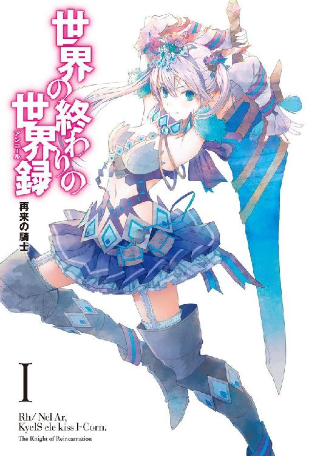
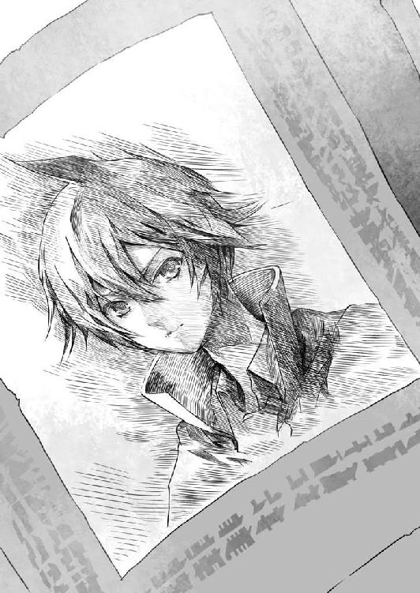

| 世界の終わりの世界録＜アンコール＞１ 再来の騎士<世界の終わりの世界録＜アンコール＞> (MF文庫J) | |
| 細音 啓 | |

ＭＦ文庫Ｊ
世界の終わりの世界録
１：再来の騎士
細音 啓
口絵・本文イラスト ふゆの春秋
Prologue │ 封印少女
世界の終わりの地。
見わたすかぎり灰色の荒野。
生物らしき影など一切なく、乾いた土壌には草木の一本も見あたらない。
無人の大砂漠でさえ観察すればわずかながら生物もいるし、草木も生えている。探せばオアシスも見つかるだろう。
だが、この地はどうだ。
天上は常に薄暗い雲に覆われていて、大地には一切の生物の気配がない。ただ延々と砂礫の荒野が広がるばかり。たった一人──
真珠さながらに輝く銀髪をなびかせた、裸身の少女を除いては。
「............」
神秘的な少女だった。
真夜中を想わせる曇天のもと自然と輝く銀髪に、どんな大海よりも深く鮮やかな色味を帯びた緑玉色の瞳。
そして、その一糸まとわぬ華奢な裸身もそう。
生まれたての赤子のようにきめ細かい肌ながら、まるで透けるような白磁色の肌。華奢でありながら手足はすらりと伸びて、さらに年頃の少女らしい丸みも感じられる。
見た目の年齢は十五か十六。
けれどそんな外見などまるで意味がないと言わんばかりに、少女が湛える印象は圧倒的に気高く、そして神々しかった。
「ここは......？」
吹きすさぶ風に舞う横髪を手で押さえる少女。
頭上を覆う雲。
素足に触れた冷たく乾いた大地、そしてどこまでも続く灰色の地平線。
自分の周囲をぼんやりと眺めていた彼女が、唐突に──
「......くしゅんっ！」
可愛い声でくしゃみした。
「寒っ!? 足冷たいし風強いしっ！ ていうか一体全体どういうことだ。なんでわたしが裸でこんな場所に立っている？ ......いや待て、落ちついて思いだせ」
華奢な裸身を荒野に晒したまま腕組みする少女。
が、落ちついて考えようにも周囲に吹きすさぶ風鳴りがあまりに強く、そして冷たく肌の温度を奪っていって──
「うるさい黙れ」
直後、ぴたりと風がやんだ。
少女が発した一言で。暴風さながらに渦巻く旋風が、まるで少女に恐れをなしたかのように鎮まったのだ。
一方で、少女の方はそれに驚いた素振りはない。
それが当然だと。自分の一喝で暴風が収まったことなど当然という様子で後ろ髪を手で梳きながら、何かを思いめぐらすように頭上を見上げて。
「............あー。そうだ。思いだした」
艶やかな唇から溜息がもれた。
「あの戦いで......ええと、そうか、わたし......封印を......」
そう呟いたきり、しばし天上を見上げたままの少女。
だが──
「そういえば......エルラインと約束が......」
その愛らしげな顔が、なぜか興奮したように次第に赤くなっていく。
握りしめた華奢な拳すらフルフルと震わせて。
最後に。
「エルラインめ......な......なぁにがすぐに封印から助けてやるだ」
少女は、空に向かって声のかぎり絶叫した。
「あれから三百年たっても助けに来ないから、結局わたしが自力で脱出するはめになったじゃないか、あの大嘘つきぃぃぃぃっぃっっっっっ！」
Record.1 │ 偽英勇は仲間がいない
１
『英勇』という言葉がある。
英雄よりも勇者よりも偉大な功績を残した者。あまりに大それた意味合いゆえ、長らく適格者不在であった世界的称号だ。
──剣帝エルライン。
歴史上ただ一人、その称号を与えるに足る男が現れるまでは。
無敵無類、強大無比、史上最強、あるいは人外。人間の強さを讃える言葉は数あれど、剣帝エルラインを喩える言葉としては物足りないだろう。
あえて言うなら「理解不能」。
人間はもちろん、世界を統べる三界の高位存在──地上の竜、天界の天使、冥界の悪魔たちと何百戦にもおよぶ激戦をくり広げて無敗。さらにその後、世界終焉の危機となった大戦をもあっさりと鎮めてしまった。
それが三百年前のこと。
後にも先にも、彼に匹敵する偉業を成し遂げる者は現れないと言われている。
──いや、言われていた。
「おめでとう。諸君らは選ばれ、そして機会を得た」
聖フィオラ旅学園・結束式。
普通科学校の入学式にあたる日、Ⅲ級学生騎士として入学したレンをはじめ、入学生に向かって学長が発した第一声だ。
「歴史上、剣帝エルラインただ一人が有する『英勇』の称号を、諸君らが手にするという機会。君たちがこの学舎で大いに研鑽を積み、信頼すべき同志を見いだし、そして『世界録』を発見する功績に期待しよう」
それが二年前。あの時にはまだ、学長の言うように自分も少しは期待されていたと思う。
厳しい入学審査を通過した入学生として。
だが。
「レン、お前またクラスで五番か」
......成績の良し悪しは置いといて。
......どうして俺の成績だけ大声で発表するのかな。
内心の声を押しとどめ、レンは無言でその紙を受けとった。
「学年で一番とは言わないが、せめて教室で三番には入ってもらいたいものだな」
背後では教官のわざとらしい溜息。
「それとも、英勇に似てるのは見た目だけか？」
「っ......」
見た目は関係ないでしょう。喉まで出かかった声を堪えて引き返す。教室の最後尾にある自分の机までのおよそ十メートル。その間に──
「レンちゃん惜しかったね。また五番？」
「でも教室が三十六人だし、その中で五番なら良い方じゃない？」
「なに言ってんだよ。アイツあれで一年落第してんだぜ。本当なら今ごろⅡ級騎士に進級して上級生になってるはずだろ。俺らの一つ上の先輩だったんだぜ」
「まあ相変わらずか。あんなに努力してる割にはさ」
「しっ、レンに聞こえるって。小声で。ね」
──小声だって聞こえてるんだけどな。
わざとらしいヒソヒソ声。ただし自分にまで聞こえる程度の声量で、教室中から聞こえるささやき声と失笑。そして最後に、決まってこう言うのだ。
外見だけ伝説の英勇にそっくりな偽英勇、と。
レン＝Ｅ・マクスウェル。
明るい茶の髪を無造作に切った髪型に、濃い青の瞳。
ほどほどに整った顔だちながら、まだ初々しさも残る素朴な表情。
身長は同じ十七歳のなかでは平均程度だろうが、屈強な学生騎士たちが集ったここ聖フィオラ旅学園ではむしろ小柄にあたるかもしれない。
外見的に突出したものはない。ただし一つだけ特徴を挙げろと言われれば──
剣帝エルライン。
外見だけが、あの英勇に酷似しているという点につきるだろう。
なにしろ学園の正門に飾られているエルラインの銅像を見た生徒が、間近を歩くレンを見て思わず見比べてしまうほどだ。
「前期の成績開示は以上だ、質問は？」
教官の声に、クラスメイト三十六名の誰からも手は挙がらない。
「結構。諸君ら中級生が承知のとおり、これはあくまで模擬試験だ。今年の冬に行われる進級試験こそが本番といえる」
カツッ、と硬質な靴音を響かせる指導教官。
「諸君らも我が校に入学して二年がたつ。ごく一部、三年目の者もいるが──」
自分に向けられる周囲の視線。
......ソレはもう慣れたよ。いつものことだし。
それに気づかぬフリをして、レンは手元の教本に目線を落とした。
「冬の進級試験に合格することでいよいよ上級生へと進級する。昨年の初級生から始まり、現在の中級生。そして上級生、卒業をひかえた最上級生。この四年間のうち、本格的な『旅団』としての訓練期に入るのが上級生だ。それはまさしく、諸君らが世界録を求めて世界へ羽ばたくにあたり欠かせぬ一年間となる。────レンッ！」
「はい」
「お前の先祖でもある英勇が残した最後の遺品だ。世界録の存在が世に知れわたったのがいつか当然に覚えているな」
「世界暦７９８年の秋です」
どうせ自分が訊かれるのだろう。
そう予想して準備していただけあって回答によどみはない。
「エルラインが二十六歳の若さで没してから二百年後。王立歴史研究所の調査隊が世界録──すなわちエルラインによる自筆の戦記を遺していた可能性を発表。その翌年には大規模な捜索部隊が組まれたが、見つからず。この捜索部隊が現代の『旅団』の前身となり、天界、冥界、地上の三界をも巻きこんだ世界録大争奪時代へとつながっていきました」
「......む」
思いがけぬ速やかな返答に教官が一瞬言いよどむ。
そのわずかな沈黙を狙って。
「それと恐縮ながら一つ申し上げます。かねてよりお願いしていることですが──」
レンは、席から立ち上がって教官を見すえた。
「エルラインに子孫はいない。彼は二十六歳で病死するまで一人で世界を放浪していた。子供どころか姉弟もいなかった。俺はエルラインの直系の家系じゃないし、代々さかのぼっても十一代前の先祖がようやく親戚にあたるような遠縁中の遠縁です」
「遠い先祖であるのは間違いあるまい？」
「誤解を受けるような言い方はやめていただきたいと言ってるんです。『お前の先祖』なんて言い方をすれば、まるで俺がエルラインの直系子孫であるように聞こえます」
レンという少年にとっての二つの不幸。
一つ目が、偉大すぎる英勇に生き写しの外見で生まれてきてしまったこと。
そしてもう一つが、遠縁ではあるものの、そのエルラインの遠縁にあたる家が、本当にレンの母方の家系であったということだ。
まさに英勇の生まれ変わり。周りからそう期待されながら、だが現実は残酷だった。
──剣帝に並ぶどころか同年代の学生騎士にすら及ばない剣の技量。
──似ているのは外見だけ。
指導教官からも教室のクラスメイトからも、さらに言えば聖フィオラ旅学園に入る前からもそれをなじられ続けてきた。
偽英勇。
それが、レンが幼い頃から与えられてきた不名誉称号だ。
「エルラインに子孫と呼べるような人物はいないのが歴史的事実です。俺は、あの英勇と比べられるような立派な生まれじゃない」
「────」
無言で、ただ小さく眉をつり上げる指導教官。
「話は終わりか？ ならば席につけ」
「......っ」
何事もなかったかのように流され、レンは拳を握りしめながら席についた。
「時間だ。本日はこれで解散とする」
黄金色にメッキされた懐中時計を一瞥する指導教官。
「前期の試験開示が芳しくなかった者は修練を怠るな。本番は一発勝負だ。ここで結果が出せなければ留年となる。無論わかっているとは思うが、な」
終焉戦争──
その全容がどんなものであったかは、三百年後の現代でも調査が進んでいない。
ただ一つ確実なことは、世界が『何か』の侵攻を受けたということだ。人間だけではない。竜、天使、悪魔ですらその禍々しき侵略者に脅かされ、地上、天界、冥界にいたるまで戦火は広がった。
その侵攻を止めたのが剣帝エルライン、そして彼の下に集結した伝説の三大姫だ。
天界からは、女神の勅命を受けた最高位天使フィアが。
冥界からは、地底世界の主たる魔王エリーゼ自らが。
地上からは、天界からも冥界からも恐れられた最強の竜姫キリシェが。
──天使に悪魔に竜。
三界を代表する高位存在の、まさにその最強戦力が剣帝の下に集結したという。
レンの読んだ歴史書では、彼女たちはいずれも人間の姿で、しかも三人とも見目麗しい少女の姿で描かれていた。
「......これ、描いたの絶対に男だろ。しかも完全に自分の趣味」
そんなことを呟きながら歴史書を読んでいたのを、今でもレンは覚えている。
歴史書のどこまでが想像かはわからないが──
ただ、そんな三界を代表する姫がエルラインの下に集結し、彼を含めてたった四人で、世界に侵攻する『何か』に挑み、激戦のうえ勝利したというのは史実だ。
その勝利こそ、剣帝エルラインを英勇たらしめる最大の武勲。
......が、エルラインも不死身ではない。
わずか二十六歳という若さで、子供も家族もそして近しい友人もいないまま、彼はひっそりと宿の一室で息を引き取ったとされている。この逸話で終わりならば、エルラインはただの歴史的人物で終わっただろう。
問題は、彼が没してから実に二百年後。つまり今から百年前に発覚した出来事だ。
「世界録......か」
学園の廊下を歩きながら、レンは、その単語をぼんやりと復唱していた。
──無かったのだ。
剣帝エルラインの遺品のなかに剣、旅装束、その他の所持品は遺されていたが、たった一つ、彼の手元にあるべきはずの物がどこにも無かった。
エルラインの手記『世界録』。
地上のあらゆる秘境や聖域、天界から冥界にいたる全てを旅した男の手記だ。
その価値は、単なる英勇の遺品というだけではすまされない。
終焉戦争の全容が記された唯一無二の歴史書であり、剣帝自筆の剣技指南書であり、数多くの古代遺跡や精霊の住処が記された世界地図でもある。
たとえば古代遺跡からは稀少な『失われた術式』を発掘できるし、精霊の聖域では強力な精霊の加護を得ることもできる。また古くから秘境や聖域といわれるエリアは、強力な武器の原料となる稀少金属の採掘地である場合が多い。
さらに天使や悪魔や竜、あらゆる大型徊獣との交戦記録も詳細に記されているという。
──しかるべき者が世界録を手にすれば。
──そこに記された情報価値は、世界の覇権を掌握するに余りある。
「だからこそ、見つけだせば英勇か......」
階段を下りて校舎一階の廊下へ。
〝世界録を発見した者に、歴史上二人目となる『英勇』の称号を授与する〟
世界連合協議会で正式発表された提案だ。
エルラインの手記に記された内容は人類にとって大いなる財産であり、それを見つけた者の功績は、まさに次世代の英勇と称されるにふさわしい。
全世界が新たなる英勇を夢見る時代。
ゆえに彼の手記そのものが、新たな英勇の訪れを待つ大いなる存在として認知され、いつしか『世界録』とさえ呼ばれるようになった。
「......でも俺は、まず進級考えないとなぁ」
教室で配られた成績通知を再びポケットから取りだして、レンは溜息をついた。
クラス総合順位『五位』。うち教養筆記『一位』、実技『八位』。
「筆記は去年から問題なかったし、やっぱり実技だよな」
進級試験は、騎士専攻の学生同士で行われる模擬決闘による審査だ。これを通過すれば上級生。騎士としての階級もⅢ級騎士からⅡ級騎士へ昇級する。
そして学園の卒業試験は、同時に、Ⅰ級騎士への昇級試験でもある。
これに合格すれば晴れて卒業。自分たちで新生の旅団を結成してもいいし、あるいはすでに名のある有力旅団への入団審査を受けるかだ。
と──
「レン、講義終わりましたか？」
おっとりした愛らしい口調で。
後ろからこっそり近づいてきた誰かが、いきなり自分の背中に抱きついてきた。
「ちょ、ちょっと!? 何するんだよ先輩!?」
「ふふ。だーれだ？」
「......いや、誰だとか言われても」
いたずらっぽく弾んだその声。
そして背中に押しつけられた双つの柔らかくも、その圧倒的な質感は──
「ていうか、こういうことするのフィア先輩だけなんで......」
「あら、わかっちゃいました？」
抱きついてきた手をゆるめ、金髪の最上級生が正面に回りこんでくる。
「暗い表情をして歩いていたので、つい気になってしまいまして」
「......俺が？」
「ほかに誰がいるんですか」
そういってクスっと微笑む少女。その可憐な笑顔に──
「そっか。心配かけてすいません。俺、そんな表情してましたか」
ふっ、とレンもわずかながらもつられて苦笑をこぼしていた。
......この人くらいだもんな。
......俺をバカにしないで接してくれるのは。
フィア・ネスフェリア。
深い青の瞳に、白銀がかった黄金色の髪が印象的な少女だ。
年齢は十八で自分より一つ年上だが、その落ちつきはらった物腰とやわらかな微笑は、自分よりずっと大人な雰囲気を湛えている。
「でも、あの......さっきみたいに......押しつけられるのは......」
「押しつける？ あら、何か当たってました？」
いたずらっぽい微笑みで前屈みになる彼女。
──こぼれ落ちそうなくらい豊満な胸元をめいっぱい強調する姿勢で。
レンにとって唯一困った点というのが、彼女の、薄地のブラウスを内側から押しあげているその圧倒的な胸だ。なにしろ服の生地がそのまま二つの山なりの形になって、今にも服のボタンがはち切れそうなほど盛りあがっている。
正直、目のやりどころに困る。
しっとりとした笑顔と対照的に、とにかく刺激的すぎるその身体つき。
......問題はそれを本人が自覚していて。
......わざわざイタズラで見せびらかしてくることなんだよな。
去年の夏、水着姿になった彼女を目撃して、純朴な男子生徒が何十人という単位で卒倒した記録はもはや永遠に破られることはないだろう。
「いや、やめようソッチの話は。ところで先輩ってば珍しくないか」
「というと？」
「この時間に校舎の一階に下りてくるの。いつもは四階の評議室にこもりっきりじゃん。評議会の副会長だし、いつも評議会の仕事で忙しそうなのに」
「成績確認ですわ」
そう言って彼女が指さしたのは、校舎一階の正面口の方向だ。
「最上級生だと、前期成績が有無をいわさず全員分張りだされてしまうので」
「ああ、あの公開処刑みたいな──」
そこまで言ったものの。
目の前の先輩女子は相変わらず笑顔のまま。ということは、もしや。
「ちなみに聞いてもだいじょうぶ？ 先輩、成績は？」
「いつも通りですわ」
「また一番!? ウソだろ、『療法士』が『騎士』も『法術士』もさしおいて学年一番だなんてありえないって!?」
「運が良かっただけです。試験当日の身体のキレも良かったので」
照れたように目を細める先輩女子。
──ほんと、勝てないよなこの人には。
教養筆記試験、学年一位。
実技戦闘試験、学年一位。
筆記の成績が優秀なのはまだわかる。これは日夜の努力が成績に直結するからだ。
特筆すべきは実技である戦闘試験。
最上級生の男女共通で行われる実技試験で、騎士専攻の男子よりも凄まじい剣技を披露し、法術士専攻の生徒より強力な法術を使いこなす。
なのに本人は治癒・蘇生を得意とする療法士というのだから。
全能の天才。聖フィオラ旅学園始まって以来の逸材とも言われる所以だろう。
「先輩、すごいな......」
後ろ頭をかきつつ、レンは讃辞の気持ちを素直に口にした。
「今年の冬、先輩もいよいよ卒業だし、最上級生になると誰と旅団組むのかっていうのも考えるんだろ？ 先輩なら有名旅団からも勧誘が来てるんじゃ？」
「ええ、そういったお話もいくつか頂いてますわ。学長づてで」
「やっぱり！ すごいじゃん！」
旅団──それは『武勇者たちによる派遣部隊』だ。
その主たる任務は世界各地を巡っての聖域や古代遺跡の調査、それに精霊の住処の探索。さらには危険な徊獣の討伐など多岐にわたる。精霊の発見や徊獣の討伐はそのまま都市力の増強につながり、古代遺跡の調査は『失われた術式』や『失われた技術』の発見に結びつくことからも、世界中の都市が旅団を支援し、また養成にとり組んでいる。
ここ聖フィオラ旅学園もその一つ。旅団結成を志す少年少女を育成する特務機関として創設され、毎年多くの優秀な人材を輩出している名門校だ。
「そうしたら先輩も、やっぱり本命は世界録？」
「そうですわね。そこは外せません」
変わらぬ微笑でうなずく彼女。
「でも、旅団の結成は今のところ考えていませんわ」
「......え？」
「ちょうどよかった。レンには前もって話しておきたかったのですが、私、もうすぐこの学園を去ることになりましたの」
「学園を!? え、だって卒業は冬なんじゃ!?」
「今日の前期成績の結果が一足早い卒業証書がわりということで。もう退学申請も提出済みですわ」
「......退学だなんて。そんなウソだろ先輩」
レンの意識とは無関係に、心の声が喉を伝ってこぼれおちた。
卒業を目前にひかえての退学なんて普通はありえない。
卒業試験を受けてⅠ級療法士の階級になり、自分の実力を証明したうえで新生旅団を結成するか、希望する旅団の入団審査を受けるかだ。
「どうしてさ。もうあと少しで卒業試験だってのに」
「先に言ったとおりの理由です。学園を出て世界録を探しに行くのは、一日でも早ければ早いほどいいですから」
「......でも仲間は？ どこかの有名旅団から内定が出たってこと？」
「いませんわ」
さらさらと金髪をなびかせて、あっさりと首を横にふる彼女。
「私と、旧い友人の女の子だけです。彼女ったらようやく封印が解けたようなので」
「封印？」
「ああ、ごめんなさい。今のは......聞き流してくださって結構です」
珍しくも苦笑気味に手をふるフィア。
懐かしむような面持ちで彼女は天井を見上げながら──
「実は、一緒に世界録を探してくれる友人には前から心当たりがあって、その友人がようやく来てくれることになったんです。ならば善は急げと言うことで」
「友人て......じゃあホントに、有名旅団からの勧誘とかじゃなくて？」
「ええ。だって組みたいと思う旅団がないんですもの。学長からも多々お話を頂きはしましたけれど、どれもこれも、わたしとしては物足りな──」
「ちょ、ちょっと先輩!? 待って待って！」
手をかざしてレンは先輩女子の言葉をさえぎった。
......あっぶない。
......今の、誰かに聞かれてたら相当ヤバイ発言だったんじゃないのか？
すぐ後ろを通過していく教官二人と生徒たち。彼らの姿が見えなくなるのを待って、レンは大きく息を吐きだした。
「いや、危ないって先輩。その発言」
「そうですか？」
「だってさ......」
すでに立派な功績を挙げている世界的名声のある旅団たち。周りの最上級生たちがそうした旅団への入団審査に必死になっているなか、そんな名高い旅団さえ、自分には物足りないと彼女は言っているのだ。
「先輩の成績は知ってるし......その、尊敬もしてるよ。俺なんかが口出しできる立場じゃないし、先輩の言う友人ていうのも詳しく知らないけど、最初はちゃんとした旅団を組んで経験積むのも大事だと思う。ほら、やっぱり外の世界は危ないから」
エルラインによって決着づけられた終焉戦争。
しかし、世界は人間だけのものではない。
古代遺跡や聖域となれば危険な大型徊獣と出くわす危険性。
さらに天界の天使、冥界の悪魔、地上の覇者たる竜も、人間が不用意に近づけば容赦なく排除しようとするだろう。この世界における人間とは、むしろ弱小な種族なのだ。
「あの英勇だって旅団を組んでたんだから」
「英勇？」
「だから剣帝エルラインだって」
「......ああ、彼のこと」
思いだしたようにフィアが手を打つ。
「そういえば現代では英勇などと呼ばれてましたっけ。本当に人間とは都合がいい。当時の彼は世界中から除け者扱いされた剣士だったのに」
「え？」
「いえいえ、こちらの話です」
珍しく慌てたように手をふる金髪の少女。だがそんな仕草もそこそこに、彼女はどこか懐かしむような瞳でこちらを見つめて。
「一つだけ訂正。さっきのわたしの旅団の件ですが、そうですわね、もしも、かつてのエルラインの旅団に匹敵するものが見つかれば加わってみたいかも」
「？ いやさすがにそれは......だって、あの伝説の旅団だろ」
エルライン剣帝旅団。
眩き純白の天使──実力では女神をも凌ぐとされる天界の大天使フィア。
昏き外套の皇姫──冥界の主たる魔王エリーゼ。
輝く銀髪の少女──天界、冥界からも恐れられた最強の竜姫キリシェ。
三界を代表する彼女たち三大姫と、それを率いるエルラインによる旅団。たった四人で終焉戦争を終わらせた、まさしく史上最高にして最強とされる旅団だ。
「それにさ。ほら、昔話って尾ひれがつくって言われるじゃん。実際の話がどれだけ大きく誇張されたかっていうのもわからないし」
本当は人間の騎士や法術士であった仲間が、物語として語られるにつれ、次第に天使や悪魔、竜の姫という役にとって替わられたという説もある。
その方がお伽話として面白味が増すからだ。
「ちなみにレン自身はどうですか？ エルラインの伝説は、やっぱり作り話だと？」
「俺？ 俺はそういう歴史考察とかって苦手だから......でも......」
じっとこちらの目を覗きこむような彼女のまなざし。
フィアという少女。
偶然にも伝説の大天使と同名の少女に向けて。
「本当だったらいいな、っていうのが素直な気持ち」
レンは控えめにうなずいてみせた。
「子供の頃にその物語を聞いてさ、俺、素直にすごいなって思ったし」
純粋に憧れていた。
偽英勇と呼ばれ続けながらも、レンがなお聖フィオラ旅学園で騎士として指導を受けているのも、そうしたエルラインの冒険譚に今も魅せられているからだ。
「すげぇ面白い話じゃん。最強の剣士に、大天使と魔王と最強の竜が付きそって、それで一緒に旅をしてたっていうんだから。そんな旅団があったら誰だって見てみたいに決まってるって。世界を巡ってどんな旅をしてたのかなんて、考えるだけでワクワクするし」
「......そうですか」
「フィア先輩？」
「レン、あなたはやはり好い。とても素直で、純心で......」
まさしく天使のような微笑みで。
フィアという名の少女は、しっとりと大人びた口調でそう口にした。
「あなたのような人間になら────」
時報の鐘。
言いかけた彼女の声をさえぎったのは、学園に鳴りひびく鐘の音だった。
「あ、もうこんな時間？ 先輩、いつもの評議会があるんだろ」
「今日は中止です。私の所用で評議室を使いたくて、みんなにお願いしました」
「私的利用？ 教官からも許可が出たんだ？」
「そのための成績学年一位ですわ」
いたずらっぽい笑顔の評議会副会長。何もかも計算ずくといった返事だが、この先輩が言うと本当にそう聞こえるからおそろしい。
「ところでレン、ここで会ったのも縁ということで、お使い頼まれてくれませんか」
「ん？ どこまで」
「学園の正門を出て、まっすぐ街を歩いた先にあるケーキ屋さん。予約は済んでるので、あとはそのお菓子をもらってくるだけですわ。私、その間に評議会の部屋を片付けておきたくて。知人とちょっとしたお茶会をしたくて」
「いいけど、評議室は飲食禁止だろ？ 教官に見つかったら怒られそうだけど」
「そこは心配なく。ああ、それと──」
手をふるフィア。
けれど、そのまなざしは妙に悪戯っぽく、そして艶めかしくて。
「お使いのお礼に、今度お勉強会などいかがです？ 私が学園を去る前に、学園の教室と言わず女子寮の私の部屋で二人きり。お姉さんが手取り足取りイロイロ教えて──」
「い、いや......それはまた別の機会で！」
勉強なのに手取り足取りって何だよ。
心の叫びを押し殺して、レンは逃げるようにその場を後にした。
２
学生街ミスティエ。
旅団養成機関『聖フィオラ旅学園』を中心に、その周囲に栄えた街だ。
レンをはじめ生徒が通う飲食店や衣装店が立ちならび、剣や鎗などを製錬する鍛冶工房のほか、世界地図や徊獣図説といった書物を取りそろえた大型書店もある。
そんな街の北側ゲート間近で──
「......買いすぎだろ、これ」
山のような菓子袋を両手で支え、レンは大通りを歩いていた。
「プリン十八個にホールケーキ三個にシュークリーム二十五個、おまけに焼き菓子三十七個って。フィア先輩、いったいどんだけ盛大にお茶会する気なんだか......」
店で買い物袋を見せられた時、本当に持てるか不安になったほどだ。
「ああ、それに夕方から雨が降るって言うし。こんなとこで雨が降ってきたら──」
言葉の続きは、かき消された。
はるか後方で響きわたる無数の悲鳴。
「......なっ!?」
持っていた買い物袋を放りだし、レンは瞬時にその場でふり返った。
〝自分と仲間の命を最優先に考えろ。それ以外であれば後でいくらでも替えはきく〟
三年間にわたる教官の指導に心から感謝したのは初めてだ。買い物袋を投げだすことに一瞬でも躊躇していれば、今ごろ血まみれで倒れていただろう。
翼を羽ばたかせる巨大な緑色の竜。
「疾竜っ!? なんでこんな街中に！」
地上における絶対強者として知られる竜種。
レンのすぐ頭上をかすめて地に降り立ったのは、紛れもなくその一体だ。
......危なかった。
......ふり返るのが遅れてたら、あの爪に頭を割られてたかも。
騎士としての修練。いや、むしろ修練以上に運の要素が強かっただろう。それほどに不意を突かれた襲撃だった。
「全長、五メートルくらいか？」
個体にもよるが、疾竜の成体は全長およそ七メートル。
竜種では小柄に区分されるものの、特筆すべきは空中での飛翔速度だ。最高速に達した疾竜は一流の狙撃手でも狙うのが至難の業とされている。
「でも、どうして学生街に。群れからはぐれて迷いこんできたってのか!?」
もしそうだとすれば、群れから孤立したことで警戒心が増し、ただでさえ攻撃的な気性がさらに荒々しくなっているケースが多い。それが市壁を突破して街に侵入した。
事例こそ極めて稀だが、その危険性は最悪に近い。
「こんなの誰が止められるっていうんだよ......」
眼前の怪物を見上げ、レンはなかば呆然と呟いた。
──学園の最上級生と指導教官が何人いれば勝てる？
──いや、そんな簡単な相手じゃない。
最上級生が加勢に来たところでしょせんは生徒。せいぜい小型の徊獣と戦った経験があるだけで、竜を相手にした経験のある生徒など皆無だろう。指導教官もすでに現役の旅団を引退した身。だとすれば撃破を考えるのは無謀。
とにかく時間を稼いで、疾竜が気まぐれに遠ざかることを祈るのみ。
「だとしても、時間稼ぎできるとすれば......」
見わたしたところで頼りになりそうな旅団も見あたらない。
学生街という名称で親しまれているものの街は街だ。その多くは一般人であり、商人や一般人の家族連れ、それに旅行客が悲鳴を上げて逃げていく光景だけ。
「くそっ！ よりによって俺しかいないのかよ！」
腰のポーチから護身用の短剣をひき抜く。
その刃渡りは包丁程度。武器工房に行かずとも商業区域で一般人が購入できる代物だ。
......こんなの、竜から見たら爪楊枝も同然だろうけど。
勝つことも負けることも考えない。
時間稼ぎだけに徹する。とにかく周りの避難が終わるまでは──
「おお、こんなところに美味そうな菓子が」
凜とした声が真横から聞こえてきたのは、その時だった。
「こんな新品同然の菓子を拾うとは運がいい。フィアへの手土産にちょうどいいか？」
自分が放り投げた菓子袋。
それをじっと見下ろす銀髪の少女がすぐ横に立っていて。
「おい、それ俺の菓子......じゃなくて、バカ、早く逃げろ！」
「俺の菓子？」
ふり返る少女──
「何を言う。先に見つけたのはわたしだ。早い者勝ちではないのか？」
海よりも深い緑玉色の瞳に、真珠さながらに煌めく銀色の長髪。
そんな幻想的な色味にくわえ、その面立ちも童話の妖精のように愛らしく。旅装束に身を包みながらも、その儚げな華奢な肢体は、可憐というほか表現のしようがない。
だが、そんな少女の容姿にレンが見とれていたのは一瞬だった。
「と、とにかく逃げろって！ 呑気なこと言ってる場合じゃないだろ！」
「逃げる？ このわたしが逃げる必要がどこにある」
銀髪の少女がムッとした表情でこちらを見上げる。
「そもそもだ人間、このわたしをバカと言ったな。このわたしを誰......え............」
その直後、息すら止めて、少女がハッと目を見開いた。
こぶりな手をわなわなと震わせて。
「え、......え、......エル......エルラ............」
「はい？」
「エルライン、生きてたんだな！」
少女が、声を上げて飛びついてきた。
「会いたかった！ ずっと探してた！ そうだ、いくら人間だからってお前だけは特別だ。たかだか三百年くらいでお前が力つきるわけが──」
「だから、意味わかんないって！」
少女を抱えながらレンは地面を蹴った。
彼女が地面に擦れないよう全身で庇いつつ、地を転がって後方へ。
──轟ッ！
一瞬の後、振りおろされた竜の尾が、真後ろのレンガの塀を跡形もなく破壊した。
「早く逃げろ！ 見たろ。とにかく疾竜はやばすぎるんだから！」
「倒せ」
「......は？」
「だから、倒していいぞエルライン。殺さない程度ならわたしの同胞とて遠慮はいらん。アイツ、わたしがこの街に来る前からずっと後を追いかけてきた小生意気な奴だ。目障りだから拳骨一発で仕留めてしまえ」
「追いかけてきた？ それって──」
銀髪の少女が口にした言葉の意味。
それをレンが理解するより先、疾竜が大地を踏みぬく音が鼓膜を震わせた。
押しつぶされる!?
頭上を覆いつくす黒い影。疾竜が狙い違わず自分たちに向かって急降下してくる。そう悟った刹那、レンは自分に抱きついていた少女を突き飛ばした。
「バカ、だから突っ立ってないで逃げろ！」
地上に迫る巨大な竜の影。
......間に合えっ！
願うような気持ちで小刀を構え、自分も後方へと跳びさがって──
衝撃。
息すらできない、無慈悲の衝撃に圧倒され、レンははるか後方へと吹き飛ばされた。
「......っ......が！ ......」
背中を強打した衝撃で呼吸すらできない。視界が真っ赤に染まっているのは額からの出血だろう。竜の爪の先端がわずかに掠めていった時の切り傷だ。
......死んでないだけ......マシか？
......いや、......あんま変わらない......よな。
半ばから砕けた短剣。あまりにあっさりと、そして残酷なまでに砕けちった自分の武器。
ほぼ柄だけになったソレを握りしめ。
「...............来いよヘボ竜」
レンは、全身砂まみれの姿で立ち上がった。
「そんな......攻撃............ちっとも......効いて......ねえんだ、よ」
絞りだすような声。
翼を大きく広げる疾竜に向かって、挑発するように手招き。
──偽英勇。
──自分は英勇でもないし、竜を一人で倒せるような最強の剣士でもない。
だけど、それでも意地がある。
時間を稼ぐんだ。学園から応援が来るまで。そして何より、目の前にいる銀髪の女の子が逃げるだけの時間を稼がなくては。
「......だから、逃げろって言っ......て、んだろ」
血に染まった視界のなか、いまだ逃げも隠れもしない銀髪の少女の姿が。
「早く......もう、本当にやべぇん......だから......よ」
「わかった」
こくんと、何かを理解した様子で彼女がうなずいたのはその時だった。
「さてはお前、悪いモノでも食って腹でも壊したな？」
「......は？」
「まあいい。同胞に手を下すのは気が進まんが、わたしがやってやる」
口早にそう言って。
銀髪の少女が、あろうことか疾竜の目の前まで無造作に近づいていく。
「......っ!? お、おいやめ──」
「この竜姫キリシェが、こんな小物に後れをとるわけないだろう？」
不敵な笑みを湛えた少女の横顔。
その言葉の意味を、レンは、まるで夢の中にいるかのような心地で聞いていた。
......竜姫キリシェ？
......いや、だって......冗談だろ。その名前は、あの伝説の旅団の......
「わたしのことも知らない子竜か。どこの渓谷から抜けだして来たのやら」
大きく翼を広げる疾竜。
見上げるほど巨大な怪物を前に、たった一人で対峙する小柄な少女。
「しかもわたしの前で威嚇？ なるほど、同属がお前の縄張りに立ち入ったから、それで怒って街まで追いかけてきたわけか。自尊心だけは一人前だな」
「や、やめ──」
それ以上の言葉を紡げなかった。遠のく意識。その場に立つことが精一杯で、伸ばした手も彼女の背中には届かずに──
次の瞬間、レンは生涯忘れられぬ光景を目の当たりにした。
「痴れ者が」
少女が地を蹴る。
それは跳躍でなく、もはや飛翔と言った方が適切だっただろう。高度、十数メートル。翼を持つ疾竜のさらに頭上へと達した少女が、たった一言──
「重力堕崩」
強大な局所重力場。
舗装された路面を一瞬ですり鉢状に陥没させる超重力の圧力が、そこに立つ疾竜を呑みこみ、悲鳴を上げることも許さぬまま地面に叩きつぶした。
──疾竜に抵抗はおろか反応さえ許さない。
人間が同じレベルの法術を発動しようとすれば、長大かつ複雑な術式儀式と精神集中が必要だろう。それをたった一言で。
言霊。
発した言の葉がそのまま世界に干渉して具現化する。それがどれだけ強力かつ高度な術式か、人間であるレンには想像すらできない次元だった。
「ふん、そこで少し頭を冷やせ」
空高く舞い上がっていた少女が、空中で一回転しながら可憐に着地。
地面に穿たれた巨大な陥没孔。その最深部で気絶している疾竜を一瞥し、そして、ふたたびこちらに向かって飛びついてきた。
「エルライン！」
「またかよ!? ......てか、なんだ、この力......？」
銀髪の少女がぎゅっと抱きついてくるのだが、レンがそれを振りほどこうとしても腕が一ミリも動かない。彼女の華奢な姿からは想像もできない膂力だ。
「はは、こいつめ。やっぱり生きてたのか！ わたしの封印から五年後に病死したという話を聞いた時は何の冗談かと思ったが、そうとも、お前が病気程度で死ぬわけが──」
「い、息が............死ぬ......窒息する......」
「......お、おい？ どうしたエルライン？ さっきからお前らしくないぞ？」
ぽかんとした様子の彼女が抱擁をゆるめてくれた。
「けほっ、けほ......あ、あのなぁ......」
こちらを見上げる彼女に、激しく咳きこみながらもレンは答えた。
「俺はエルラインじゃないって。よく間違われるけどさ。だいたいエルラインは三百年前の英勇だぜ、人間がそんな長寿なわけないだろ」
「？ エルライン、わたしを......忘れてしまったのか？」
「だから最初から知らないって」
「......そんなバカな」
銀髪の少女が何かを考えたような仕草の後、こちらに近づいて、しかも今度は胸元に自分の顔を押しつけてきた。クンクンと、まるで犬が匂いを嗅ぐように。
「っ!? なにすんだ!?」
「ほら見ろ、エルラインの匂いだ。わたしがお前を間違えるわけがない」
「......と、とにかく離してくれっての！」
絶世の美少女といってもさしつかえない少女に抱きつかれ、しかも匂いまで嗅がれるというのはさすがに恥ずかしいものがある。
「いや自信満々なところ悪いけど、本当に俺は別人だから」
「......なに？」
「俺はレンていうの。ええと、ずっと親の代をたどっていくと遠いご先祖様にはあたるらしいけど、でもエルラインは子供なんかいなかったから直系の子孫なんかいないぜ。俺も古い親戚つながりだから。末裔も末裔だよ」
「末裔......お前が？ ......ではエルラインは............」
ぼんやりと呟く少女。その表情がみるみる暗くなっていく。
......だから、なんでそんな寂しそうな目で俺のこと見上げてくるんだよ。
......悪いことしてないはずなのに、俺の方が心苦しくなる。
「だからさ、エルラインは......もういないって」
英勇は死んだ。
そこまで言葉にする気にもなれなくて、ただ「いない」と告げるのが精一杯だった。
「............」
光を失った緑玉色の瞳。
唇を噛みしめながら、少女がゆっくりと踵を返した。
「お、おい！」
ちらりとこちらにふり向いて、キリシェという彼女はたった一言呟いた。
「......外見だけ、か............」
強さをともなわない、見た目だけ英勇に似た赤の他人。
......だけど。
その一言を受けながらも、レンは、自分が驚くくらい冷静でいることに気づいた。
赤の他人。偽英勇。伝説の英勇と比べられる揶揄は様々で、そこには必ず自分を小馬鹿にした嘲笑めいた感情がこめられているものだ。
けれど彼女の言葉にはそれがまったく感じられなかった。
エルラインはもういない。彼女が自分自身にそう言い聞かせるための悲哀の説得。
......なんか、そんな感じの言い方だよな。
疾竜をこともなく一蹴した銀髪の少女。とてつもない圧倒的な強さだった彼女が、今はその背中が本当に小さくて、弱々しくて、そして儚く映る。
「あ、あの......ええと............」
声をかけたくて。けれどかけるべき言葉も見つからなくて。
そんなレンがふと目にしたのは──
巨大なお菓子袋を引きずっていく彼女の姿だった。
「おい!? それ俺のだってば！ しょげたフリしてちゃっかり持っていく気かよ!?」
「疾竜、かわりに退けてやっただろう？」
「......っ、ぐ」
そう言われるとこちらも言葉の返しようがない。
自分の命も含め、街の住民が無事だったのは間違いなく彼女の功績なのだから。
「......わかった。いいよ、もってけ」
半分は諦めで半分は納得。両方の感情を溜息にこめて、レンは肩をすくめてみせた。
......フィア先輩に頼まれてた分、自腹でもう一度買えばいいし。
......それに、これ以上悲しそうな目を見るのも、な。
「ここらで一番有名な店の菓子だから美味いと思うぜ」
「人間にしては話がわかるな」
ふっ、と少女がこぼした一瞬の微笑。
寂しそうな表情のなかに、硝子のように儚い笑みをかすかに浮かべて。
キリシェと名乗る少女はレンの前から姿を消した。
──それが始まり。
──偽英勇と呼ばれた少年と、伝説の竜姫とが織りなす物語の、その始まり。
Record.2 │ 竜と天使と学生騎士と
１
天上を塗りつぶす黒い雲。昼間は遠い地平線の彼方にうかんでいた暗雲が、いつしか見上げた空を覆いつくしていた。
ぽつり、ぽつりと降りだす小雨。
「あっぶね。やっぱり降ってきたか」
菓子袋を抱えたレンが聖フィオラ旅学園に戻ったのは、そんな矢先のことだ。
......買い物行ってから一時間以上たってるし。
......フィア先輩のことすっかり待たせちゃってるよな。
発端は、街に迷いこんだ疾竜だ。幸いにして受けた頭部の傷は浅かったが、壁に叩きつけられた背中はいまも激痛を訴えている。
と──
「よおレン、なんだその菓子。パーティーでもやるのか？」
「もしかして自分へのご褒美ってやつ？ 試験成績クラス五位おめでとうってか」
校舎一階通路、ふり向いた先に立っていたのはレンのクラスメイト三人だ。
騎士専攻のイーベルト。
そして法術士専攻のシェン。
「え、それならアタシも欲しいな。成績四番だったんだからアタシにちょうだいよ。ね？」
男子二人に挟まれた位置で両手を差しだす黒髪の少女は彌音。こちらは療法士専攻だが、そんな彼女がこちらを見るなり首をかしげて。
「あれ？ ねえレン、どうしたのそのケガ？ てか、上着もボロボロじゃん」
額に残った出血の痕を指さす彼女。前髪に隠れて目立たないはずなのに、それに気づいたのは療法士専攻ゆえの注意力なのだろう。
「ああ、ちょっと色々あってさ。大した傷じゃないから」
疾竜と戦ってきた。そんな言葉をレンは喉の奥に押し返した。
話してもしょうがない。
竜が現れたことは目撃者も大勢いるが、そんな怪物と自分が戦ったことを話しても信じてもらえるかどうか。それに自分はぼろぼろに惨敗した身だ。自慢話にもなりはしない。
「ふーん？ でも治癒法術いらない？ 今ならそのお菓子五個でどう？」
「いや、この菓子は......」
「やめとけって彌音。どうせまた誰かに決闘挑まれてボロ負けしたんだろ」
彌音の肩に手をのせるイーベルト。
今日の試験結果で堂々のクラス総合一位だった学生騎士だ。
レンより頭一つ高い巨躯をいかした太刀の間合いと、振るわれる斬撃の速度。その剣に反応できる者は上級生でも限られているだろう。
学生騎士としての実力は、学園全体でも十指に入るであろう生徒だ。
「いつものことさ。レンが模擬戦で負けるのは」
法術士専攻のシェン。
こちらもイーベルトにつづき、今回の試験結果で堂々の第二位。教養筆記はレンに続く二番で、実技でも難易度の高い法術を成功させて教官を驚かせた。
そこに療法士の彌音。
「それとも、冬の進級試験で合格できるように、ソレで今から教官のご機嫌取りか？」
「......いや」
「どうした？」
「悪いけどさ──」
菓子袋を抱えたまま、レンはふっと自嘲めいた苦笑をこぼした。
「今日は勘弁してくれ。すげぇ疲れてるんだ。ていうかさ、俺なんかに構ってたって仕方ないだろ？ お前ら三人とも優秀だよ。俺、素直にそう思ってんだから」
「？」
無視するか反論してくるか。そう考えていたであろうイーベルトとシェンが、どちらもぽかんとした表情で言葉を失う。その沈黙の一瞬を突いて──
「じゃあな。俺は用があるから」
レンは、二階に続く階段を上っていった。
残された三人が我に返って何か言っているが、それを気にするつもりもない。今はもう、別のことで頭がいっぱいだったからだ。
......あの衝撃を言葉で表そうと思っても、頭が真っ白になって出てこない。
......こんなの初めてだ。
「あの子、凄かったな......」
煌めく銀髪と幻想めいた可憐な面立ちが印象的な女の子だった。
竜種。地上の覇者と称される高位存在だ。その疾竜を、まだ未成熟な個体とはいえ何一つ抵抗を許さぬまま昏倒させてしまった。
重力場を操る法術の一つだとは思うが、その術式は見当もつかない。
法術──
その根源は、悪魔と天使が用いる高位の波動であり、それを人間が真似たものだ。
厳密な区分としては人間の術式だけが『法術』であり、悪魔と天使の力はむしろ、自然現象に直接作用する『奇蹟』や『神秘』と呼ぶべきものに該当する。
それが後に、天使も悪魔も同様に、戯れか、言葉の利便性か、自分たちの力を『法術』と呼ぶようになったと言われている。
「だけどあんな法術あったっけ。しかもあの子、手加減してたよな......」
竜種を前にしても動じなかったというのは、いま思えば余裕の現れだったのだろう。
世界最高位の法術士？
だとすればその所属も間違いなく世界有数の旅団のはず。
「有名どころだと剣聖シオンの『精霊の調べ』？ あとは覇都エルメキアの『王立七十二階位特務騎士団』とか、最上位の女性術士だと『カナン巡礼聖教船』とかもあるけど。そんな有名どころが街に来るなら事前に噂になってるだろうし。ていうか、そんなすごい奴が道に落ちてる菓子なんてわざわざ欲しがらないよな......」
神秘的な雰囲気を湛えた少女。
旅団のメンバーには見えなかった。だからこそレンも彼女のことを一般人と思いこみ、命を賭してまで疾竜から守ろうとしたのだ。
「それこそエルラインの冒険初期くらいだよな。一人で世界を旅してたなんて」
旅団を組む必要がないほどに強すぎた剣帝。それこそ終焉戦争で伝説の三大姫が集結するまで、彼と旅団を組みたいと申し出る者すら現れなかった。
そんな伝承を頭にうかべ──
「でもあの子、妙なこと言ってたような......」
レンは、階段を上りながらぼんやりとそう呟いた。
〝エルライン、わたしを......忘れてしまったのか？〟
英勇そっくり。
生きてきた十七年間で何度そう言われたかわからないが、そうした言葉は全て「レンと英勇とが別人であること」を前提としたうえでのものだ。
だけど、あの少女は違った。
自分とエルラインが同一人物であると。
より正確に言うならば、エルラインが他界していることすら正確に理解していなかった。そうでなければあんな倒錯した台詞は出てこないはずなのだ。
そのうえで、まるで本当に英勇と知りあいであったかのような口調だった。
......それに、あの子が名乗った名前も。
〝この竜姫キリシェが、こんな小物に後れをとるわけないだろう？〟
竜姫キリシェ。
その名前から連想されるのは、言うまでもなく剣帝エルラインの旅団の一角を担った少女だ。最古の竜種『天銀竜』の姫。竜種のなかでも突然変異と称されるほど強く、天界の女神や冥界の魔王からも恐れられた史上最強の怪物。
剣帝エルラインが唯一苦戦を強いられた相手。一方で、エルライン率いる旅団への加入後は、まさに無類の強さで終焉戦争の鎮圧に貢献したとされている。
「まさか......だよなぁ」
あの理不尽なまでの強さ。
そして自分をエルラインと勘違いしてからの、あの思わせぶりな言葉。
「いや、でもさすがに無いよな。......あの子が伝説の......なんてことは」
終焉戦争で、三大姫はすべて戦死したと言われているからだ。
そして事実、終焉戦争以降に彼女たちを目撃した者は誰一人としていない。生き残ったエルラインだけがその後も世界を旅し、人知れず没したとされている。
「となると、やっぱ有名旅団の一人？ まだ俺と同じくらいの歳に見えたけど」
そう呟きながら校舎四階へ。
「あ、ここも人ぜんぜんいないのか」
昼間とは打って変わり、聖フィオラ旅学園の校舎は放課後になると無人同然だ。
初級生は速やかに帰宅して教養科目の勉強。
中級生や上級生になれば、所属する同好会で剣技や法術などの実技を磨く。
最上級生は旅団を結成するパートナー探しだ。成績優秀者は有名旅団からの勧誘もあり、その審査を受けるために学生街の外へ出向くこともある。
「ええとフィア先輩の評議室は」
評議会──
学園風紀や学則、さらには年間を通しての学内イベントを一括管理する委員会だ。
構成員は教官からの推薦だが、集まるのはたいていが学園の成績優秀者と決まっている。そこに彼女が選ばれるのは、ある意味当然のことなのだろう。
「......っと、さすがに菓子袋重いって。腕が疲れてきた」
四階の通路を左に曲がってそのまま直進。
雨の降りしきる曇天を窓ガラスごしに眺めつつ、奥にある部屋へと足を進めて──
「キリシェ、あなたもやはり世界録を探すのですね」
聞き覚えのある声が、扉を伝って響いてきたのはその時だった。
......フィア先輩？
「彼の最後の遺品。ありかの心当たりは？」
「いくつかはある」
そう答えたのは、フィアと比べいくぶん幼さを感じさせる声。鈴を転がすような美しい声ながらも強い意志を感じさせるその声は──
......さっきの女の子!?
疾竜を一撃で退けた銀髪の少女。聞いたばかりの声だ、間違えようがない。
「ですが、そもそも本当に存在するのかという疑問については？」
落ちついたフィアの声。
「私やあなた、そしてエリーゼも、誰一人としてエルラインが旅の合間に手記らしきものを書いていた光景を目撃していません。人間の作り話かも」
「あの男が世界録を書く時間はあった。わたしたちがいない間にだ」
強さに満ちた声は、銀髪の少女のものだ。
「空白の五年間。......終焉戦争が終わってから、エルラインが病死するまでの間ですね。たしかにその間の彼の動向は私たちもわかりません。私たち三人、いずれも致死級のダメージを負って存在の維持だけで精一杯でしたからね」
「そういえば人間の話では、三大姫は死んだことになっているのか？」
「ええ。あなたも封印から脱出したのがつい一月前ですし。私とエリーゼもそれぞれ天界と冥界で回復に専念して地上には現れませんでしたから。そう思われても自然かなと」
苦笑気味に声を弾ませるのはフィア。
「キリシェ、あなたはどこまで覚えています？」
「わたし？ ええと、まずお前が右足と左肩吹き飛ばされて、胴体に存在破壊級の一撃を受けたところまで。相打ちだったのか？」
「はい。あとエリーゼが敵の技に巻きこまれて全身分解されましたね。彼女の場合、肉体復元を諦めて速やかに転生術式に切りかえたのが正解でした」
「エリーゼは転生に成功したと聞いたが」
「そうですね。十年前にようやく。今年で満十歳の先代魔王です」
「まったく情けない。それでも天界最強の大天使と当時の現魔王か。わたしは封印直前まで無傷同然だったぞ」
「あなたが強すぎるだけですよ。息吹だけでほぼ無双状態なんだから」
呆れ笑いをにじませたフィアの溜息。
そんな少女二人のやりとりを、わずか扉一枚隔てて耳にして。
「............そんな......」
レンは、抱えていた菓子袋を思わず床に落としかけるところだった。
衝撃にも似た寒気が背筋を伝っていくのがわかる。
......嘘......だろ......
......フィア先輩が......まさか、あの伝説の......
教室で仲間はずれだった自分に、彼女が声をかけてくれた日を今も鮮明に覚えている。
〝レンはどうですか？ エルラインの旅団は、やっぱり作り話だと？〟
大天使フィア。
一説では天界の女神レスフレーゼをも凌ぐとされる天界の最強天使。
だが、それでこそ納得できる点もある。
療法士でありながら学生騎士の男子より鋭い剣技を振るい、攻撃法術においても法術士専攻の学生はおろか指導教官すら言葉を失うほどの技量。彼女の正体があの大天使なら、極限まで力を抑えてこの結果なのだろう。
──そもそも彼女のフィアという名前からしてもそう。
──隠す気などなかった。彼女は、誰に対しても平然と自分の正体を告げていたのだ。
興奮か、それとも緊張か。
全身を戦かせる寒気の正体がもはやレン自身にもわからない。
「......死んでなかったんだ。大天使フィアも、竜姫キリシェも......」
転生という言葉の正確な意味はわからないが、話の流れからすれば当時の魔王エリーゼも生存している可能性が高い。もちろん、彼女たちの話が自分の早とちりである可能性はある。たとえば自分以外の、他の学生がこの話を耳にしても容易には信じられないだろう。あまりに話が突拍子もなさ過ぎるのだ。
......でも俺だけは。
......あのキリシェって女の子が、疾竜を倒すのを一番近くで見てたから。
そんな彼女の姿は、息を呑むほどに可憐で幻想的だった。それに──
〝同属がお前の縄張りに立ち入ったから、それで怒って街まで追いかけてきたわけか〟
キリシェという少女が伝説の竜姫だとすれば、疾竜が街を襲った理由も納得がいく。
この街に来る道のどこかで縄張りに侵入した同属。
そんな彼女に対し、疾竜が激怒して追いかけてきたのだろう。
つまるところ──
あの二人がそれぞれ大天使フィアと竜姫キリシェ本人であるならば、彼女たちの人並み外れた強さも、そして今までの謎めいた言動もすべて説明がつけられるのだ。
「いずれにせよ、私も世界録とやらには興味があります」
フィアの声。
小川のせせらぎを想わせる落ちつきある声で、それでいて淡々と。
「終焉戦争後にエルラインがたった一人で何を目的に世界を巡っていたのか。彼が病死するまでの五年間。仲間である私たちに、何か伝えたいことがあったのかも」
孤独な剣帝。天界、冥界、地上の三大姫をしたがえて終焉戦争を終えた後も、彼はたった独りで旅を続けていたという。
死にいたるほどの病を抱えながらも、何を理由に旅を続けていたのか。
「だからこそ、わたしが世界録を探しだす。世界中の人間の誰よりも先に」
銀髪の少女の声。
その声は弱々しくも、けれど決して濁らぬ清廉さに満ちていた。
──世界録を求める意味の重みが違う。
世界中のどの旅団も学園の生徒たちも、世界録を、「英勇」の称号を手にするための道具としか見ていない。
けれど彼女たちは違う。かつて英勇と行動を共にした彼女たちにとって世界録とは、純粋なエルラインの遺品であり、大事な思い出そのものなのだ。そしてそれを探しだすことが、彼の仲間であった彼女たちにできる最後の餞であると信じている。
世界録を求める姿の、その何と純粋で美しいことか。
「............」
握る手に、レンは我知らずのうち力をこめていた。
......そういうことだったんだ。
......フィア先輩が言ってた、卒業前に学園を出て世界録を探しにいくっていうのは。
かつての仲間だった竜姫キリシェが封印から目覚めた。
だからこそ、もうこの学園に留まる必要はない。確かにその通りだ。フィアという少女が共に往く仲間はとっくの昔から決まっていたのだから。
「まあ、大きな話はそれくらいでしょうか」
カタンと椅子を引きずる音。
評議室にある大きな会議机と椅子を、フィアが動かしたのだろう。
「立ち話もなんでしょう。近況に関しては腰を落ちつけて話をしませんか」
「そうだな。ちょうどここに菓子もある。土産に持ってきた」
どさっと何かがテーブルに載せられる音。
「それは？」
「道ばたで拾った。ちょうど人間と取り合いになりかけたが、気前がいい奴で全部わたしに譲ってくれたぞ」
嘘つけ！
お前が問答無用で持ってこうとしたんだろうが──という言葉を押しこらえ、レンはぐっと口をつぐんだ。
「......あの、それってもしや、わたしがレンに頼んだお菓子では？」
「レン？」
「内訳がプリン十八個、ホールケーキ三個、シュークリーム二十五個、焼き菓子三十七個であれば間違いないです。今日のために用意しようと思ってたんですよ」
「数はピッタリだな」
「ほらやっぱり。どうりでレンの戻りが遅いと思ってた。彼、もしかしたらもう一度同じものを買い直してくれているのかも。後で謝っておきましょう」
「......レン？ さっきから誰だそれは？」
数拍分の間を開けて。
ああ、と銀髪の少女があっけらかんとした声を上げた。
「そうだ。そんなよくわからん奴より、聞けフィア！ さっきも話したが、エルラインと見まちがえるほどそっくりな人間を見たんだ！」
「ですから、それがレンですってば」
フィアの声がくすっと弾む。
「私と同じここの生徒ですよ。騎士専攻の中級生で十七歳」
「騎士か。なら、ますますエルラインと似ているな」
──トクン。
二人の口から不意に出た言葉。エルラインと似ている──聞き慣れた言葉のはずなのに、彼女たちがそう言った途端、激痛を覚えるくらい胸が大きく鼓動したのがわかった。
......違う。似てなんかない。
......俺は全然、そんな英勇と比べられるような凄い奴じゃないから。
いまだ進級試験に合格できず留年、Ⅲ級騎士のまま。
さっきの疾竜だって、相手が悪いといえばそれまでかもしれないが、ただのかすり傷も与えることができなかった。
「あのレンという人間、エルラインと同じ匂いがした......」
銀髪の少女の声がこだまする。
「容姿や体型が似ている場合、人間の生体構造や機能も似ていることは考えられますが」
「違う」
首を横にふって否定する彼女──そんな光景が扉ごしに容易に想像できた。
「そんな上辺の見た目や匂いじゃない。もっと奥の......何かが似ていたから。でなければ、わたしがエルラインと錯覚するわけがない」
「なるほど。まあ実は、私もそれが気になったから地上に降りて来たわけですが」
「......それでこの人間の学園に？」
「ええ。間近でレンを『観て』みたかったので。一つ上の学生として転入したのですが、レンは一度留年してしまって上級生になれず中級生のまま。私は最上級生なので現在は二つ上の先輩ということになりますね」
「留年？」
きょとんとした口調で、キリシェ。
「学生騎士として実力不足の烙印を押されたんですよ。レンは騎士専攻の生徒として入学したのですが、進級試験に落第してしまったと。もちろん落第する生徒は毎年何人かいるのですが全体としては微少ですね」
「なるほど。そんな実力だから疾竜を前にああも焦っていたわけか」
「それで、間近でレンを見てどうでした？」
「......わからない。ただ、現実を思い知らされた。エルラインはもういないんだと夢から醒めたような気分だった」
弱々しくこぼれる、伝説の竜姫の紛うことなき本音。
「それはレンが弱かったから？」
「いや、エルラインが強すぎたせいだ。あの男はまさしく理不尽の塊のような強さだった。あんな人間はもう二度と世界に生まれることはないと教わった。そんな気分だ」
「......レンは見こみがあると思いますよ。少なくとも私はね」
しっとりと穏やかな口調でフィアが続ける。
「さっきも話しましたが、私が天界から地上に降りてきた理由は単純です。あの戦いでの負傷の治癒も一段落したところで、地上にエルラインそっくりの人間がいることに気づいた。それで興味を持ちまして。調べてみようかなと」
「......エルラインの転生の可能性？」
「いえ。厳密な意味での『転生』は悪魔のみが使える秘術です。ただ遺伝という言葉のとおり、エルラインと似た性質がレンに発現している可能性はあった。つまり彼のようなデタラメな強さの継承です。......が、結果はハズレでした。私が推測したような遺伝の発現はゼロで、レンとエルラインの容姿が似ているのも本当にただの偶然でしかなかった」
「まあそうだろう。奴の強さを継いでいるなら疾竜に苦戦するはずがない」
「ですが──」
一拍分の深呼吸。
余韻を残すように言葉を区切ってから、再び響くフィアの声。
「本当はレンの観察が終わった時点で天界に戻っても良かったんです。ただ、......これは私自身も意外だったのですが、もう少し学園に留まるのも悪くないなと」
「理由は？」
「レンをもう少し見ていたかったんです。応援したくなったといいますか。あなたが封印から目覚めたことさえ知らなければ、このまま卒業まで一緒にいたかもしれません」
「応援？ どういう意味でだ」
「誰よりもひたむきな向上心」
そう答える少女の声には、たしかな慈愛の感情がこめられていた。
「自分とエルラインとは違う。それを一番よく理解しているのがレン本人なんでしょうね。剣の才能は乏しいし、恵まれた体格というわけでもない。でも周りの嘲笑に心折れることなく、毎日誰より努力しているのを私は見てきました。天使として、そういった人間の『徳』というものは応援したくなるものですから」
「まったく。それで大天使ともあろう者が人間ごっこか？」
「天使は人間に好意を持つ者が多いですし、私もその一人ですから地上暮らしは苦ではないですよ？ むしろ楽しくて仕方ない。偽英勇と言われている少年が、いったいどこまでの高みに上りつめることができるのか。それを見届けてみたくなりまして」
「............っ！」
とさっ、と腕から床へと滑り落ちる菓子袋。
それを拾おうとする意識すら置き去りに、レンは夢中で通路を駆けだした。
──衝動的に。
──意識するより先、身体の方が動きだすのを止められなかった。
「っ、何してんだよ俺は！」
言葉が出てこない。
熱しすぎた思考回路に、思いきり冷水を浴びせられた気分だった。
......そうだよ、フィア先輩の言うとおりだ。
......こんなところで話を聞いてる場合じゃない。先にやることが山ほどあるだろ。
自分は英勇じゃない。似ているのは外見だけ。上級生からも下級生からもそう馬鹿にされながら、だけど努力だけは続けてきた。
それは、いつか自分も外の世界を旅してみたいから。
いずれはあのエルラインや、伝説の三大姫のたどった世界の地平を見てみたい。
「だったら、俺がしなきゃいけないことなんて決まってるだろ！」
自分のするべきことは、ここでじっとしていることじゃない。一日でも早く同級生たちに追いつくために、為さねばならぬ努力がある。
だからこそ、走った先に目指した場所は────
遠ざかっていく足音。
「......で、さっきから誰だ？ 話を盗み聞きしていたのは」
ワンホールケーキ一つを前にしてフォークを握りながら、銀髪の竜姫──キリシェは、扉を隔てた通路へと首を向けた。
聞き耳を立てている人間が一人。
その気配は察知していたが、わざわざ追い払う必要もないと無視を決めこんでいた。
人間にとっては突拍子のない話だろうから信じる者もまずいないだろうし、騒ぎたてたところでキリシェには何の問題もない。それはテーブルの向かい側に座るフィアも同じで、こちらは普段どおりの微笑で紅茶をカップに注いでいるところだ。
「気になりますか？」
湯気だつティーカップをキリシェに渡しながら、フィア。
「珍しいですね。人間の動向をあなたが気にするなんて」
「お前こそいいのか？ 一応、人間のフリをして暮らしているくせに」
「私はいいんです。あなたが封印から目覚めてくれて、一緒に世界録を探しに行くことになったから。退学届も申請済みですし、今さら学生に知られたって」
「まあ、お前がそう言うのならわたしはいいが」
ケーキを前に、キリシェはフォークを握ったままじっと手を止めていた。
──違和感。
キリシェが気になったのは、扉向こうで気配が去っていったタイミングだ。
話に興味がないなら早々に立ち去っていたはず。ここまで話を聞いていたということは、少なからず自分たちの話に関心を持っていたということになる。
だとしたら、なぜ最後まで話を聞き終えることなく立ち去った？
しかも盗み聞きしていたくせに、立ち去る時は足音を消すことも忘れて全力疾走。あれではこちらに気づいてくれと言わんばかりの走り方だ。
......それに、この人間の匂いは？
「フィア」
「わかりました。キリシェが気になるというのなら」
評議室の扉へと歩いていく金髪の大天使。
そのすぐ後にキリシェも続いて、フィアが扉を開けた隙間から頭をのぞかせて──
「......あいつ、あの時の？」
まさに同時、明るい茶の髪をなびかせた少年が、通路を曲がって階段を駆け下りていったところだった。見えたのはほんの一瞬だけだが間違いない。
「やっぱりレンでしたか。ほら、このお菓子。彼ちゃんと買い直しに行ってくれてたんですよ。申し訳ないことをしました」
通路におきざりになったままの菓子袋を抱えるフィア。
「............」
「キリシェ？ どうしました、そんな無言で」
「さっきから一つ気になっていた」
人影のない通路。
少年の立ち去った方向を指さしてキリシェは続けた。
「さっきアイツのことを偽英勇と言ったな。それはどういうことだ？」
「この学園でのレンの通り名みたいなものです。あまり良い意味では使われませんが」
溜息にも似た息をつくフィア。
「レンは、英勇の生き写しということで有名ですから。この学園の正門にエルラインの銅像が飾ってあるのを見ましたか？」
「見た。それにこの街のゲートにも同じような銅像が飾られていたぞ」
「そうです。レンがそれにあまりに似てるから、道ばたですれ違う人にふり向かれることもザラだそうです。人間の歴史の教本にもエルラインの肖像画は載っていますからね」
「それで？」
「そのせいで、ことある毎に英勇と比べられてしまうんです。彼の実力は学生騎士として十分に及第点だし、知識教養は私から見ても優秀です。ただ比べられる相手が悪いせいで不当に低い評価を受けている、と」
「......偉大すぎる男との比較か」
キリシェ自身、レンを英勇と勘違いし、彼の実力に疑問を抱いたのは事実だ。
しかしそれは本物のエルラインと錯覚したからであって、エルラインとは別人と知っていればそんなことは欠片も思いもしなかっただろう。
個体差。
それは天使や竜、悪魔においても大いに存在するものだ。何に秀でていて何に劣っているかで役割の違いこそあれど、それを理由に疎んじられることはない。
「偽英勇というが、そうバカにされるほどレンに問題があるのか？」
「いいえ」
フィアの返答はよどみなく、そして一切の迷いがなかった。
「レンは努力してますよ。入学当初は体力も剣技も学生騎士のなかでクラス最下位に近かったけれど、一年間でクラス中位から上位付近にまで上りつめたはず」
「それでも進級できなかったのか？」
「進級試験は、騎士専攻の生徒による模擬戦です。その相手が、同学年のもっとも強い学生騎士だったんです。結果、レンは何一つできずに敗退してしまい、それがそのまま落第につながったのが去年です」
対戦相手が悪かったという言い訳は通用しないし、再試験のような救済措置もない。
旅団を結成して世界を巡るうえで、大型の徊獣や竜、悪魔と対峙することは常に覚悟しておかなくてはならないからだ。相手が悪かったの言い訳で生き残れる世界ではない。進級試験における落第は、そうした過酷な現実を経験させるための制度でもある。
「でもレン、その相手とは今年の夏に再試合を挑んでましたね。ただの野試合でしたが、自分の努力の成果を確かめたいからと」
「結果は？」
「レン側の連敗です。ただし今度は三本先取で二本まで取った接戦での敗北でした。私もその時の試合は見ていましたが、レンてば珍しく嬉しそうでしたよ。彼、ずっと剣の修練を続けていましたから。誰もが寝静まった夜中まで一人で鍛錬場に残って」
「............」
「でも、周りの評価はいまも決して高くない。試合結果も敗北は敗北ですし、偽英勇の不名誉を覆すには至らなかった。結果、彼は今もクラスで孤立した状態です」
「......だが、そうしたら旅団を組む相手に困らないか？」
「まさにその通り。見つからないでしょうね。少なくともこの学園では難しいでしょうし、今のⅢ級騎士のままなら、世界のどこを探しても彼を受け入れてくれる旅団なんてない。......とはいえ、廊下でする話ではありませんね。評議室に戻りましょう」
菓子袋を軽々と抱えてフィアが踵を返す。開きっぱなしの扉から部屋に入っていく彼女をキリシェも追いかけて。
「考え事ですか？」
「エルラインと会った時のことを、思いだした」
閉めた扉に背をあずけてキリシェはぼんやりと天井を見上げた。
......アイツ一人だけだったな。
......人間だけでなく天使や悪魔からも恐れられた私に、ただ一人接してくれたのは。
生まれたその瞬間から、キリシェはあらゆる竜を抜いて最強だった。
同じ竜種からも突然変異とさえ恐れられるほど強く。天使、悪魔、竜という三すくみの力均衡を崩しかねない脅威として、天界の女神や冥界の魔王すら危険視したほどだ。
だが危険視されていることを知ってなお、キリシェはそれに無頓着だった。
関係ない。天界と冥界の勢力さえ、自分の脅威にならないことを理解していたからだ。
竜姫キリシェにとって──
強すぎるがゆえに孤独だった自分の心中を察してくれた唯一の存在は、同胞たる竜でもなければ同じ高位存在と称される天使でも悪魔でもなく。
〝エルライン。エルライン＝Ｅ・マクスウェル〟
初めて出会った対等な存在。
自分を恐れるどころか、親しげに話しかけてくれた唯一の相手こそ、いままで取るに足らぬ存在と思いこんでいた人間の剣士だった。
「人間は脆弱なかわりに個体数が多い。その個体も多様なことは知っている」
ちっぽけな自分の拳。
人としての姿に似せた自分の掌を見つめ、キリシェは小さく苦笑した。
「フィア、わたしはお前ほど人間に詳しくないが、人間が生まれつき弱いのは当たり前だ。エルラインが特別なだけで、レンの強さの方が本来の人間に近いのだろう？」
「はい。それはあなたが封印されていた三百年、何一つ変わっていない事実です。そして、さっきも言いましたがレンは確実に強くなってますよ。周りがそれを認めないだけで」
唇を閉じて沈黙する銀髪の少女。
ややあって、竜の姫は煮えきらない表情でフィアを見つめた。
「......認めたくないのか？」
「それもあるかもしれません。他人を否定するということは、そのぶん自分の評価を相対的に上げることに繋がります。そういう意味でレンほど都合のよい標的はいません。あの外見、それに血筋的にも英勇の遠縁にあたるんだから」
「それは今でも？」
「そうですね。この学園からは毎年、世界的に有名な旅団へ入団する学生が数多く輩出されます。そういった優秀な学友をもつ王族関係の血筋とか、すでに学園内で優秀な生徒たちが集まった派閥とか、いわば強力な力をもつグループほどレンに対する風当たりが強い傾向にあります。不当な評価や心ない噂をされたり、彼の入学当初はかなり表だった酷な仕打ちも見かけました。正直、よくレンがこの三年間もったと思うくらい」
「それで、旅団を組もうという者はいないというわけか......」
目の前のテーブルに積まれた菓子の山。
そこにあった焼き菓子を一つ口に放りこんで、キリシェは口元を苦々しく歪めた。
......口の中はこんなにも甘いのに。
......なぜこうも、胸の中に苦い感情がこみあげる？
最強の竜として恐れられるがゆえに孤独だった自分。
そしてここにもう一人、偉大すぎる英勇の面影を残すがゆえに、偽英勇と呼ばれ除け者になっている少年がいる。
......わたしは......
......昔の自分と現在のレンを......重ねているのか......？
「そう。だからこそ」
窓ガラスに指先で触れるフィア。すでに無数の雨粒が降りしきる世界を見つめながら、金髪の少女はしっとりとした口調でこう言った。
「誰か、レンのことを素直に認めてあげられる者が必要なのかもしれませんね」
「......認める？」
「そうです。キリシェ、あなたが教えてくれたことですよ。疾竜が街に降りてきて、その時にレンがあなたを庇った時のこと」
「それが？」
「その時レンは、自分が勝てると思ってあなたを庇ったと思いますか？」
〝.....................来いよヘボ竜〟
初め、キリシェはレンを剣帝エルラインと完全に錯覚していた。
だからこそレンの放った一言もまるで疑っていなかった。あの人外めいた強靱さを誇る彼が疾竜の一撃でダメージを負うとは思ってなかったからだ。
だが今なら、それが誤りだったとわかる。
──決死の威嚇。
──まさしく自分の死をも覚悟した、弱者から絶対強者への挑戦だったのだ。
「アイツ、死ぬ気でわたしを庇ったというのか......！」
「人間は弱い生き物です。強靱な生命力を持っているわけでなく、寿命だってせいぜい数十年。あのエルラインですら三十年を生きずして病死した。そんな弱い人間が疾竜の前に立ちはだかる時、どれほどの覚悟を要したことでしょう」
「............」
「キリシェ、いま一度、この運命に身を委ねてみようとは思いませんか」
「運命？」
「かつて、強すぎるがゆえに孤独だった竜姫は、後に英勇と称えられる人間に導かれて伝説の旅団の一員となりました」
降りしきる雨を見つめ、金髪の少女は背を向けながらそう言った。
「ゆえに今度はあなたの番。あなたが孤独な偽英勇を導く番とは思いませんか」
「っ！ それは、わたしがレンと旅団を......」
かつて英勇に救われた竜姫が、今度は自分が偽英勇を導いて旅団を結成する。
世界録を巡る旅路へと誘う時。
「フィア、お前もしや、久方の再会をこんな場所に指定したのは......」
「疾竜にレンが襲われるのは計算外でしたけれどね」
クスッと艶やかな笑みをうかべる彼女。
「キリシェ、あなたに見せたいものがあります。レンという少年の姿──」
そして。
金髪の大天使は、降りしきる雨の向こう側を指さした。
大いなる雨。
頭上は黒一色の雨雲に覆いつくされて、そこに吹き荒れる風もまた冷たく、無数の雨の雫と一つになって地上にふりそそぐ。
そんな凍りつくほどに冷たい水滴を頭から浴びながら──
「もう一度だ......」
ただひたすらに、レンは細身の剣を振り続けていた。
指先の感覚はとうにない。豪雨の寒気、そして握り続けた剣の重みで、すでに指先は痺れと寒気だけを感じる末端部位となりはてていた。
だが、それでも握る剣は放さない。
才能でも修練の成果でもなく、それは純粋なる執念のみがなせる業だった。
──夜の鍛錬場。
風雨をさえぎるための屋根も、視界を確保する照明もない。
旅団として世界を旅した時の想定だ。暗い夜道で徊獣と戦うこともあれば、吹きすさぶ風雨のなかで竜に襲われることもあるだろう。そうした悪状況を想定しての訓練場。
......だが、それはあくまで「そういう訓練もできる」という話だ。
雨が降れば自宅に戻り、教本を読んで知識を深めることも重要だろう。
さらにいえば雨下や降雪状況での戦闘訓練は、指導教官の監督下で行われる演習でも頻繁に行われるものだ。わざわざ自主鍛錬で行う必要性はない。
降りしきる雨。
誰もが寝静まった深夜において。冷たい雨に打たれ続け、なお休むことなく剣を振るい続けるのは、もはや執念を越えて狂気にすら匹敵する。
「だけどっ！」
落ちてくる無数の雨粒。
そのうちの一滴だけを凝視して剣を振りあげて。
「俺は、そうしなきゃ誰にも追いつけないんだよ！」
一閃。振り抜いた剣先が、迷い違わずその水滴を薙ぎはらった。
「......はぁ......っ............ぁ......っ......」
剣を地面に突きたてる。
疲労困憊の身体をくの字に曲げて、レンは地面に片膝をついた。
......俺は、どうしたって俺以外の人間にはなれない。
......今が弱くたって何が悪い。そのぶん強くなればいいだけじゃねえか。
「俺は......」
偽英勇と言われるまま終わりたくない。
かといって英勇になって皆を見返してやりたいかというと、そんなことは望んでいない。
「単に憧れてた。そんな単純な理由だっていいだろ。男なんだからさ......」
エルラインの伝説──
子供の頃に聞かされて、どれだけその物語に憧れていたことか。
自分だって、信頼できる仲間を見つけて世界を思うがまま巡ってみたい。
いまだ見ぬ新しい世界の地平を見てみたい。そう夢見たからこそ両親に頼みこんで遠地の聖フィオラ旅学園へと入学した。
「三年間ずっと辛かったよ。でも、ここに来て良かった」
剣を支えに立ち上がる。その表情に、レンは小さな笑みを浮かべていた。
「伝説は、本当だったんだな......」
エルライン剣帝旅団。あの英勇と、彼に従えられた三大姫たち。
......本当に存在していたんだ。
レン自身、三百年前の伝説が本当なのか疑問に思うことはあった。過去の逸話が肥大化したものかもしれない。過去の英勇願望が作り上げた物語なのかもしれないと。
だが自分はたしかに見た。
竜姫キリシェのあまりに強く可憐な立ち振る舞いを。
「すげぇよ。本当にすげぇとしか言葉が出ない」
努力し続ければ、いつか自分もあの高みにたどり着けるのだろうか。
努力し続ければ、いつか自分もあんな仲間と旅団を組むことができるのだろうか。
と──
不意に、雨に濡れそぼったレンの肩に光が灯った。
「お前......」
火の小精霊。大きさは蛍くらいだろう。ほのかに赤く点滅するだけの発光体にも見えるが、紛れもなく精霊種の一体だ。
『────』
名もなき火の小精霊が一瞬強く発光。
その瞬間、濡れしきったレンの肩周辺が、ふわりと暖かい風に包まれた。
「お前......心配してくれてんのか？」
ふわふわと宙を漂う発光体。
精霊は、存在そのものが謎に包まれている希少種だ。
普段は人目の届かない聖域に隠れているはずなのだが、この個体は前から自分に懐いてくれている。レンからすれば偶々見つけた子猫が懐いてくれたような感覚だ。
......もしかしたらコイツも一人ぼっちなのかな？
......なんてこと聞いても喋れるわけないし。
前ぶれなく現れてはフヨフヨと自分の周りを漂って、時間がたてば消えていく。
性格もまさに子猫のような気まぐれ屋なのかもしれない。
「わかったわかった。ありがとな、でも大丈夫だって。こんな冷たい雨のなかじゃお前が風邪ひいちまうだろ」
言葉が通じるかもわからない。
しかしレンがそう口にしてすぐ、発光体の点滅が収まった。虚空でぴたりと動きを止め、そして、一瞬の煌めきを放って夜の空へと消えていく。それを見届けて。
「......風邪ひくのは俺一人で十分だしな」
地面に刺した剣をひき抜いて、レンは弱々しく苦笑した。
まだ身体は動く。手の感覚はないけれど、剣を握る力は残ってる。
「もう一度っ！」
何もない虚空だけが練習相手。降りそそぐ雨の軌跡だけを相手に、ひたすらに剣を振るい、突き、薙ぎはらう。それを、もうどれだけ続けたことだろう。
「............あ............」
直後がくんと膝が折れ、レンはその場に膝からくずおれた。
地面に手をつく。
そんな簡単なことも咄嗟にできる力もなくて、顔から地面に倒れこんだ。
「は、はは......」
冷たい泥の感触を感じながら、こぼれたのは乾いた自嘲の笑みだった。
......ホントかっこ悪いよな。俺。
......こんなんじゃ、いつまでたっても偽英勇って呼ばれるのも仕方ないか。
全身に力をこめて起き上がり、膝だちに。
けれどそれ以上身体が動かずに、立ち上がることも剣を拾うこともできないまま、呆然と雨に濡れ続けて──
「立ち上がれ」
少女の声が聞こえたのは、その時だった。
「っ!?」
手を伸ばせば届く距離に立つ彼女。
その麗しき姿に、レンは息をすることも忘れて目をみひらいていた。
......ウソだろ。
......なんで......この子が俺の前に。
銀色に輝く髪をなびかせた少女。
神秘的な緑玉色の瞳に、小柄ながらも気高く可憐な印象を与えるその相貌。
「レン」
「っ！ なんで俺の名前を？」
「フィアから聞いた。お前が毎晩、ここで剣の鍛錬に勤しんでいることもだ」
竜姫キリシェ。
エルラインの率いた旅団の一人にして地上最強の竜。そんな彼女が──
「......昼間は、すまなかった」
頭を下げた。
不慣れな仕草ながらも、それは確かに謝罪の感情の表れだった。
「お前があまりにエルラインと似ていたので......つい動揺した。許せ。外見こそ似通っているが、お前と奴が違うことも、今はよくわかったつもりだ」
彼女が無造作に身を屈める。自らの手が泥だらけになるのも構わずに、彼女が拾いあげたのはレンが地面に落とした剣だった。
「わたしと、行くか？」
たった一言。
そのほんの一言の意味が、レンにはすぐには理解できなかった。
「......え？ あ、あの......それってどういう意味」
まっすぐに自分を見つめる彼女。
その翡翠色の双玉に強い意志を湛えながら──
「お前はお前だ。エルラインと同じように最初から強くあれとは言わない。だが、お前が望むのならばわたしの知るかぎりの剣帝の剣技を教えてやる」
「だ、だから待ってくれって！ それは──」
「最初から強くあれとも、いきなり強くなれとも言わない。だが、お前がわたしを庇って疾竜へ挑んだ気概を忘れるな。それが、わたしたちが旅団を組むたった一つの条件だ」
旅団。
その単語を耳にして、ようやく彼女が何を言わんとしているかを理解した。
「......俺とアンタが？ でもアンタは......もう、フィア先輩と一緒に世界録を探しに行くって決まってるんじゃ────」
「そう。だからお前が決めろ。学園に留まるか、わたしと共に世界を巡るか」
降りしきる雨の下、そっと一人佇む少女。
ただ一言──
「いつまでわたしを待たせる気だ？」
地面に膝をついたままの自分に、少女が不敵な笑みをうかべてみせる。
「っ！」
「それとも、立ち上がるのにわたしの手が必要か？」
竜姫キリシェからの問い。
挑発にも似た言葉に対し、偽英勇と呼ばれた少年の答えは簡潔だった。
「......いいや」
「ん？」
「黙っ......て、みてろ......て......んだよ......」
小刻みに震える膝に力をこめる。奥歯がすり減るほどに噛みしめ、握った手の平に爪が食いこむほどに力をこめ、レンはゆっくりとその場に立ち上がった。
──無我夢中で。
──底を尽いた体力のかわりに、レンを動かしたのは全身を熱くする昂揚だった。
初めてだった。
こんな自分に誰かが声をかけてくれたこと。
これが周りの学生からの言葉なら、単なる冗談だと思いこんでいただろう。けれど銀髪の少女の眼差しには、そんな疑いを感じさせない強い意志の光があった。
「............行くよ」
息を切らせながらも、レンは確かにそう口にした。
「俺も、アンタと一緒に外の世界に行く。......こんな泥まみれじゃ格好つかないけどさ、ずっと夢見てたんだ。外の世界をどこまでも旅して見てみたい」
「まったくだ。無様な格好きわまりない」
目の前の少女が大きく溜息。
けれどその瞳には、今まで彼女が決して見せなかった微笑があった。
「......だが、お前にはそういう泥くさい姿の方がふしぎと似合う。ほら」
泥だらけの剣。その柄をこちらに差しだす少女。
そんな何気ない仕草を間近で見つめ、レンはふと彼女の微妙な変化に気づいた。
「......えと、寒いのか？ 手、震えてるけど」
剣を差しだすキリシェの手が小刻みに揺れていた。
よく見ればこちらを見上げる上目づかいの顔もほんのりと赤みを帯びていて。
「それとも風邪──」
「ば、ばか！ お前が悪いんだ！ ......その、エルラインに......似すぎてるから......」
「はい？」
「だ、だから......さっさと剣を受けとれと言っている！」
剣を渡そうと必死に手を伸ばしている竜姫の姿は。
まるで初恋のラブレターを渡そうとしている初々しい少女の姿そのもので──
「こ、光栄に思え！ この史上最強の竜にして竜の姫たるわたしが......初めてなんだぞ。わたしから人間を旅団に誘うだなんて。初めてなんだからな！」
「いや、そんな初めてを強調されても......」
「き、貴様が慣れないことをさせるからっ。とにかく！ わたしと旅団を組むからには全力で鍛えてやる。覚悟しておけ！ そうでなくてはわたしの────」
キリシェがそう言いかけた矢先。
「あら、私を忘れられても困りますわ」
「......フィア先輩？」
優雅に傘をさした金髪の少女。
レンの見守るなか、微笑をうかべる彼女がゆっくりと歩みよってきて。
「ねえレン？」
広げたままの傘が宙へ高々と放り投げられる。
そして。
「初めまして」
ほとばしる黄金色の光。目を灼くほどの眩しい光が鍛錬場から噴き上がり、はるか頭上の暗雲をも突きやぶって世界を照らしだした。
「あらためまして。レン、お初にお目にかかります」
天界を代表する大天使──
黄金色の髪に、一対の純白の翼を背に顕現させた天使がそこにいた。
「大天使フィアと申します。天界における序列は女神レスフレーゼ様に次ぐ第二位。ふつつか者ではありますが、私もあなたの旅団に入れていただきたく」
「......え......っ......あ、あの」
「実を言えば、最初から声はかけようと思っていたんですよ？」
とっておきの種明かしを披露するかのような笑みの、大天使。
「すべてはあなた次第。私が学園を去る直前に、あなたにだけは私の正体を明かしたうえで、共に行くかどうか。その意思を確かめたかった」
「............」
......夢じゃ、ないんだよな。
言葉が出なかった。
幼い頃に物語として聞かされていた大天使と、そして竜の姫。
伝説のエルライン剣帝旅団の一員であった少女二人が目の前にいて、そして自分を外の世界へと誘ってくれている。
「あ、ちなみに呼び名は今までどおり『フィア先輩』がいいですわ。学園での呼び名に慣れてしまいましたし、そちらの方が親しみもありますから」
にっこりと笑み、その光り輝く巨大な翼を羽ばたかせる神々しい大天使。
対して、キリシェはといえば妙にうんざりした顔で。
「ふん、目立ちたがり屋が。そんな仰々しい姿を人間に見られても知らないからな」
「いいんですよ。どうせすぐに学園も離れることですし。ね、レン？」
「......え？」
思わずぽかんと口にしてしまう。
そんな自分をじっと見上げるのはキリシェだ。
「まだ話を理解していないのか？ 明日だ。明日の朝に出発して世界録を探しにいく」
「............ちょっと待った!? 明日っ!? いくら何でも早すぎだろ！」
「ですから私、退学届は申請済と言ったでしょう。レンは今夜中に休学届を書いておいてくださいね。善は急げと申します」
左腕をぎゅっと大天使の胸元に抱きしめられて。
「いや、だから出発の準備っていうか、いろいろと心構えの方も必要というか──」
「さあ行くぞ。急がないと別の旅団に世界録を先に見つけられてしまうからな」
問答無用で、竜の少女に右腕までがっしりと掴まれてしまった。
「楽しみですわ。世界探索の旅も久々ですし」
豊満な胸元を腕におしつけて微笑むフィア。
一方のキリシェは、そんな天使を呆れた表情で見つめながら。
「この色ボケ天使、いい加減に手を離せ。レンはわたしが鍛えるんだから」
「えー？ じゃあ昼間がキリシェで、夜の教育担当を私にしません？ 夜になったら私のところに来てもらいますわ」
「ダメだ。お前の目的はどうせ......」
「いいから、どっちも手を離せぇぇっっっ────────っ！」
伝説の竜姫と大天使とに両手を掴まれて。
偽英勇の少年は、ズルズルとその場を引きずられていった。
Record.3 │ 先代魔王の条件
１
学生街ミスティエ。
街を一歩踏みでた先には、視界いっぱいに広がる緑の平原。砂利を敷きつめて整備された歩道がまっすぐ延びて、彼方の大都市まで続いている。
そんな穏やかな道で。
「......なんか、一瞬だったな」
早朝の陽光を浴びながら、レンは歩いてきた方向へとふり返った。
──聖フィオラ旅学園ともしばらくの別れか。
──実家の家族にも手紙くらい書かないとな。最近、妹にも会ってないし。
ふり返った先の学生街は、もう点のように小さくなっている。三年近くも過ごした街だから愛着もあるし、離れることに名残惜しい気持ちもある。
ただそれ以上に、歩くだけで心臓が高鳴るこの緊張。
そのせいで、なかなか哀愁を感じる余裕もなかったというのが実感だ。
なにしろ──
「うん？ どうした？」
棒付きキャンディーを舐めながら、上目づかいの銀髪の少女。
竜姫キリシェ。三百年前に剣帝エルラインが現れるまで天界も冥界も手がつけられなかった史上最強の怪物にして、最古の竜種『天銀竜』の姫でもある。
そんな彼女が自分の右手を握っていて、さらに──
「きっと学園を出るのが名残惜しいのでしょう。でも旅とは得てしてそういうものですわ。別れの後に得る出会いもあります」
自分の左手側を歩くのは、まばゆい金髪と見目麗しい長身の少女だ。
大天使フィア。
こちらも天界の覇者たる天使の最上位格の存在である。
三百年前のエルライン剣帝旅団。そんな伝説の三大姫として知られるうちの少女二人が、自分の両脇に寄りそうようにして、同じ道を歩いているというのだから。
「とはいえ何も心配はいりません。ねえレン？」
自分の左肘をしっかり抱きかかえるフィア。
「必要なことはすべて私が教えてあげますわ。それはもう、夜の授業までしっとりと」
「いや、あのフィア先輩......ていうかさ」
「え？ なんですの？」
いたずらっぽい笑みで聞き返してくる大天使。
こちらの肘を掴んだまま、さりげなく、圧倒的な質量をほこる彼女の胸の谷間で挟みこむように押しつけてくる。わざとだ。絶対わざとだ。
「......先輩、そういうイタズラは地の性格だったんだ？」
「天使だからこそですわ。こうした熱心な肉体接触こそ人間への親愛の証で──」
「色ボケ天使の言うことなど聞かなくていいぞレン。人間を色仕掛けで誘惑して、そのあわてた様子を楽しむのがこいつの悪癖だ。女神からも呆れられてるほどだからな」
やれやれと大天使を睨みつける竜姫。
「というよりフィア、手を離せ。レンが困っているだろうが」
「先にレンと手を組んだのは私の方ですわ」
「......どっちも離してくれっての。ただでさえ荷物重いんだから」
右手と左手を両脇から引っぱられ、レンはぐったりと肩を落とした。
背中にかついだ大型荷鞄。その中身はレンの部屋から持ってきた最低限の旅道具を除けば、あとはすべてフィアの服とキリシェのお菓子だ。
「ちなみに服はともかく、このお菓子ってホントに必要なの？」
「無論だ。ほらこうして役に立っている」
チョコレートの欠片を小さな口に放りこむ銀髪の少女。普段どおりの飄々とした言い様だが、その口元は満足げに笑んでいて。
「おいしい」
「......子供かよ」
「十六歳は人間でも子供の範疇だろう？」
「いやだから十六歳にしたって、もうそろそろ菓子離れする歳......って、十六歳？ それって竜の年齢でだよな？」
一般的な寿命の概念として、竜や天使、悪魔の三大種族は個体数が少ないかわり、非常に長生種とされている。キリシェも同様で、三百年前にエルラインと旅をしていた時から生きているのだろうとレンは思っていたが──
「人間換算で十六歳だが？ あと、菓子は好きだ。人間の作る物の中での最高傑作だ」
チョコレートを頬ばる竜姫はこともなげにそう口にしてみせた。
「でも三百年前の戦いは......」
「その後すぐ、三百年間封印された状態だったのですよ」
そう答えたのは、微風に金髪をなびかせるフィア。
「キリシェは最後の戦い以後、特殊な封印によってこの世界から隔離されていました。時間も光も音すら皆無の隔離空間です。とはいえ時間が止まっていた中でも意識だけは保っていて、ずっと封印を破る機会をうかがっていたというわけです」
「それがつい一月ほど前だったな」
チョコレートを食べ終えたキリシェがうなずいてみせる。
「え。じゃあエルラインと戦ったっていう噂は？ あの時は何歳だったんだよ」
「十四歳。といっても、生まれた時点ですでにあらゆる竜より強力だったのが私だ。まさか人間に負けるとは思わなかった」
「......じゃあ、ホントに俺より年下なんだ？」
「そうだ。だからお菓子の一つや二つ食べても構わないだろう」
早足で歩きつつ、二つ目の棒付きキャンディーを取りだす伝説の竜姫。
「おいしい」
「幸せそうだなおい......まあいいけどさ」
満面の笑みをうかべる銀髪の少女。
その姿だけ見ると妖精のように可憐な女の子なのだが、レン自身、彼女が疾竜に手も触れず圧勝してしまった姿を目撃しているのは事実だ。
「俺なんか緊張しっぱなしなのに。ほら、前見てみなって」
左手を掴んだままのキリシェに、レンは顎先で前方を指ししめした。
──街道を行きかう武装した旅団たち。
自分たちの前にも後ろにも、何組もだ。
五人という少数構成の旅団もいれば、十人以上の大規模な旅団まで。さらにその構成も多種多様だ。騎士と法術士という基本技能はもちろん、特殊な精霊具を装備した精霊使いや、逆に一切の武具を持たない武闘者の姿もある。
「な？ みんな強そうじゃん。やっぱ学園の生徒とは全然違うよ」
身にまとっている雰囲気が違う。
鋼鉄のごとく鍛えられた体躯に白刃のごときその眼光。その佇まいといい気配といい、まさに歴戦の勇士と呼ぶにふさわしい。逆に、そうでなければとうてい世界中の遺跡を探検し、徊獣たちと戦うことなどできないのだろう。が──
「......ふぅん、そんなものか？」
最強の竜姫からみれば、そんな屈強な旅団たちも興味の対象にならないらしい。
「フィア、あいつらもわたしたちと同じ旅団か？ ずいぶん一旅団あたりの人数が多い気がする。三百年前は、もっと少人数だったような」
「それが時代の選択なのですよ」
通りがかる旅団たちに麗しい笑顔をふりまきながら、大天使。
「この三百年間で、旅団を構成する技能もかなり専門化されたんですよ。当時は騎士と法術士くらいでしたが、現在は八種類の技能にわかれています」
「八技能もか。レンは騎士だとして、ほかの七つは？」
じっとこちらを見上げてくるキリシェ。
そんな少女に、レンは手前を歩く多くの旅団を指し示して。
「騎士、法術士、精霊使い、武闘者、結界士、療法士、狩人、探索士。今はこの八技能かな。学園でもその専攻科ごとに分かれて指導受けてるわけ」
騎士──剣や斧といった武装を使用。常に近接戦闘を求められるがゆえに危険も高く、卓越した技能と冷静な判断が求められ、戦闘の『主力』とされる。
法術士──悪魔の用いる呪術・攻撃用法術を、複雑な儀式により人間の身で再現する。
精霊使い──精霊の力を宿した精霊具を利用して法術を使用する。
武闘者──防御法術と肉体活性を併用したうえで、自らの肉体と闘技のみで敵を討つ近接特化戦闘員。武器や鎧の強度に依存しないという強みをもつ反面、非常に多くの素養と修練を必要とすることから『全能』と称される。
結界士──隠蔽、封印、遮断、加護など天使の得意とする法術を使役する。
療法士──肉体活性や蘇生法術のほか、薬学、医学の知識も求められる技能。
狩人──害獣に関する様々な知識を活かして狩猟する知識系戦闘員。遠距離からの射撃特化で旅団の戦闘を後方から支援する。
探索士──旅団の頭脳担当で、分野としては考古学者に近い。過去の古代遺跡の調査情報をもとに、そこに仕掛けられた罠や隠し通路を探知する技術が求められる。
「あとは、その階級が上がっていく仕組み」
「階級？」
「八つの技能それぞれの称号。たとえば騎士なら俺みたいなⅢ級騎士から始まって、Ⅱ級、Ⅰ級、正騎士、名誉騎士、剣王、その最上位が剣聖......だっけ」
ちなみにエルラインの『剣帝』は、彼が英勇と呼ばれる前の俗称だ。
騎士の最高位は剣聖になるが、それも滅多に与えられる称号ではなく、世界中の複数都市による審議に合格する必要がある。
「だいたいどの技能も旅団に最低一人は必要って言われてる。八つの技能があるから、大半の旅団が八人構成になるってわけ」
「ふむ？ だが向こうを歩いている五人組は？」
「足りない技能を募集してる最中かな。あと、一人二役こなす多才な奴もいるからさ」
身近な例がほかならぬフィアだ。学園では療法士を専攻しながらも剣で男子の学生騎士を圧倒し、法術にいたっても周りの生徒を驚かせていた。
「フィア先輩なんか一人三役くらいできそうだけど」
「そうですわね。もちろんそれなりに大抵のことはできますが──」
ようやく手を離してくれた彼女が、宙を見上げてしばし黙考。
「得意分野をと言われれば一番が武闘者、次点が療法士ですわね」
「武闘者!? フィア先輩が!?」
「こう見えて武芸は得意ですわ。学園でも武闘者専攻でもよかったのですが、生徒との模擬戦で手加減を間違えると大惨事になりかねないかなと。まあ多少の傷ならすぐに回復させれば蘇生させられる自信はありますが、さすがにね」
笑顔で恐ろしいことを言ってのける大天使。
「フィア先輩が武闘者？ ......でも先輩が誰かを殴る姿なんか想像できないけど」
「レン、見かけにだまされるなよ？ この暴力女、本気になれば天界の女神レスフレーゼだって拳一つで黙らせる天界きっての戦闘狂だぞ」
さも当たり前といった口調のキリシェ。
「そうだったな？」
「あら、そんなことはありませんわ。女神様にはとてもとても敵いません」
対する金髪の天使はというと、いつもの笑顔のまま首を横に振ってみせるだけだ。
「ちなみにレンは、いま階級はⅢ級騎士ですわよね？」
「......俺？ 言うの？ ここで？」
「ふむ、気になるな。確かに現時点での戦力確認は必要だ」
興味津々そうな緑玉色の瞳で見上げてくるキリシェ。
「Ⅲ級騎士というと名誉騎士くらいか？ それとも剣王より上の階級か？」
「いやいや。さっき言ったけど普通に一番下の階級だよ。剣王の上って剣聖しかないし、そんなの世界中でも何人いるやら」
「なるほど。まあレンの場合はわたしが鍛える。とりあえずその剣聖が目標でどうだ？」
「......いきなり気が早すぎるって。あと、世界録を探すなら旅団のメンバーを補充した方がいいと思うんだ。俺がいうのもなんだけど。ほら見ろよ」
すれ違う旅団たち。
たとえば目の前の旅団同士がすれ違った時は、互いに一度立ち止まり、自分の胸に手をあてて会釈しているのが見て取れる。
「旅団同士の慣習ですわね。互いの健闘と無事を祈る意味をこめての挨拶ですわ」
「そそ。だけど俺ら、まだ一回もそんなことされてないじゃん」
ただの一般人にしか見なされてない。
なにせ少年一人と少女二人という編成だ。レンはかろうじて剣を提げてはいるが、フィアやキリシェにいたっては一切の武装なし。もちろん竜姫と大天使に武装など必要ないのだが、それを知らない他人からすれば、ほぼ非武装の自分たちがまさか旅団だとは思うまい。変わった三人旅と思われているに違いない。
「旅団は最低四人からって決まってるし、まず何をするにしたって四人目を──」
「心配には及びません。その四人目の仲間もちゃんと心当たりがあります。この道の先にある凱旋都市エンジュ、そこで合流する予定です。法術全般の達人ですよ」
待っていましたといわんばかりの笑顔で答えるフィア。
「法術の達人？ もしやまたすごい有名人？」
「有名人と言えば有名人ですわ。レン、少し考えればわかるはずですよ。私たちの旅団に必要不可欠なメンバーがもう一人残っているでしょう？」
いたずらっぽい口調で言葉を弾ませる大天使に、レンはしばらく宙を仰いで。
「まさかっ！」
確かに思いあたる人物がいた。伝説のエルライン剣帝旅団でキリシェとフィアに加え、エルラインの下に集ったもう一人の姫が残っているじゃないか。
「そのまさかだ」
棒付きキャンディーを舐め終わったキリシェが、満足げな口調でうなずいてみせる。
「先代魔王エリーゼ。かつて冥界の主だった女だ」
２
一陣の夜風。
首筋を撫でる旋風は思わずレンが身をふるわせるほど冷たく、息を吐けばそれが白い靄となって浮かびあがっていく。
「寒っ！ やっぱ窓開けると寒いな。吹きさらしの場所だし」
木造のコテージ。
都市から都市、街から街へと続く街道にいくつも設けられた基軸地点だ。旅人や旅団はもちろん、都市観光を目的とした観光客なども利用する施設である。
......コテージに泊まったのなんて何年ぶりだろ。
......三年前に聖フィオラ旅学園に受験しに来た時以来だっけ。
そして明日は凱旋都市エンジュ。
学生街からもっとも近い都市だが、そこで先代魔王エリーゼが待っている。
「ていうか先代魔王ってどんなのかな。やっぱ魔王だし頭にトゲとかあって爪やら牙やらあって身体も十メートルくらいある巨大で──」
「そんなのが人間の都市にいたら大騒ぎになるだろうが」
ミシッと扉の鍵が破壊される音が響く。
そんな開いた扉から我が物顔で姿を現したのは、キリシェだった。
「......頼むから素直にノックしてくれよ。鍵壊したってバレたら賠償もんだぞ」
「む？ 鍵なんてかかってたのか？」
どうやらこの竜姫は、鍵を破壊したことすら気づかなかったらしい。
「それはさておき訓練だ。荷物を置いたら外へ行くぞ」
「......え？」
「言っただろう。エルラインの剣技を教えてやる。まずはその下地造りだ。ほら、さっさと剣を持ってついてこい」
それだけ言って、キリシェはこちらの返事を待たずに通路へと出ていった。
吹きすさぶ寒風。
外に出るだけで、まるで氷水を頭からかぶったように身体の熱が奪われていく。
「いい風だな。身が引き締まる」
「寒すぎだろ!? 風邪ひくどころか寒すぎて気ぃ失うっつぅの！」
「私にはマフラーがある」
「だから俺にはないってば！」
「──という冗談はともかく始めるか。レン、お前の剣をよこせ」
鞘ごと剣を引ったくるや、慣れた手つきで剣を鞘からひき抜くキリシェ。
美しく流れるような所作。
抜き身の剣を片手で軽々とあつかう熟練の技能に、レンは素直に見入っていた。
「......すごいな。竜なのに人間の剣が使えるんだ？」
「肉体制御さえできれば難しいことではない。──そう、こんな感じに」
剣閃。
一瞬、彼女の右手が残像を残してブレる。
そうレンが認識した時には、彼女が握る剣の先端に、風に攫われ宙を舞う木の葉が三枚、その中心部を穿たれて突きささっていた。
「っ、今の......!?」
「三枚、木の葉が宙で重なった瞬間に突いた。あと一応言っておくと、三枚とも葉の中心にある葉脈を狙って突きさしている」
「葉脈!? って、あの細い部分を!?」
キリシェから剣を返されて、その先端に刺さっている葉をひき抜いてみた。
葉脈は、人間でいう血管にあたる。植物の種類で平行脈と網状脈に大別されるが、問題なのはその細さが人の髪の毛ほどしかないという点だ。
──この荒れくるう気流のなか、複雑に舞う木の葉の軌道を完璧に捉え。
──それが三枚重なった刹那に超速の剣撃でまとめて貫く。
──それも狙いは木の葉ではなく、木の葉の葉脈。
しかもこの竜の姫は自分と会話しながらだ。
決して集中していたわけでもなく、本気で剣をふるったわけでもない。なのにこの絶技。何十年という年月で剣技を極めた達人でさえ、こんな真似ができるかどうか。
「よし、わかったな」
「今のでわかったら苦労しないって!? せめてコツとか、意識することとかないのか!?」
「コツも何も、お前も似たようなことはしていただろう？」
「ていうと？」
「雨の夜。お前が一人で剣を振るってた時だ。闇雲に剣で空を突くのでなく、落ちてくる雨の雫を狙っていただろう」
「......そこまで見てたのか？」
「そういうところはエルラインに似ていると思ったからな。実力はさておくとして」
にやりと不敵な笑みをうかべる銀髪の少女。
「お前の修練と、その努力は間違っていない。お前は体躯に恵まれているわけでもないし、大剣でザクザク敵をなぎ倒すタイプでもない。相手の弱点を見極め、それを正確に狙い撃って一撃のもとに倒す技巧派だ。水の一滴、炎の一片を捉えて刹那の一刀で穿て」
「いきなり奥義っぽい話のような......」
「基本中の基本だ。エルラインの剣技は、その境地のさらにはるか先にある」
「──わかったよ」
当たり前のように告げるキリシェに、苦笑しながらもレンはうなずいた。
「とにかくやってみる。同じことができるまで頑張るから」
「二枚でいい」
腕組みしながら、その左手の指を二本立てるキリシェ。
「その剣先に二枚、木の葉を突きたてた状態でもってこい。葉脈を狙えとも言わない」
「......二枚？ それでいいんだ？」
思わず聞き返してしまう。この流れからしてキリシェと同じ三枚。あるいは四枚まとめて同じことができるまで練習しろと言われると覚悟していたのに。
「今日のところはな。わたしは部屋に戻るから、それができたら戻って来い」
「わかった」
背を向ける少女にうなずき、レンは宙を舞う木の葉へと視線を向けた。
コテージ内部。
「まったくもう、キリシェってばずるいんですから」
キリシェが自分の部屋に戻ったそこには、半裸に近い寝間着を羽織った金髪の少女が、さも自分の部屋であるかのようにベッドに腰かけていた。
「ずるい？」
「レンとの訓練。そんな手取り足取りしちゃって。私もまざりたかったですのに」
言って、艶めかしく身体をくねらせる大天使。
大きく開いた胸元からは薄紅色の谷間が際どいところまでのぞいている。フィア本来の妖艶な微笑もあいまって、年頃の男子なら一瞬で卒倒してしまいそうな艶姿だ。
「手取り足取りの記憶はないが」
「楽しそうだった、という意味ですわ」
くすっと口元に手をあてて微笑むフィア。
「私がコテージの入口にいたのに、気づかないくらい夢中で教えてたじゃないですか」
「......見ていたのか」
「少しほっとしました。あなたに元気が戻ったようで。三百年前もそうですが、やっぱり大勢で一緒に旅をすると楽しいですわね。レンも素直な子だから鍛えがいがあるし、一緒にいて楽しいでしょう？」
「わたしは最初から元気だ」
首に巻いたマフラーを外し、扉脇のコート掛けに引っかける。
──その手にわずかな汗。
──我知らずのうち、キリシェの掌にはほんのりと熱がこもっていた。
熱を帯びた自分の身体。けれどフィアの指摘をそのまま認めることが妙に気恥ずかしくて、キリシェはぷいっと顔を背けた。
「ほら、素直じゃないんだから......こんなに身体も火照っちゃってるくせに」
「う、うるさい！ 触るな！ 抱きつくな！ その無駄にデカい胸をおしつけるな！」
後ろから抱きついてくる大天使をはらいのける。
これは天使というよりフィア個人の嗜好なのだが、とにかく好意をもった相手に身体と身体で触れあおうとするクセがある。厄介なのは、その時に、接触した相手の心的状況まで読みとる力が彼女にあるということだ。
「ふむふむ、なるほど？ 今はそういう心境と」
「......何がなるほどだ色ボケ天使」
「ねえキリシェ、レンは、私たちの分まで強くなってくれると思いますか？」
「というと？」
「私もあなたも、三百年前の力には程遠いでしょう？ 私は古傷が癒えきっていませんし、あなたも力の源である竜因子が封印から目覚めきってない。もちろん大抵の相手なら何とかなりますけど、お互い当時の半分程度の力しか出せないのが現状です」
この状態でもほぼ世界に敵なしという水準ではあるのだが、まるきりゼロというわけでもない。考えられるのは最上位の徊獣と、そして何より──
「『五大災』の話、聞きましたか？」
「竜の渓谷で噂だけはな。冥界の現魔王に反旗を翻したというところまで」
「ええ。最悪、決戦も想定しておいた方がいいでしょう。あなたがレンを鍛えることに勤しんでいるのは、もしかしたらソレも考えての上かなと」
「それは考えすぎだ」
淡々と、キリシェは首を横にふってみせた。
「単に、わたしが覚えているエルラインの修練をレンに伝えた。それだけだ」
「そうですか。でも、だとしたらちょっとレンが大変かもしれませんわね」
窓の外を見つめるフィア。この部屋の角度からでは見えないが、大天使である彼女にはレンの姿が「視えて」いる。
疲労の汗をにじませながら、肩で息をする少年の姿。
「あなたが課した課題。アレは、実際には見た目以上に──」
「......理不尽なくらい難しいぞ、これ」
大きく肩を上下させ。
顎先から滝のように流れ落ちる汗を、レンは手の甲でぬぐいとった。
「どうなってんだよこれ......」
吹きすさぶ突風に舞う無数の木の葉。瞬きも呼吸も止めて葉の動きに意識を集中。宙を縦横無尽に舞う複雑極まりない軌道を捉え、そして。
「はっ！」
裂帛の意気とともに、レンは全力で剣を突きだした。
一閃。その剣先が踊る木の葉の端を掠めた。
......が、それだけだ。
葉の端っこをぎりぎり剣が切り裂いて終わり。『蝶のように舞う』という言葉があるが、まさにその類だ。中心を捉えるどころか、その端に剣がふれるだけで精一杯。
木の葉は風の影響でもって揺れ、踊る。
つまり剣を突きだした際にも、その剣撃によって生まれるわずかな気流の影響を受け、芯がブレてしまうのだ。そんな木の葉の中心を狙うことがどれだけ至難であるか。
......いや、それじゃない。本当の問題は別にある。
二回に一度は剣先が葉のどこかに触れる。そして回数を重ねれば、たとえ偶然であっても中心部に当たることもある。だが真の壁は──
「っ、またか!?」
剣の直撃を受けた木の葉が、真っ二つになって地面に落下していく。
そう。問題は剣が葉の中心を捉えたとしても、葉が剣に突きささることなく、そのまま勢いあまって木の葉を切断してしまうことなのだ。
──全力で突きださなければ宙を舞う葉に当たらない。
──だが手加減なしで放った剣が直撃すれば、木の葉がバラバラになってしまう。
「そういうこと......か！」
あの竜姫はこともなげにやっていたが、それがどれだけ常人離れした業であったか、ようやくレンはその全容を理解した。
〝水の一滴、炎の一片を捉えて刹那の一刀で穿て〟
剣を薙ぐ。突く。ふるう。全てにおいて生まれる気流はそれぞれ異なり、その力加減で気流の強さも変わってくる。それを完璧に把握しなければ葉の芯は捉えられない。
さらに、その後。
剣先が木の葉に触れる刹那のタイミングで、あえて剣から力を抜く。
全力ではなく極小の力でもって剣を支配する。
「......しかもそれを二枚同時にってか。さすが、難題出してくれるじゃねえか」
剣の柄を濡らす汗をぬぐいとり、レンは不敵に微笑んだ。
〝わたしと、行くか？〟
──嬉しかった。
鍛えてやるというキリシェの言葉。最初は何を意味するかわからなかった。ただ努力しろとか、頑張れとか、そういう言葉のアドバイスだけかと思っていた。
それが、こんなにも熱心に指導してくれている。わざわざ模範演技まで披露して。
......それに何より。
......こんな俺でも、英勇と違うとわかっていても旅団に誘ってくれた。
その期待に応えたい。
一人の仲間として認めてくれて一緒に旅ができる。そんな幼い頃からの夢を実現できたことが、こんなにも心躍る感動と情熱を与えてくれている。
「これで諦めたりなんかしたら、もったいなさすぎるだろ！」
寒風に晒され冷えきった手に力をこめて、レンは再び剣を構えた。
「一回、何が何でもだ！」
煌めく切っ先が、虚空を踊る木の葉二枚を貫いた。
葉の中心。さらにいえば、真っ二つにも粉みじんにもならず、木の葉は二枚とも剣先に綺麗に突きささったままだ。
「..................あれ？」
その結果に、目を瞬かせたのは他ならぬレン自身だった。
「成功......なの？ すげぇ偶然ぽいけど」
剣を握ったまましばしその場で立ちつくし、そして。
「よぉし！ やった、俺だってやればできるじゃん！」
勢いよくコテージへと走って戻り、そのまま彼女の部屋へと一直線に。
「キリシェ！ おい見てくれってばこれ！ できた、できたんだってば！」
「っ!? ま、待てレン！ 入ってくるな今はダメ──」
バタンと勢いよく開いた扉。その先で。
「......いい度胸だな。わたしの裸を覗き見か？」
一糸まとわぬ美少女。
可憐な旅装束を脱ぎさって、可愛らしいフリルつきの寝間着を握ったキリシェが、怒りと恥じらいの混じった赤面でもってこちらを睨みつけていた。
「あ、いや、違うんだ......別に悪気は............なくて、さ......」
そう言いながらも、思わずキリシェの姿に見とれている自分がいた。
ただただ純粋に愛らしかったのだ。
年頃の少女らしい丸みを帯びた身体つきに、白磁のような白い肌。その正体が竜であるということを忘れさせるほどに、キリシェの容姿は人間的な魅力を十分すぎるほど備えていた。特に、旅装束に身を包んでいた姿からは意外なほど、その身体は成熟していて──
「一応聞いておく。何か言うことはあるか？」
「......いや......あの、可愛いなって」
「突風」
顔を赤くしながらのキリシェの言霊。通路側の壁に叩きつけられたレンが意識を取りもどした時には、本人はとっくに寝間着に着替え終わった後だった。
「とはいえ、課題を成功させたのは褒めてやる。正直一週間はかかると思っていた」
レンの部屋で。
なぜか我が物顔で部屋のベッドに腰かけるのはキリシェで、レンはと言えば、疲労困憊の状況で絨毯の敷かれた床に腰を下ろしていた。
「この調子なら明日は三枚で明後日は四枚だな。その次は──」
「次は？」
「目をつむって同じことができるようになれ」
「ハードル高っ!?」
「エルラインの剣技はそこから先の話だ。とにかくお前の努力は認める。今日は休め」
ベッドに腰かけながらそう言う彼女。
......休め、って言われてもなあ。
肝心のキリシェがレンのベッドを占領する恰好で居座っている。寝ようにも彼女がいる状態では寝られるわけがないし、かといって退けとも言いづらくて。
「キリシェは寝ないのか？」
「一緒に寝る」
そう告げる彼女の真意が理解できなくて。
レンは、しばし視線を宙にさまよわせ、ぽかんと口を開きっぱなしにしていた。
「......はい？」
「だから、わたしもお前と同じベッドで寝る」
何の臆面もなく、ベッドに横たわって毛布までかぶってしまうキリシェ。
「お前も早く布団に入れ」
「えと......ごめん。よく事情がわかってなくて」
自分は人間だ。一方のキリシェは竜。
高等法術による肉体変化と空間歪曲を組み合わせての変身らしいが、外見は人間の少女そのものだ。一緒に寝るというのは、さすがに問題がある気がしてならない。
「一応、理由を聞かせてもらえる？ 自分の部屋にもベッドあるだろ？」
「習性だ。その方が落ちつく」
毛布にくるまりながら、眠たそうに目をこするキリシェ。
「故郷の渓谷には同胞がたくさんいたからな。わたしも群れて寝ることが多かった。寝る時は信頼できる奴と大勢で寝た方が寝付きがいい」
「......竜の習性か」
半分呆れ口調ながら、彼女がさりげなく口にした「信頼できる奴」という言葉が、少しだけ嬉しかったのは内緒だ。
「ちなみに三百年前はどうしてたんだよ」
「エルラインには断られていた。アイツ、夜中もずっと剣の練習をしていたからな」
「......あの剣帝が？」
「意外か？ 最初から強い人間などいないというのが、あの男の口癖だった。バカみたいな根性と頑丈さは別として、あいつの剣士としての強さは生来のものじゃない。剣帝と呼ばれたのも、単に誰よりも努力したうえで手に入れた結果での強さだ」
驚いた自分の反応が面白かったのか、ふっと表情をゆるめるキリシェ。
「それ、初めて聞いたかも......」
レンの知る剣帝の伝説は、彼が生まれながらの天才だったというものだ。才能に乏しい自分と違い、与えられるべき天分を与えられて世に生まれたのだと思っていた。
「その話もう少し聞きたいんだけど」
「話してやるが今日はここまでだ。ほら、早く寝るぞ。明日も早いんだ」
「っ、ちょ、ちょっと!?」
ベッドから起き上がったキリシェに抱きつかれ、そのままひょいっとベッド上に放り投げられた。その上から布団をかぶせられたかと思った時には、ちゃっかりキリシェが布団の中に潜りこんでくる。
「な、なあ、一緒に寝るのフィア先輩じゃダメなのかよ！」
「アイツはだめだ。とにかく隙あらば抱きついてきて暑苦しい」
狭いベッドのなか、互いの体温が感じられるほど寄りそってくる竜姫。
「うん、落ちつく」
「......いや、あの俺は」
「なんだ？」
「......何でもないよ」
横顔を向けてくる銀髪の少女。
その安らいだ微笑みがあんまり穏やかで、どうしてもその先が言えなかった。
地上最強の怪物と恐れられ、エルラインが現れるまで天界も冥界も、同じ竜からも拒絶されていた暴君。けれど今、自分の横で目をつむって寝息を立てる少女は、そんな噂とはまるで違う、ただの寂しがりの少女だった。本当は──
目の前の姿の方こそ、そんなキリシェの素顔なのかもしれない。そう思った。
「だけどさしあたっての問題は......」
年頃の異性の寝顔なんてほとんど見たことない。それが、吐息がかかるほどの距離で密着した状態で添い寝しているのだから。気にならないわけがない。
「......こんなので寝られるわけないっての」
顔が赤くなるのを自覚しながら、レンは一晩中、そんな独り言をくり返していた。
翌朝。
「？ レン、寝不足か？ 目が充血で真っ赤だぞ？」
「誰のせいだと思ってるんだよ」
熟睡から目覚めたキリシェに、レンはげっそりとした顔でそう返事した。
３
凱旋都市エンジュ。
学生街ミスティエからもっとも近い位置にある都市で、その周囲は、害獣の侵入を防ぐための巨大な市壁によって覆われている。
「三百年前、天界と冥界両方の遠征を終えたエルラインが帰還した都市だっけ」
天界と冥界。
いがみ合う二つの戦力を平定し、争いを鎮めたエルラインの帰還を祝った都市。
その縁から、現代でもエルラインとの繋がりは深い。
「ほら、早く行こうぜキリシェ、フィア先輩も！」
「落ちつけ。はしゃいだって仕方ないぞ」
「......まったくもうレンてば。子供みたい」
半分呆れ顔のキリシェと、苦笑を浮かべるフィア。
「だって気になるじゃん。俺だって、やっぱ一度は本物見てみたいって！」
二人を後目に、レンは行きかう人で雑踏する道を早足に進んでいった。
学生街と比べ、ここ近隣でもっとも巨大な都市だけあって人混みも建物の数も桁違いだ。大通りにあたる公道は道の両端に露店が建ちならび、道行く人も家族連れから商人、観光客、それに旅団らしき武装の旅人まで幅広い。
見上げるほど巨大な礼拝堂の正面を走りぬけて──
「あった！」
ぱっと広がった視界の先に見たモノに、レンは思わず声を上げていた。
英勇の剣。
広場として設けられた記念展示場。
大きな噴水を背景に、厳重な警備のもと石碑に突きたてられた一本の剣。
──霊剣ヴィエルジュ。
剣の柄はすっかり古びて色が抜け落ちているにもかかわらず、その刀身だけは、今も、まるで澄んだ海面さながらに透明感のある輝きに満ちている。
凱旋都市エンジュの至宝。いや、世界中の全剣士の至宝と呼んで構わないであろう、世界中に散らばるエルラインの遺産の一つである剣だ。
「な、なあ？ あれ本当にエルラインが使ってたの？ 霊剣ヴィエルジュだっけ」
「事実だ」
階段状になった広場の最上段。
何百人という観光客に沸きかえる記念展示場を見下ろしてうなずくキリシェ。
「あの剣そのものが強い精霊の力を宿した精霊具だ。天界で粋がっていた大天使と、冥界で我が物顔をしていた魔王を問答無用ではり倒したのもあの剣だったからな」
「......エルラインが大天使と魔王と戦った時の剣か」
今なお美しい輝きを放つ刀身を見つめ、レンは息を呑みこんだ。
「とはいえ、あれはエルラインが駆け出しだった頃の剣だな」
「駆け出し!?」
思いがけぬキリシェの一言に、レンは思わず声を上げて聞き返していた。
「だってさっき、大天使と魔王をあの剣で倒したって」
「まだアイツが名もない剣士だった時の、唯一まともだった装備があの剣だ。一人旅を始めてまだ二年目だったか？ 遺跡で偶然見つけた剣だったらしい」
「いや、剣はともかくさ、問題は駆け出し剣士なのに魔王とか大天使に喧嘩売る方だろ。しかもどうやったら勝てるっつぅんだよ」
「ん？ それはだな」
にやりと、妙に意味深な笑みをうかべる竜姫。
「そこの大天使サマに聞いてみろ。三百年前、小生意気な剣士に鉄槌を喰らわそうとして、逆にボコボコにされた張本人が目の前にいるんだから」
「え。それってまさかフィア先輩──」
言いかけた言葉をレンは慌てて飲みこんだ。そういえば、この都市に来てから妙に静かだと思っていたのだ。
「ああ......そういえばそうでしたわね............ふ、ふふ............」
微笑をうかべる金髪の天使。
だがその表情が引きつり、握った拳が震えているのがレンにもハッキリわかった。
「思いだすと拳が疼きますわ」
「......あ、な、なるほど。負けたこと自体は一応、根に持ってると？」
「いいえ。断じて、根になんかもっていません」
そこだけキッパリと否定する大天使。
「ただ、ちょっと、天界最強の名誉を地に落とされたことを思い返していただけで」
「......そ、そう？」
「あの憎き剣、今こそたたき壊してしまいましょうか」
「めっちゃ根に持ってるじゃねえか!? ちょ、ちょっと待てってフィア先輩!?」
握り拳で歩きだす金髪の少女を必死で止める。
「だ、だからほら。例の元魔王の......」
「ああそうでした。エリーゼと待ち合わせしてるんでしたわね」
はたと我に返るフィア。
「というわけで行きましょうレン。この場は邪悪です」
「邪悪っつぅか単にあの剣が嫌なだけじゃ────って、ちょ、ちょっと!?」
問答無用でフィアに手をぐいぐいと引っぱられる。
雑踏であふれかえる大通りを進んで、大きな十字路を右に曲がって路地裏へ。暑苦しいほどの熱気で満ちた通りとは逆に、この道は奇妙なほどに静まりかえっている。
「フィア先輩、本当にこっちでいいのか？」
「知る人ぞ知るお店ですわ。古くから旅団が集まって内密な話をするための場所で、旅団専用のお店みたいな場所です。その方が私たちにも都合がいいでしょう？」
先を行く大天使に言われるまま、レンはその背中を追っていった。
複雑に分岐した路地裏を曲がった先で──
「っ!? な、なんだ喧嘩？ ......おい、大丈夫か!?」
喉から漏れる声が裏返った。
道を曲がった先で、屈強な旅団の男たちがぼろぼろになって倒れていたのだ。
全部で五人。いずれもレンより頭一つは背丈の高い巨漢に、鍛えあげられた体躯。そして身にまとう防具も、強力な防御法術を刻印された一級品。
......これは火傷？ それにこっちは凍傷か？
......どれも剣や刃物の傷じゃない。
並の法術ならはじき返すであろう戦闘衣の、その防御を打ち破るほど強力な法術。
「おい、おいってば!? 大丈夫か。フィア先輩、こいつら手当を──」
「ほっといても心配ないよお兄ちゃん」
フィアでも、そして最後尾のキリシェでもなく。
そう言ったのは──
「こいつらアタシのこと子供だからって馬鹿にしてきた奴らだもん。誰に喧嘩売ってるのかわかってなさそうだったし、ちょっとしたお灸ってやつ？ ま、少しすれば目も覚まして自分で手当するなり病院にいくから心配ないよ」
褐色の幼女。
光の加減で黒にも茶にも映る長髪のツインテールに、好奇心にあふれた赤褐色の瞳。
年齢は、ようやく十歳にいたったかどうかという頃だろう。
「レンていうんだっけ。話には聞いてたけど、本当にエルラインそっくりだね？」
「......え」
「なんで俺のことを知ってるかって？ そりゃ当然、レンを待ってたんだよ。ああ、あと、そこの二人もね。フィアとは少し前にも話したけど、キリシェとはずいぶん久しぶりだね。ちょうど三百年ぶり？ 元気してた？」
大天使と竜姫に向かって気楽に手をふる幼女。
「ていうかキリシェ、まだ封印解けきれてないの？ めっちゃ力落ちてるでしょ？」
「お互い様だ。貴様こそ転生してそんな姿からやり直しとはな」
ふん、と腕組みして答えるキリシェ。
そんな彼女の肘をツンと突いて、レンは小声で。
「なあ？ もしかしてとは思うけど。まさかこんな小さい子が......？」
「そうだ。十年前にようやく転生に成功したばかりだからな。ちょうど肉体年齢も法力も、全盛期よりはるか以前の、まさにお前の十歳時相当か？」
「そんなところ。でもこの姿も楽しいよ。アタシの正体を知らない人間がね、アタシが甘えるとすぐ優しくしてくれるの。魔王の時は一目見るだけで逃げてたのに」
クスクスと笑う褐色の幼女。
その無邪気な瞳の奥に、寒気すら感じさせる「何か」を秘めて──
「じゃあ、アンタが......」
「そ。先代魔王エリーゼだよ。よろしくねレン」
真後ろにある喫茶店を指さす先代魔王。
「とりあえず、お店入って話そうよ。ちょうどアタシのど乾いてるの」
喫茶店『二羽の黒鳥』
そう掲げられた扉の先は、あの大通りにも劣らぬ人の熱気で満ちていた。
「うわっ。すご......これ全員、旅団の構成員なんだ？」
外観から想像できないほど店の中は広かった。
カウンターが二十席で、四人用のテーブル席も同じくらいだろう。つまり全席あわせてちょうど百人分。それだけのスペースが旅団で埋めつくされている。立って会話を交わしている者もいるから、実際にどれだけの人数がいるのか見当もつかない。
「ほら！ こっちだよレン。最後の席なんだから早くおいでってば！」
壁際のテーブル席に陣どって手をふるエリーゼ。
歴戦の旅団たちが集うなかで明らかに一人だけ幼い彼女だが、当の本人がその目立つ姿を気にする様子はまったくない。
「ちょうど一テーブル空いてましたね。よかった。いつもここ満席なんですよ」
「酒の種類は多いようだが、ジュースはないのか？」
レンの隣に腰かけるキリシェ。
対面にエリーゼとフィア。
「............」
「どうした？ レン、メニュー表ならここにあるぞ」
「あ......うん。まあそうなんだけどさ」
曖昧な苦笑でレンは答えた。
自分の隣には地上最強の竜姫が座っていて、その対面には天界の大天使と冥界の主であった先代魔王が仲良く腰かけている。同じ一つのテーブルにだ。
「......俺だけすごい場違い感」
「気にすることないってば。ていうかほら、早く飲み物きめよーよ」
メニュー表を手にしながら、エリーゼ。
「あ、店員のお姉ちゃん、こっちこっち！ アタシはね、ホットミルク。三人は？」
「わたしは林檎ジュース」
「じゃあ、俺は炭酸水で。こっちの甘くないやつ。フィア先輩は？」
「では、私はこちらの発泡ワインを」
「ちょっと先輩!? 未成年で飲酒はダメだろ。先輩まだ十八歳じゃ──」
「未成年どころか、天使は人間と比較にならない長生種だぞ」
キリシェの冷静な一言。
「......あ、そうか」
学園で一緒にいた時期が長いせいで、フィアだけはつい学園の先輩という目線で考えてしまいがちになる。十八歳というのは彼女が人間のフリをしていた時の年齢だ。
「えと、まず俺が十七歳で、キリシェが十六歳。エリーゼが──」
「アタシ転生したばっかりだからちょうど十歳だよ。だからホットミルクだもん。ほら、年齢相当でしょ？ キリシェもジュースだし」
運ばれてきたホットミルクを両手で受けとるエリーゼ。
そう言われてみれば、たしかに未成年の自分は炭酸水で、キリシェの林檎ジュースも、年齢相応の飲み物ということで納得できる。
「そっか。てことはフィア先輩だけが人間年齢だと──」
「十八歳ですわ」
にっこり答える金髪の大天使。
「見かけだけね。本当は天界の女神の次に長生きしてるでしょ？ てことは、ええと？ ああ、ちょうどアタシの...............痛っ!? 痛いってばフィア！ テーブルの下でお尻つねるのやめて、アタシが悪かったから！」
「女の子に年齢の話は厳禁ですわ。ね、レン？」
「は、はい......」
優雅に発泡ワインのグラスを受けとる金髪天使。
その危険な微笑みに圧されるがまま、レンは深々とうなずいた。
「んじゃかんぱーい！ レンも、よろしくね？」
両手に抱えたホットミルクを美味しそうに飲むエリーゼ。その様子は元魔王というにはあまりに幼く、そして可愛らしい光景だ。
「ウェイトレスさん、次はこの白ワインをお願いしますわ。ボトルで」
「ていうかフィア先輩飲むの早っ！ ......もしかして酒豪？」
「天使という種族がもともとお酒は好きなんですよ。学園では我慢してましたけれど」
グラス入りの発泡ワインを一息で空にして顔色一つ変えない大天使。
「それでエリーゼ、かねてからの話ではありますが」
「世界録を一緒に探そうって話でしょ。そりゃ十年前に転生した時から興味はあったよ。エルラインが遺した最後の伝言みたいなもんだろうし」
ホットミルクにちびちびと口をつける先代魔王。
「いやー、実をいうとね。最初はどうしようかって思ってたの。アタシの場合、まず自分の身体を元に戻す方法を探してたわけ。世界録はのんびり探そうって」
「その間に人間に見つかってしまったら？」
「奪っちゃえばいいじゃん。ソッチのが楽でいいよ」
さらりと危ない発言を口にする先代魔王。
「ただ、アタシも世界中の人間が世界録を探してるのは知ってる。この店を見回しただけでも、どれだけ多くの旅団がいるかわかる。なのに世界録の在処は謎のまま。だとすればエルラインが、世界録を特別な場所に隠してるのかもって思うの。当時の仲間たち......つまりアタシたちにしかわからないような場所にね」
「私も同じことを考えていました」
ワイングラスを片手にうなずくフィア。
「ゆえに世界録を探すとなれば、やはりエリーゼも一緒にと思いまして。場合によっては冥界に足を運ぶ必要もあるでしょうし」
「それはいいんだけど、ちょっと問題があるんだよねぇ......」
ふぅと溜息をつく幼女。
「人間のレンに聞くけどさ、いま冥界でゴタゴタが起きてるって噂、知らない？ 五大災の一人が地上で暴れてるっていうの」
「あっ。それもしかして『ガリア大炎山』で暴れてる大悪魔のこと？」
つい数日前のことだ。
学園の外に出かける最上級生たちに、指導教官がそう警告していたのを覚えている。
「最上位の悪魔が地上に現れて居座ってるって......」
「そ。五大災っていうアタシの側近だったんだけどね。先代魔王がこんな姿になって引退して、現魔王に地位を譲ったら命令聞かなくなったあげく冥界を飛びだしちゃった」
やれやれとエリーゼが肩をすくめてみせる。
「あのさ、だけど何でそんな現魔王に反旗を翻すなんて真似するんだ？ エリーゼが魔王の時には部下だったんだろ」
「ソイツが現魔王より強いから」
「嘘だろっ!?」
「ホントホント。強さ的には魔王時代のアタシが一番だけど、次がその五大災なの。五大災って元魔王候補だったんだけど、魔王選抜でアタシが勝って配下にした。でもアタシが急に魔王引退したせいでさ、誰が魔王やるかって話になって、それで急きょアタシの弟に任せたんだけど、こいつが弱くて弱くて......あ、いや普通に歴代魔王くらいは強いのよ？ だけど五大災っていうのも歴代魔王級に強いから」
五大災より弱い現魔王が冥界を支配する。そんな歪な支配関係が生まれたことで、魔王候補だった五大災からすれば気にくわない部分はあるだろう。
「ていうかエリーゼの弟が現魔王？ 弟って、ええと......」
「人間の姉弟と同じ概念で考えて結構ですわ。ただ見た目は大違いですけれど」
空になったワイングラスをテーブルに置く大天使。
「天使、竜、悪魔、それに人間。この中で個体数が多いのは人間ですが、もっとも変化に富んでいるのが悪魔です。見た目も、そして強さも本当にピンキリでしょうね。現魔王は、たぶんレンが想像してるような姿そのものですよ」
「というと......」
「見た目だけ凶悪なの。無駄にデカいし牙とか爪とかあるし。地上に出てきたら間違いなく怪物扱いされるね。アタシの弟ながらぶっさいくでさー。まあ迫力はあるけど」
楽しげな口調のエリーゼ。
「その裏切った五大災の一人ってのが──」
「炎の将魔」
淡々と呟くようにキリシェが口にする。
「アシェンディアの名前くらい、レンも聞いたことはあるだろう」
「太古の大悪魔じゃんか！」
──『炎の将魔』アシェンディア。
業火の化身とも称される、お伽話にも出てくる伝説級の最上位悪魔だ。
「だから困ってたんだよね」
気まずそうな口調でエリーゼが溜息。
「元部下だし、アタシが何とかしなくちゃって思ったんだけど、さすがにこんな弱い状態じゃ力ずくってのも無理じゃん？ だから世界録の方は探すの後回しで、自分の身体をどうにか元に戻せないかなって悩んでたわけ。で、ここで提案なんだけど──」
「世界録探しに協力するから、アシェンディアの鎮圧に手をかしてくれ。ですね？」
「さすがフィア、話が早いね」
「五大災が地上に現れた時点で裏の事情も予想がついていましたからね」
苦笑気味にうなずく大天使。
「どうですかキリシェ？」
「かまわないぞ。わたしもフィアも実力的には全盛期と程遠いが、わたしたちが三人そろって後れを取ることもない。それに、レンにも早く知ってもらいたいからな」
「......知る？」
「わたしたちと旅団を結成することがどのような意味なのか、をだ」
キリシェの一見おだやかな声音には──
思わずレンが寒気を感じるほどの威圧感がこめられていた。
「世界録を探すという行為は同じでも、わたしたちの旅団は他の旅団とわけが違う。それを知るための良い機会だ」
仲間の強さも桁外れだが、敵の強さも同様に異次元。
立ちふさがるのはいずれも伝説級の怪物たちばかり。出会う敵すべてが自分よりはるか格上。死線に死線を重ね続ける旅になる。
「どうだ？」
「......上等だよ」
ふるえる手で、レンは炭酸水のグラスを握りしめた。
「ここで物怖じしてたら、学園にいた時と何一つ変わらないんだから。俺だって相手が何であろうと構わないさ。世界録を見つけるまで突きすすむだけだ！」
声を振りしぼって宣言し、炭酸水のグラスを一気に飲みほす。
直後。
「ぐあっ!? け、けほ......き、気管に入った......」
「ば、バカ！ 汚い、吐くな！ 炭酸なんか一気飲みする奴がいるか！」
「......先行き不安ですわね」
「......レン、ばっちぃ」
飲んだばかりの炭酸水を盛大に噴きだすレンと、真横でそれを浴びるキリシェ。
そんな二人を眺め──
大天使と先代魔王は、そろって溜息をついたのだった。
４
凱旋都市を出発し──
深い新緑色に彩られた道なき草原を、まっすぐ西へ向かって歩いていく。
「前の道と違って、今度は人間も少ないな。旅団の姿もないぞ？」
「そりゃ正規のルートじゃないし」
吹きこむ風に煌めく銀髪をなびかせるキリシェ。その隣を歩きながら、レンは右手側の地平線を指さしてみせた。
「整備された歩道ならずっと向こうな」
「わたしは草原の方が好きだぞ。歩く感触が心地いい。いっそ裸足で歩きたいくらいだ」
「俺も別に嫌いってわけじゃないけどさ......」
見渡すかぎりの草原。
自分たちが歩いているのは都市へと続く正規の道ではなく、あえてそれから外れた近道だ。道標もない草原だが、歩行距離を大幅に短縮できるという利点もある。
「エリーゼ？ 五大災のアシェンディアは、ガリア大炎山から動いてないんだよな？」
「そうだよ。あいつ炎の将魔だし熱い場所好きだから、活火山みたいにマグマが沸いてる場所がお気に入りなの。そこを根城にして好き勝手してるんじゃない？」
スキップしながら答える褐色の幼女。
「さっきも言ったけど、アシェンディア本人は地上支配とかそういう気はないと思うよ。地上は竜種がいるし。ただ、早く止めないと面倒だね。五大災なんて大物が現れたわけだから、世界中からアシェンディアの討伐目的で旅団がやってきてるって噂もある。有名になりたい旅団にとっては最高の標的でしょ」
「......それで、片っ端から返り討ちになるってことか」
「そういうこと。人間てのは挑戦と無謀をはき違えるのが好きだからね。五大災みたいな最上位悪魔、まともに戦える旅団なんて世界にいくつもないってのに」
だからこその近道だ。
五大災討伐を目的に集まる旅団たち。そんな彼らが挑み、そして返り討ちにあう被害を抑えるためにも、一刻も早くガリア大炎山に向かう必要がある。
「まあ、この道を選んだのはもう一つ理由があったりして」
クスッと悪戯っぽい笑みを浮かべてふり返るエリーゼ。
「キリシェとフィアは認めてるけど、アタシ、レンのことまだよく知らないんだよね」
「......？」
「というわけで頑張って」
先代魔王がウインク一つして、後方にスキップして距離をおく。
気づけばフィアとキリシェの二人も立ち止まり、向かって左をじっと見つめていて──
「......あの樹海がどうかしたのか？」
草原と並走するように鬱蒼と繁茂する巨大な樹海。
名も知らぬ鳥の鳴き声が時折、風にまじって聞こえてくる。その声が──
忽然と、不気味なほどに静まりかえった。
「っ」
背負っていた荷を放りだし、反射的に腰のホルダーから抜刀。
レンが剣を構えたのは、教官の教えでなく、動物的ともいえる純粋な直感だった。
森が蠢く。
無数の木の葉をまき散らし、飛びだしてきたのは一体の巨大な蛇だった。
「双頭の蛇!?」
黄土色の体表をした蛇。
世界中の森林に幅広く生息する徊獣だ。何十年という年月を生きるほど大型で狡猾になり、都市の近くで発見された場合にはただちに旅団に駆除依頼が発令される。自分たちが草原を歩く気配に刺激されて飛びだしてきたのだろう。
「っ、そういうことか！」
双頭の大蛇の狙いは、もっとも距離の近い自分。
氷上を滑るような速度でもって地面を這い、まっすぐ突きすすんでくる徊獣。種としての大きさは中型だろうが、すでにその全長は大人の背丈を上回る。一度拘束されたら獅子でも脱出不可能。だがそれでも、レンにはそんな徊獣の何もかもが霞んで見えた。
「疾竜より遅い」
ただ一言そう発し。
鎌首をもたげる徊獣の真横へ跳躍。ふり向き、そして打ち下ろしてくる大蛇の尾を剣の峰で受けとめて、その衝撃を斜め後方へと受け流す。
──防御じゃだめだ。
──まともに受ければ剣が折れるか、そうでなくても柄を握る手が衝撃で痺れる。
学園での三年間。自分より優れた体格と腕力をほこる学生騎士との野試合で、嫌というほど学んだ経験則だ。剣で攻撃を受けとめてはいけない。
攻撃を制するのは防御でなく、回避。
敵の剣（尾）と自分の剣とが交叉した刹那、流れるような所作で力を後方へさばく。
「へぇ......」
「それでいい、まずまずの動きだ」
意味深な笑みをもらすエリーゼと、満足げに小さくうなずくキリシェ。
だが、後方の二人のそんな反応もレンには届かない。
──決死。
敵の一挙動すら見逃してしまえば、それがそのまま敗北につながる。
「はっ」
軽く息を吐きだして剣を突きだす。
双頭の蛇が身を縮め、こちらに狙いを定めて動きを止めた一瞬の虚。その双頭の牙を、レンの繰りだした切っ先が狙い違わず打ち砕いた。
『ッッッッッッッ!?』
全身を小刻みにふるわせる徊獣。
だがそれも一瞬のことで、真っ赤な二対の目に激昂の感情を浮かばせて──
「うん、もういいよ。バイバイ」
褐色の幼女が気軽に手をふる。
直後。今まさにレンへと襲いかかろうとしていた双頭の蛇の下の地面が隆起するように破裂し、徊獣の巨体をはるか後方の樹海まで吹き飛ばした。
呪爆。
残ったのは巨大なクレーターと、光り輝く法術の円環模様だけ。
「あ、あれ？」
一瞬で吹き飛んでいった対戦相手。
そんな光景を前に、レンは剣を構えたまま呆然と目を瞬かせた。
「俺の奮闘が......」
「だいじょうぶ、今のだけでもレンの頑張りは伝わったよ。あれ以上戦っても疲れるだけでしょ？ まだ道は長いんだから」
声を弾ませたエリーゼが再びスキップで近づいてくる。
「やるじゃんレン。まだ学生騎士だっていうから正直どんだけ弱いのかって思って試しに見てたけど、いい感じに動けてた」
密着するくらいの距離まで近づいていて、好奇心をにじませた瞳で見上げてくる。
「ねえ、双頭の蛇と前に戦ったことでもあるの？」
「いやまさか。あんなの学生都市に出てくるわけないし。ていうか徊獣と戦ったのだって初めてで......あ、まあ疾竜みたいな例外はいたけどさ」
「ふーん？ じゃあ初めてであれだけ動けてたんだ？」
「な、なんだよ」
「いやあ、思ったよりは見所ありそうだなって。ね、キリシェ？」
「そうでなくては困る」
ただ一人、黙々とチョコを頬ばり続けながらうなずく銀髪の少女。
「とにかく進むぞ。歩け、レン。目的の大炎山まではまだ遠い」
「......わかってるって」
ずっしりと重い荷物を背負いなおし、ふたたび足先を西へ。
その後ろには、伝説の旅団のメンバーであった三大姫。彼女たちの視線を背中に感じながら、レンはふたたび道なき草原を歩き始めた。
５
冷たい風にあおられて、夜の草原がサラサラと音を響かせる。
周囲にこだまする虫の音を伴奏がわりに──
「......よし、こんなもんだろ」
額の汗をぬぐって、レンは組み立て終えたテントを一瞥した。
軽量金属を骨子にして防水性の生地をシートにしたドーム型テント。一つあれば四人が寝泊まりするには十分な大きさだ。
「おお、すごいすごい！ 立派なテントができてるよ！」
さっそく入口から中に潜りこむのはエリーゼ。
「三百年前はこういうのもなかったからさ、そこらの地面に寝袋だけ敷いて寝てたんだよね。こんな立派なの一人で組み立てちゃうレンて器用だね」
「キャンプは好きだったんだよ。これも実家にあったのを持ってきたやつだし」
道なき草原での野宿。
正規の道のとおりに進めばコテージの建ちならぶ基軸地点もあるのだが、それを無視した近道のため、こうして寝る場所も自営というわけだ。
「楽しみですわね。レンと一つ屋根の下で寝るなんて初めてですし」
「......言っとくけど、先輩はテントの一番奥。俺は入口寄りだからな」
「えぇっ。私、レンと隣同士がいいですのに」
「俺は火の番があるから。入口に近い方がいいんだって」
あやしい色目遣いで迫ってくる大天使に、テントの入口側を指さした。
昼間の双頭の蛇もそうだが、この世界は少しでも人里から離れれば、そこはもう徊獣や魔獣の生息地だ。火を熾して夜を徹するというのが野宿での基本になる。
「んで、肝心の焚き火の方は──」
「できた！ さあ集まれ、夕食ができたぞ！」
声をはずませるキリシェの声が、テントの裏側から聞こえてきた。
枯れ木を拾って積み上げた焚き火台。火の粉を散らす炎がレンの背丈ほどの高さまで燃え上がっていて、そこに巨大な鉄鍋でぐつぐつとスープが煮こまれている。
「あれ、本当に料理できるんだ？」
「甘く見てもらっては困る。このわたしにできないものなどない」
可愛らしいエプロン姿のキリシェが満足げに腕組み。
料理当番は少女三人による日替わり制だ。テントを組み立てるのがレンの役目で、残りのキリシェ、フィア、エリーゼが交代で料理を作ることになった。
「で、このスープは？ なんだか色が焦げ茶っぽいけど」
「特製シチュー。見かけは悪いが味は保証付きだ。味見してみるか？」
シチューをスプーンですくってみせる竜姫。
「お、じゃあせっかくだし味見してみるよ。フィアとエリーゼは？」
「私は遠慮しておきますわ」
「アタシも別に。レン一人でどうぞどうぞ」
「そう？ じゃあ俺が代表して──」
キリシェからスプーンを受けとって、それを口元へ近づけたその途端。
「ぐっ......!?」
すさまじい激臭がレンの鼻腔を刺激した。
激臭、いや異臭と言った方が適切だろう。強酸特有の酸っぱさと、魚類の腐乱臭、それに汚物のようなアンモニア臭が混じった────としてもココまで酷くはなるまい。
......何だこれ。
......この世の物とは思えないくらいヤバいぞ。
食べてはいけない。スプーンですくった暗黒物質を前にして本能がそう警告している。
「な、なあキリシェ？ このシチュー何が入ってるんだ？」
「あの樹海で見つけたものを片っ端から煮こんでみた」
竜姫が指さしたのは、昼間に双頭の蛇が出てきた樹海だった。
「珍しそうな形の草に、真っ赤なキノコ。あと樹木の枝とそこに止まってた虫と──」
「どう見てもおかしいだろ!? つぅかキノコはともかく虫ってなんだよ！」
鍋の中に浮いている奇怪な具を指さしてみせる。
明らかに毒々しい色合いのキノコと草。そして不気味な姿の昆虫たち。
もはや何からツッコミを入れればいいのかわからないが、中でも異彩を放っているのが、鍋に収まりきらずその身体を覗かせているエビのような巨大生物だ。
「アレは......」
「魔蝕獣。森のなかで生意気にもわたしに襲いかかってきた愚か者だ」
「立派な徊獣じゃねえか！」
強力な毒性の粘液で巣を作り、獲物を待ちかまえる肉食獣。これも双頭の蛇と同じく世界共通で徊獣指定されている危険種だ。
「ちょうど肉が欲しかったからな。大物が手に入った」
「............」
「それで？ どうだ味は？ なあなあ、久しぶりに作ったんだがどうだ？」
目をキラキラさせて見つめてくる銀髪の少女。
食べて、そして感想を聞かせてほしい。美味しいと言ってほしい。まるで幼い子供が、自分の両親に精一杯の手料理を作った時のような表情だ。
「......あ、あのフィア？ エリーゼ？」
「私、天使ですので肉類は食べられないのです。ごめんなさいねレン」
「アタシは肉も平気なんだけど、昼間にミルク飲み過ぎたせいでお腹いっぱいでさ。ごめんねレン、一人でそれ全部食べちゃっていいから」
すでにテントの中に逃げこんでいる二人。
入口から顔を出して、にこやかな笑顔で手をふってくる。
「裏切り者っ!? ていうか絶対、知ってただろ。俺を犠牲に逃げる気だな!?」
「君子危うきに近寄らずですわ」
「アタシも、さすがにこの身体でソレに耐えきれる自信はないんだよね」
「なにせあのエルラインが食べるフリして捨ててた代物ですし」
「そそ。キリシェが食事当番の時だけは『腹痛が......』とかって誤魔化してたもんね」
大天使と先代魔王、そしてあの英勇すら全力回避するキリシェの手料理。
そんなものを口にすれば。
「あ、あのさキリシェ......俺も腹が────」
「なあなあ？ どうだ？ 久しぶりにしては上出来だと思うんだ！ お前にたくさん食べてもらいたくて、おかわりもたくさんあるからな！」
「うぐっ......!?」
あまりに澄みきった笑顔で見つめてくる少女。
これで上出来というのであれば通常時はどれほど恐ろしいのか想像もつかないが、ただ、彼女が一生懸命とりくんだ精一杯の結果だということだけは伝わってくる。
本当に純粋に、自分に、作ったものを食べてもらいたくて──
「......わかった」
手にしたスプーンと、そこにすくってある最凶物質をしばし見つめ。レンは、意を決してソレを口の中に放りこんだ。
「どうだ？ 中々のものだろう？ それとも少し塩味が足りないか？」
「....................................」
「どうしたレン？ そんな顔色を真っ青にして」
「いや......もう、塩味っていうか.........とにかく、すげぇ......よ.........！」
朦朧とする意識のなか歯を食いしばりながらそう言って。
レンは、スプーンを握ったまま意識を失った。
「......う」
「あ。レン生きてた？ よかった、意識が戻って」
ぼんやりとレンが目を開けたそこに、宝石箱をひっくり返したように輝く夜の星空と、それを背景にたたずむ褐色の幼女の姿があった。
「いやぁ、よく一口耐えきったね。頑張ったよレン」
「裏切り者......つぅか夕食の当番制、考え直そうぜ」
キリキリと痛む腹部を押さえ、寄りかかっていた木立からふらふらと立ち上がる。
後ろをふり返れば、そこには自分とエリーゼの二人だけ。あとは後ろにテントが一つと、焚き火が小さく爆ぜる光景。
「さっきのシチューは？」
「キリシェが完食。残すともったいないって」
「......あの殺人シチューをかよ」
「竜の味覚だけはアタシも謎なのよね。で、レンが倒れたのは旅の疲れってフィアが話したらキリシェも納得してたよ。二人とも先にテントに入って休んでるけど、レンは少し風にあたった方がいいだろうって外に寝かせて。あたしが見張り」
「......そっか。悪い」
本当なら自分が火の番をするつもりだったのに。
「見張り替わるよ」
「へいきへいき。冥界なんていつも真っ暗だから、アタシは夜の方が調子いいんだよね。それに、実はちょっと調べ物もしたいし」
立ち上がって自分に身を寄せてくる幼女。互いの身体が密着するくらい近づき、まるで匂いをかぐように鼻先を近づけて。
「レンてさ、なんか匂うんだよね。ちょっとふしぎな匂い。それに気配」
「気配......？」
まず最初にレンを眺めまわし、それからその周囲をぼんやり見つめる先代魔王。
「精霊の匂い」
「え？」
「ねえねえ、レンは精霊使いの素質はどうなの？ 精霊の力を宿した精霊具を使う技能なんだけど。強力な精霊具に似た匂いがするんだよね」
「いや。それも学校で習ったけど全然ダメだった......」
聖フィオラ旅学園では、本人が希望する技能のほかに、他の技能の訓練も初級生のうちに一年間かけて学ぶよう講義が組まれている。
攻撃用法術に特化した法術士志望の生徒が、意外にも治癒系の療法士の適性を持っていたり、精霊具を使いこなす精霊使いの才能を秘めていることがあるからだ。
「俺も初級生のうちに結界士とか精霊使いの指導も受けたけど、とにかく法術関連は苦手でさ。それで騎士一本に専念することにしたの」
「そっか。うーん。アタシ魔王時代から、そういう嗅覚は自信あったんだけどなぁ」
腕組みして眉をよせるエリーゼ。
「あ、でも精霊といえば──」
レンの脳裏を、わずかに思いあたる記憶がよぎった。
「俺に懐いてる精霊ならいたかも」
「......はい？」
「いや、俺もよくわかんないんだけどさ、なんか懐かれちゃったみたいで。捨て猫みたく、気まぐれに現れて消えていくみたいな？」
「ま、待って待って！ 落ちついてレン！ それどういうこと!?」
なぜか早口でまくしたてる先代魔王。
「えっと、だから学園で俺が一人で訓練してる時に、時々まわりにフワっと現れて、そのまましばらくしたら消えていく精霊がいたんだよ。たぶん学園の近くに精霊の住処か聖域があって、そこから抜けだしてきて──」
いいかけた矢先。ぽっ、とレンの肩に小さな明かりが点った。
火の小精霊。
「あ、こいつだよこいつ。なんだお前、わざわざ俺についてきたのか？」
「..................」
「そっか、エリーゼが言ってた匂いってお前だったのか。姿見せないし、そのまま学園に留まってるかと思ってたよ。で、エリーゼ？」
「......うそでしょ」
かつて冥界を統べる魔王であった者が。
レンの肩先に留まる精霊を凝視したまま、呆然と立ちつくしていた。
「キリシェ、フィア！ ちょっと起きて！ ねえねえ、早く来てってば！」
「......んー......なんだ？」
「......もうエリーゼったら。睡眠不足は肌荒れの元になりますのに」
目をこすりながらテントから出てくるキリシェとフィア。その二人ともが、エリーゼの指さす精霊の方を見た途端──
「......え？」
ぽかんと、口を開けたまま固まった。
そんな三人の少女たちの前で、レンの肩に止まった精霊はといえば、我関せずといった様子でフヨフヨと宙を漂っているばかり。
「火の小精霊がどうかしたのか？」
「レ、レン!? お、お前いったいどういうことだ!? この精霊、お前が召喚したとでもいうのか！ そんなとんでもない能力を隠していたのか、どうなんだ!?」
「うわっ。な、なにがさ！」
飛びついてきたキリシェに腕を掴まれ、ぶんぶんと振り回される。
「いいから答えろ。お前、これがどれだけ並外れたことか──」
「お、おちつけって。ていうか召喚て何だよ。勝手にこいつの方が現れただけだって」
「だからこそ驚いているのですよ」
ただ一人、平静を保っていたのは金髪の大天使だ。
「レン、そもそも精霊についてどこまで知っていますか」
「えっと、世界中の聖域とかにこっそり生息してる不思議な生物......とか？ 滅多に見つけられないけど、気に入った人間がいれば力を貸してくれるって」
「そうです。そしてその力の与えられた道具を『精霊具』と呼び、精霊使いはこの精霊具に宿った力に、自分の法術を重ねることで強力な法術を発動させます」
そこまではレンも知っている。
聖フィオラ旅学園の生徒なら初級生で習う基礎事項だ。
「ただし精霊使いの力は借り物。精霊の力を宿した道具を使うことに長けた術士であって、精霊そのものを使役できるわけではありません」
淀みなく続けるフィア。
「そして精霊について、人間は『不思議な力をもった生物』程度の見識かもしれませんが、私たち天使や悪魔そして竜にとっては違います。たとえば人間から見て、天使や悪魔、竜を高位存在と表現することがありますね？」
「......まあ、学園でも指導教官がそう言ったから」
地上、天界、冥界の覇者である三種族。
人間をはるかに上回る寿命を持ち、天変地異級の力を行使する存在。ゆえに人間を凌駕する高位存在──そう喩えられる時がある。
「でもそんな私たちからすれば、精霊こそ真の高位存在と呼ぶべき存在なんです」
宙を漂う光の集合体。
言葉を発するわけでもなく、言葉を理解しているかも定かでない謎の存在。
「こいつが本当の高位存在？ どうして」
「完全なる霊的波動体」
そう答えたのはエリーゼ。幼女の姿でありながら、頭上の精霊を見つめる赤の双眸には深い理性の輝きが灯っていた。
「たとえば悪魔は、転生のためにアタシ自身の組織の一部を培養して新たな肉体を用意したの。そうでないと記憶も能力も維持できないから。竜だって自分の身体は唯一無二だし、天使だって特殊な構成素子ではあるけれど、肉体を持った実体であることには変わらない。肉体がなきゃ物に触れないし、喫茶店でホットミルクだって飲めないもん」
「......まあ、フィア先輩も酒飲んでたしな」
「でも精霊だけは違うの。この世界でただ例外的に、肉体の軛から解きはなたれた純粋な霊的波動体なんだよね。それがどうして存在を保っていられるのか、どうやって生まれ、消えていくのかアタシたちですらわかってない。使役も服従させることもできない。だけど例外的に、大昔、精霊と心を通わせられるごく少数の人間がいたの」
精霊の声を聴き。
その声に応じることで精霊を呼び招き、精霊具でなく、精霊自身の力を行使する。
『古代召喚術』──数多ある「失われた術式」の中でも幻とされた稀少術式。
「現在では聖地カナンの聖女一人が、世界最後の古代召喚術の使い手と言われていますわ」
「......ええとつまり？」
「だからレン、お前がその二人目の適格者である可能性があるという意味だ。古代召喚術を行使する『古代詠唱士』。でなければ精霊が目の前に現れる説明がつかない」
虚空にうかぶ火の小精霊を指さすキリシェ。
とはいえ、そう告げる彼女本人もいまだ納得のいっていない表情で。
「しかし不思議な話だな。フィア、レンが法術も精霊具も使えないのは確かか？」
「ええ。それは私も学園で見てきましたから。エリーゼはどう思います」
「うーん......もってる才能、ぜんぶ古代召喚術に使いきっちゃったんじゃない？ 喩えるなら二桁の足し算ができない子供が、四桁のかけ算を暗算で解いちゃうようなもんだもん。法術の才能なしで古代召喚術だけできるなんて......これは............」
顔を見合わせる三少女。
そろって頭を抱えていたものの、ややあって何かを思いついたように手を打って。
「わかった、理解したぞ」
「アタシもわかった。これしかないよね」
「決まりですわね。レン、あなたの才能はつまり──」
「「「まさしくバカの一つ覚え（だね、ですわ）！」」」
「褒めるのか貶すのかどっちだよ!?」
真顔で言ってくる三人に怒鳴りかえす。
「でも俺、本当に何もしてないんだって。勝手に懐かれてるだけかもしれないし」
「命令してみれば？」
「え」
「試しに、アタシの手においでって言ってみて。その反応でたぶんわかるよ」
子供っぽい仕草で手を伸ばすエリーゼ。
小さなその両手と、宙を漂う火の小精霊を交互に見比べて──
「え、ええと。じゃあ、こっちの女の子の手の上においで？」
おずおずとエリーゼの手をレンは指さした。
精霊に命令なんて初めてだ。そもそも人間の言葉がわかるのかも確かめたことがない。そんな存在にどこまで話が通るのか──
『............』
ぽんっと火の小精霊の姿が消える。
直後、消えたはずの発光体が、エリーゼの手の上に転移していた。
「わっ、わわっ！ ホントに来た!? レンすごいじゃん!?」
「まさか、本当に精霊を使役するなんて......」
好奇心にあふれたエリーゼの笑顔。
その隣では、驚きを隠せない口調で独り言のように口にするフィア。
「レン、あなたいつから精霊の声が聞こえるようになったのですか」
「......精霊の声？」
身に覚えのない言葉に、レンはぼんやりとその言葉をくり返していた。
「ええと、精霊も何もまだ俺、その古代召喚術ってのがよくわかってなくてさ。学園でもそんな講義なかったし」
「そうでしたわね。街の図書館に並ぶ古書には記述もあるのですが、なにしろ失われた術式と称される太古の術式です。聖フィオラ旅学園の教官にも使い手がいないわけですから、講義で教えようもないでしょうし」
驚きの様子から一転、フィアがいつもの落ちついた口調へ。
「古代召喚術は、いわば超高度の空間干渉系法術ですわ。精霊の声というのは天使も悪魔も竜にも聴き取れない神秘の波長。でも古来、ごく一部の人間だけはそれが出来たと言われています。そんな精霊の声を聴き、対話で応えることで精霊を召喚して使役する能力。それが古代召喚術というわけです」
「......そっか。俺、精霊っていうと精霊使いって印象しかなかったから」
「それが現代の一般的な認識ですよ。とはいえさっきも言ったとおり、精霊使いと古代詠唱士は似て非なる技能です。少なくとも、レン、あなたが火の小精霊に命令できた以上、古代詠唱士としての可能性は零ではない」
「今の俺でも？」
「はい。まずは精霊の声を聞き取ることから。それが古代召喚術の第一段階です。せっかくですので、試してみる価値はありますわね」
「訓練？」
「特訓という程ではないですわ。単に、この子の声が聞こえるかどうか」
いまもエリーゼの掌の上をふよふよと漂っている精霊。小さな火の粉そっくりな発光体を、フィアが視線で指し示してみせる。
「さ、どうぞ。私たち静かにしてますから」
「......わかった。とにかくやってみる。声っぽいのが聞こえればいいんだろ？」
火の小精霊の浮かぶ間近まで歩みよる。
その幻光めいた姿を見つめ、レンはじっと耳を澄ませて意識を集中した。
──静寂。
──夜の草原を、鼓膜が痛くなるほどの沈黙だけが拡がっていく。
と。
不意に、目の前の小精霊がふっと前ぶれなく消失した。
「消えたっ!? ......ああ、でもそうだよな。これがいつものことだし」
「どうでしたか？」
「......いや、ずっと集中してたんだけどさ」
尋ねるフィアに、レンは苦笑とともに肩をすくめてみせた。
「それが何も。期待してもらえるのは嬉しいけど、俺、精霊の声なんて今まで聞いたことなくてさ。いつも火の小精霊の方から勝手に現れて勝手に消えるだけだし」
「そう。それが謎なんですよね」
こちらも不思議そうな表情で腕組みするフィア。
「さっき、あの小精霊は確かにレンの言葉に反応しました。レンの指示どおりにエリーゼの掌に転移したのを全員が目撃しています。ということは、少なくともレンの声は精霊に届いている。同様に、精霊の声だってレンに届いているはずなのですが」
「うん。俺だって一方通行な会話っていうのは変だと思ってるけど」
レンが初めて精霊を見たのは、まだ幼い子供の頃だ。
自分が一人きりでいる時、あの火の小精霊がどこからともなく現れて、ぽかんとそれを眺めるレンの周りをひとしきり漂って、前ぶれなく消えていったのを覚えている。
......今もそれは変わらずだよな。
......声なんて聞こえなくて、火の小精霊が勝手に現れて消えていくだけだし。
「エリーゼ、あなたはどう思います？」
「んー。アタシからすれば想定の範囲内かな。レンの言うとおり、今まで聞こえなかった精霊の声がいきなり聞こえるってことは考えにくかったからさ」
こちらは楽しげな表情でうなずく先代魔王。
「あと、今考えられる方法は......」
「何かあるのか！」
「レンに懐いてるのって火の小精霊でしょ。火の気の強いところの方が精霊も力を発揮できるから、声も聞き取りやすいかも。つまりレンをあの焚き火に放り投げて、火炙りにしながら練習するとか」
「怖っ!? その前に俺が大火傷するって！」
「ていうのは冗談。あとはどれだけそれを意識して訓練するかだろうね。つまり努力と、それと精霊の気分次第ってところでしょ」
「レン──」
そんななか、自分の袖を引っぱってきたのはキリシェだ。
「明日から訓練の方針を変える。お前、フィアとエリーゼから法術の基礎を学べ。それも精霊の扱いに応用できる分野を集中的にだ」
「え？ でも剣の特訓は？」
「それはわたしが継続する。だが古代詠唱士としての可能性もできるかぎり伸ばしていく。それほど精霊の使役は強力かつ応用範囲が広い」
珍しくも感心した面持ちでそう告げるキリシェ。
「よかったな」
「え？」
「見つかったじゃないか。お前だけの能力。モノに出来るかは今後の努力次第だろうが、どうせやるなら極めてみせろ」
「......そっか、そうだよな。頑張ってみるよ」
つい先まで小精霊の漂っていた虚空を見上げ、レンは自分の拳を握りしめた。
──古代召喚術。
その可能性を見つけたことはもちろん嬉しい。
だがそんな可能性そのものより、そこから新しい努力目標ができたこと。それが何より大きな充実感として胸にこみ上げてくるのがわかる。
......法術も何も才能なくて。
......だからこそ、そのぶん剣だけを精一杯努力してきたけど。
新たにもう一つ、全力で努力したいものが見つかった。
また挑戦できる。
偽英勇と呼ばれていた自分にも、さらに新しく努力できるもの、挑戦しがいのあるものが見つかった。そしてそれをキリシェたちに期待してもらえている。
それが素直に嬉しかった。
「ガリア大炎山まで歩いて三日はかかるもんな。まだまだ時間はあるわけだし」
「そうだな。その間が、そのままお前にとっての修練の期間になる」
小さくあくびを噛みつぶすキリシェ。
「ふぁ......というわけで、わたしはもう寝る。レンもテントに入って休め」
「あ、俺は────わっ!?」
少しだけ剣の特訓をしてから寝る。そう言いかけたものの、腕をキリシェに掴まえられ、レンはその場で姿勢を崩した。反射的に手を伸ばして──
「きゃうん!?」
指先がキリシェのお尻に触れた途端、竜姫が全身をビクッと痙攣させて飛びはねた。
「あ......」
「ば、ばか！ どこを触っている!?」
両手でお尻を隠してふり返るキリシェ。
「ご、ごめん！ そんなつもりじゃなくて。というか、いまの可愛い悲鳴って......？」
「っ！ お、お前が、よりによって一番敏感なところを触るからだろうが！」
耳まで真っ赤にして恥じらう竜の姫。
「敏感？」
「だ、だから！ 竜の......ココは、普段なら尻尾で隠れてる部分だから。触れられること自体まずないから、そ......その......くすぐったいというか......繊細で............」
だんだん小声になって。
しまいには、もじもじと照れくさそうに流し目になる銀髪の少女。
「とにかく、このバカ！ 触るならもっと優しくしろ！」
「意味わかんねぇよ!? あ痛っ!?」
大岩を投げつけられたような拳を頭に受けて、レンはその場で悲鳴を上げた。

Record.4 │ 王立七十二階位特務騎士団
１
むせ返るような熱気と湿度。
呼吸するだけで肺の中が焼けつくような、そんな高温の大気が充満した場所──
炎崖都市ジオ。
「暑っ！ これ人の熱気ってわけじゃなくて、山の蒸気？」
「ガリア大炎山の目と鼻の先にある都市ですからね。ほら、もう見えてますよ」
山の頂点が真っ赤に染まった大山脈。
溶岩の煮立つ活火山の、その山頂をフィアが指さしてみせる。
──五大災の一体『炎の将魔』アシェンディアの待つ場所。
「あれ？ レンてば緊張気味？」
「緊張しないわけないじゃん。この都市に入る前からだよ」
身体の表面は熱いのに、身体の奥は凍りつくほどに冷たい。
緊張と畏怖。なにしろ転生後の身体とはいえ、先代魔王が一人では立ち向かえないと協力を願いでたほどの相手なのだから。
「だけど緊張してるのってもしかして俺だけ？」
「わたしのことか？」
「キリシェはいつも通りだろ。俺が言ってるのは、そこら中にいる旅団のこと」
大通りを行きかう人。
その半分近くが、都市の住民ではなく武装した屈強な旅団のメンバーだ。武器工房で剣を鍛錬する騎士はもちろん、旅団同士で情報交換しているらしき姿も目につく。
「あらら。アシェンディア人気者だねぇ」
何十という数の旅団を眺めまわしてエリーゼが苦笑い。
「まあ返り討ちになるかな？ アシェンディア以前に部下にも勝てないだろうし」
「......嫌なことサラッというなよ」
「ホントホント。だってまず大した連中じゃなさそうだもん」
都市に集っているのは、おそらくそのほとんどが結成してまだ間もない新設旅団のはず。炎の将魔を倒して名を上げるために集まったのだろう。
「あれ？ お前、レンじゃん？」
背後から、若い男の声が聞こえたのはその時だった。
「おいおい本当だよ。あの偽英勇か」
「アレだろ。去年の進級試験で落第して二回目の中級生やってるっていう」
「......先輩？」
上質の刻印武装を羽織ったⅠ級騎士二人。
昨年に聖フィオラ旅学園を卒業し、学友五人で旅団を結成した先達だ。留年した自分からすれば学年としては三つ上。フィアより一つ上の世代にあたる。
──忘れもしない。
──入学当時から、自分に因縁をつけて絡んできた先輩たちだから。
「おいおい、どうしたんだよ。講義はサボリか？ まさか旅団結成なんてこと無いよな。お前まだ卒業もしてない中級生だろ。階級だってⅢ級騎士だよな？」
「それとも学園中退？ ねね。そっちの小さい女の子たち誰？ あれ......でもあなたは」
「お久しぶりですわ先輩方」
聖フィオラ旅学園を卒業した五人組の旅団。そのうちの少女結界士が目を向けたのは、学園始まって以来の天才と目されるフィアだ。
「たしかフィア......だったわね。ずいぶん教官から気に入られてるっていう」
「そんな大層な身分ではありませんわ」
にっこり笑顔で応える大天使。
「先輩方こそ、どうしてこちらに？」
「炎の将魔討伐。あんな大物が冥界から地上に出てくるなんて滅多にないからな」
答えたのはローブ姿の法術士。
去年の卒業生のなかでも十指に入る上位成績の生徒だ。学園の教官による指導とは別に、一流の法術士である師から直々に英才教育を受けた優等生として知られていた。
「フィア、あなたどうしてこんなところに？ だって今年卒業でしょう？ 旅団は？」
「もう決めましたわ。レンと一緒に旅することにしました」
「ちょ、ちょっと先輩!?」
レンの首に手を回し、フィアがそっと抱きついてくる。
「え......意外。卒業試験はどうしたのよ」
「学園は一足先に自主卒業ですわ」
「はっ！ 揃いも揃ってめでたい頭してるな。せっかく教官のお気に入りだったってのに、こんな偽英勇と一緒に旅団ごっこか......」
侮蔑と溜息とが入りまじった口調のⅠ級騎士。
「留年の学生騎士で、見た目だけ英勇気取りの────」
「黙れ」
そんな若手騎士の声を、キリシェの怒気まじりの声が押しつぶした。
「口を慎め人間。貴様ごときがレンを、わたしの旅団を愚弄するなど千年早い」
「は？ なんだこの女？」
「──痴れ者が、そこまでひねり潰されたいのなら」
「はいはい、待てってキリシェ」
怒りにふるえる竜姫の肩を叩き、レンは小さく苦笑してみせた。
「いいんだよ。先輩の言ってる方が正解だ」
「レン？」
「しょうがないんだよ。俺はそういう評価を受けても仕方ないから」
悔しいと思うなら、言葉でなく、ただ無心の努力で結果を出すのみ。
学園の中でも外でもそれが絶対の真理だ。
「むぅ......」
「いや、怒ってくれるのは嬉しいよ。ありがとうな」
不満げに頬を膨らませたままのキリシェに苦笑。
──自分のことのように怒ってくれる彼女。
だからこそ、逆に自分の方はこうも冷静を保っていられたのだろう。
「ていうか先輩方こそ炎の将魔討伐に行く気？ 相手はあの大悪魔だろ。去年ようやく旅団を組んだばっかりの状態で挑むっていうのは」
「だからこそ絶好の機会なんだよ」
高らかに宣言するⅠ級騎士。
「周り見てみろよ。この何十組って旅団全部が俺たちの共闘者だ。ほとんどの旅団が同盟を組んで、炎の将魔を倒す作戦準備に入ってる。これだけの数で攻めこめば相手が何だろうが関係ない。もちろん成功報酬も名誉も山分けだけどよ、五大災なんて大物ならそれでも見返りは十分すぎる」
いまはその作戦検討中。
本来なら競争相手であるはずの旅団同士がこうも集結していながら、誰も焦ることなく待機しているのは、そのほとんどが一時的な同盟を結んでいるからなのだろう。
「あいにくレン、お前には無縁の話だったな。お前みたいなⅢ級騎士と女三人の旅団なんて同盟を組む相手もいないだろ？」
「別に。俺たちは──」
この四人で炎の将魔に挑む。そう言いかけた矢先。
しん、と周囲の喧噪が静まりかえった。
後方から聞こえる硬質の足音。一人の足音ではない、二人、三人、それ以上。まるで測ったように正確で、そして淀みなく整えられた歩調──
「おい、あれは......」
「『王立七十二階位特務騎士団』!? 嘘でしょ、世界最大規模の最上位旅団。ていうことは、あの覇都エルメキアに応援要請が入ってたっていうの!?」
悲鳴にも似た驚愕の声が、連鎖するように広がっていく。
王立七十二階位特務騎士団──騎士王ゼルブライトを頂点とする最上位旅団。
炎崖都市に現れた十二人。
旅団の特徴である黒の戦闘衣を身にまとい、周囲の旅団など意にも介さず大通りを進んでいく。その無言の圧力に圧倒されたのか、道の通行人や旅団たちの雑踏が、海を割るように道を開けていくのも見てとれる。
──明らかに違う。
──この都市に集まった他の旅団の構成員とは、その身に湛える圧力が別物。
「なんだ、あの偉そうな奴らは」
「王立七十二階位特務騎士団。世界で一番大規模な旅団です。規模だけでなく、騎士を中心に精鋭中の精鋭を取りそろえた世界最強格の旅団の一つですよ」
横目で眺めるキリシェに、すらすらと答えるのはフィアだった。
「七百二十人の雇用騎士のうち、正式に旅団に入れるのが七十二人。功績、実力ともに申し分ないですが、実力順に明確な序列付けがなされていて、旅団内でも常に激しい序列競争があるという噂です」
「詳しいなフィア？」
「それはもう。伊達に四年間も旅団養成機関に通っていたわけではありません」
微笑で応える大天使。
「ねえレン？」
「ん......あ、ああ。そりゃ学園でもアレに入りたいって先輩は山ほどいたし」
しかしその競争は過酷極まりない。世界中の有望な騎士、法術士たちが覇都エルメキアに集い、選ばれるのは毎年ごく一握りの者だけだ。
「序列一位が騎士王ゼルブライトだっけ。ほかにも序列の高い幹部っぽいのは見かけないから、たぶん王立七十二階位特務騎士団の中でも下位メンバーが派遣されたんだと思う。それでもまあ、あのとおり......雰囲気から何から別物だけど」
ようやく喧噪を取りもどした大通り。だが話題はすでに、たった今この場を通過したばかりの王立七十二階位特務騎士団の話で持ちきりだ。
「......ったく。面倒なのが来やがった」
「これは予想外だったな」
忌々しげに表情を歪めるのは聖フィオラ卒業生の旅団だ。
「のんびりしてる場合じゃなくなったか。......じゃあなレン。最後にいいこと教えてやる。お前、王立七十二階位特務騎士団ほどじゃないが噂になってるぜ。お前のこと見つけたのも、俺らが噂を聞いてもしやと思ったからだしな」
「え？」
「よかったな偽英勇。学園外でもさっそく有名人の仲間入りだ」
「......ああ、そういうこと」
英勇エルラインの生き写しである少年の噂。
早くもここ炎崖都市で広まっているということなのだろう。それが皮肉であるとわかった時には、五人の若き旅団は雑踏の中に姿を消していた。
炎崖都市ジオ・大講堂。
その通路には真紅の趣深い絨毯が敷かれ、両壁に取りつけられた採光用の窓はすべてが巨大なステンドグラスで彩られ、絢爛にして神聖な輝きに満ちていた。
「うわ、これ通路ずっとこんな感じなのか。めちゃくちゃ豪華っていうか、こんな綺麗な建物も学生街じゃみたことなかったし。......やっぱ外の世界ってすごいんだな」
城の大広間さながらの光景を見わたして、レンは感嘆の吐息をこぼした。
「なあ、キリシェ？ すごいよな？」
「それは構わんが、なぜこんな場所に一時間近くも並ぶ必要がある？」
自分たちの後ろに何十人、さらに自分たちの前にも何十人と続く旅団の列。
そんな無数の人間たちに囲まれてうんざり気味の竜姫。
「旅団の登録ですよ」
あいかわらずの微笑をたやさない大天使。
「都市がかりでの依頼の場合、あらかじめ決められた報酬金が用意され、それを旅団の功績ごとに割りふるんです。自分たちの旅団を登録しておかないと報酬がもらえませんし、仮に五大災を倒しても、どの旅団が倒したのかわかりませんからね」
「報酬と名誉の分配か。人間らしい小利口な考えだ」
「でもキリシェ、あなたの好きなお菓子も、お小遣いがなければ手に入りませんよ？」
「む？ それは深刻な問題だな。報酬は確保せねば」
渋々ながらうなずくキリシェ。
「ま。心配しなくても炎の将魔をツブせるのなんてアタシらくらいしかいないから焦んなくたっていいけどねー。レンも、頑張って生き残りなよ？」
「......不吉なこと言わないでくれってば」
先代魔王にぽんと背中を叩かれて、レンは肩をすくめてみせた。
「でもアイツらは？ 王立七十二階位特務騎士団なら炎の将魔も、もしかしたら......」
「レン。五大災をなめてない？」
猫のように大きな目をつりあげて。
エリーゼが、不遜ともいえる不敵な笑みでもって見上げてくる。
「三百年前には魔王候補だった悪魔だよ？ さっきレンも言ってたけど、派遣されてるのだって旅団の下位メンバーでしょ。まずどうにもならないんじゃない？」
「そ......そうなのか」
「まあ、せいぜいアシェンディアの配下を一人か二人、足止めしてくれればありがたいね。五大災って一匹狼が多いんだけど、アシェンディアは腹心的な部下が多いから面倒くさいの。だから、たくさん旅団が来てるのはアタシらにも追い風かも。そっちに部下の相手をしてもらって、アタシらがアシェンディアに専念できるじゃん？」
「そこまでか。......でもそうだよな。魔王候補になるくらいなんだし」
悪魔という種族そのものが、本来、人間とは強さの次元が違う。だからこそ高位存在と呼ばれ、地下世界である冥界の覇者として君臨しているわけだ。
「────」
「で、どうしたんだよキリシェ、さっきからそんなキョロキョロ周り見て」
「わたしじゃない。むしろわたしたちが見られている方だ」
通りすぎていく旅団たち。
彼らだけではない。この講堂に入る前からも、炎崖都市を行きかう商人や露店の売り子たちまで、興味深そうなまなざしで自分たちを凝視して口々に何かを囁きあっていた。
「『あれが例の、英勇そっくりさんの旅団か......』だそうだぞ」
「え。あんな遠くの小声聞こえてるの？」
「竜の聴覚をなめてもらっては困る。お前の外見がただでさえエルラインそっくりだし、それに今はわたしたち三人も一緒だからな」
終焉戦争をたった四人で鎮めたエルライン剣帝旅団のメンバーが、エルラインと三界を代表する三大姫たちであるということは誰もが知っている伝説だ。
そして今ここに英勇と生き写しのレンと、彼に同行する三人の少女たち。
──そんな旅団が五大災の討伐に現れた。
──偶然の一致か？ それともあのエルライン剣帝旅団に関わりがあるのか？
他の旅団や街の住民だってそう気にならないわけがない。
「まー。ぶっちゃけ四人中三人は本物なんだけどね。ねね、言ったら驚くかな？」
「......言うなって。大騒ぎになるから」
楽しげに声を弾ませるエリーゼを押しとどめる。
「でも、レンもだよ？」
「俺？」
「偽英勇じゃなくてさ、せっかくだから本物の英勇って呼ばれるように頑張ってよ」
「気が早い」
飴を口の中で転がしながら、キリシェ。
「焦る必要はない。レンの目標は小さいところから。まずは剣聖になるところからだ」
「......どっちもどっちじゃねえか」
と。そんな自分の肩に、フィアがぽんと手を乗せてきた。
「レン。登録、私たちの番ですわ」
四つの受付台の一つ。
受付役の少女がこちらを向いて、やや緊張気味に会釈する。
「特務コード09『五大災討伐』ですね。登録される旅団名をお願いします」
「......旅団名？」
覇都エルメキアの『王立七十二階位特務騎士団』、聖地カナンの『カナン巡礼聖教船』、さらには三百年前の『エルライン剣帝旅団』のように、旅団名は地名であったり代表者の名前を採用したり様々だ。
「あ、しまった。俺らまだ決めてなかった。何かいい名前ある？」
後ろの少女三人が、一瞬じっと考えるそぶり。
「はい！ 可愛いエリーゼちゃんと愉快な配下たち！」
「永き封印より目覚めし高貴にして最強なる美しき白銀の竜姫に率いられた──」
「もういっそ匿名でいいのでは？」
「......フィア先輩の案で可決。匿名でお願いします」
後ろでエリーゼとキリシェが揃って「えー？」と声を上げるが、それは聞こえなかったフリをする。
「登録完了しました。今回、炎崖都市から特別に王立七十二階位特務騎士団に五大災討伐の依頼を行っていまして、その出発が明日の早朝になります」
「ほかの旅団もそれに合わせろってこと？」
「力を合わせていただきたく、そのお願いをしているところです」
すがるようなまなざしで告げる受付役の少女。
「山嶺に五大災の率いる配下が集結しています。これ以上勢力が拡大する前に抑えないと、都市が壊滅する恐れもありますので......お願いします」
「へーきへーき」
脳天気な口調で手をふるのはエリーゼだった。
「ていうかアシェンディアがその気なら一人でこの都市なんか壊滅だし。そうなってないってことは、その気もないってことだから。アイツ気分屋だし。上機嫌なうちはコッチから手を出さないかぎり何もしてこないから安心しなよ」
「全然平気に聞こえないじゃねえか!? 不機嫌になったらどうなんだよ!?」
「だから、その前にアタシらで粛清しましょうってこと」
にっこり答える先代魔王。
「てわけで、アタシらも宿にいこーよ。汗かいたしお風呂入りたい。ほらキリシェも」
「旅団名......わたしが昨日から考えていたとっておきの旅団名......」
「そんな真剣に考えた結果がアレかよ!? ま、とにかく行くぞ」
口をへの字に曲げるキリシェの手を握り、早足で大講堂を後にする。
と──外に出た途端。ざわりと、それを待っていたかのように講堂の外にいた旅団、そして住民たちの視線が一斉にこちらに集中した。
「うあっ？」
「さっき私たちを見ていた旅団ですわね。噂が噂を呼んで集まったのでしょう」
まさに先の王立七十二階位特務騎士団と同じ状態だ。直接話しかけてくることはないが、遠巻きにコソコソと小声で囁きあっている。
「レン。行くぞ。とにかく宿をとって、いつもどおりお前の特訓に集中してもらう」
「......わかった。じゃあ宿だよな。えーと、確かこっちだったはず」
自分の後ろにぴったりと付きそうキリシェ。
その小ぶりな彼女の手をとって、レンは大通りを歩きだした。
「訓練て、また剣のこと教えてくれるの？」
「昼間はそうだ。わたしが剣技の手ほどきをして、夜はフィアとエリーゼだ。都市に来るまでも毎日試しはしてきたが、例の古代召喚術。まだ精霊の声とやらは聞こえないらしいが、それもギリギリまで練習しておく」
「......了解。俺も頑張ってるつもりなんだけど」
「出来なくて当然。そう簡単にできては失われた術式などと呼ばれはしない」
行きかう人々であふれた公道。
その正面をじっと見すえながら、銀髪の少女は淡々とそう口にした。
「とはいえアシェンディアとの決戦は明日。時間はないが、できるだけのことをしておく。剣技も、古代召喚術に関してもだ」
２
熱気とざわめきの残る炎崖都市。
五大災が待ちかまえる活火山からの熱風で、漆黒の帳が降りた深夜においても、いまだじわじわと汗ばむような熱気は変わらない。
「お待たせしましたレン。だいぶお疲れのようですね」
「よおフィア先輩......ああ、さっきまでキリシェと一緒に剣の練習してたからさ。だけど、さすが炎崖都市とかいうだけあるよな。こんなに夜も暑いと思わなかったから、ちょっと休憩がてら涼んでた」
宿舎の通路に姿をみせた金髪の少女に、レンは苦笑でふり返った。けれど、その苦笑もすぐに苦悩を帯びたものへと変わり──
「......ただ、休憩つっても全然気が休まらなくて」
「というと？」
「緊張......だと思う。俺にとっちゃ炎の将魔なんてとんでもない大悪魔だし。キリシェと訓練してても、やっぱり俺、未熟だなって痛感するばかりだったから」
「それでいいのです」
大天使の返事は穏やかな首肯だった。
「逆に自信があると言われる方が困ります。功を焦るあまり身の丈にあわぬ実力でもって五大災討伐をと意気込む周りの旅団より、よほどいい」
「それはそうかもだけど......」
「己の未熟さを知ることこそ成長の糧。その謙虚さは、レン、あなたの優れた点ですわ。とはいえ通路で立ち話も何ですし。私の部屋に行きましょうか」
フィアの指さした部屋は、レンが宿泊している部屋のすぐ隣だ。
予約した宿は二部屋。
残りの部屋は他の旅団の予約でいっぱいで、かろうじて空いていた部屋が二つ。
それをレンと少女三人でわけられればよかったが、三人一部屋にするには部屋が小さすぎたため、やむなく二人一部屋に。そこでレンとキリシェの組、エリーゼとフィアの組という部屋割になった。
「さあどうぞ。エリーゼは夜の散歩に行ってますが、じきに戻るでしょう。その間にレン、あなたに伝えておきたいことがあります」
「古代召喚術のこと？」
「はい。明日に炎の将魔との戦いを控えていますし、その関連で少しだけ」
──遠慮はいりません。
そう言いたげに颯爽と自分の部屋に入ってしまうフィア。
「じゃ、じゃあお邪魔しま──────っっ！」
部屋に足を踏みいれたと同時。
光の破裂。夜をかき消すほどの光量に目を灼かれ、レンは反射的に後ずさった。
「あら失礼。まぶしかったですか？」
「先輩、その翼は......？」
天界最強の大天使フィア。
その背中に純白の翼を顕現させた彼女が、部屋の中で悠然と微笑んでいた。
「まずは、あなたに渡しておきたいものがあります」
自身の翼に手でふれる天使。そんな彼女が指先に摘んでいたものは、まさに彼女がたったいま顕現させた翼の、美しく輝く一枚の羽だった。
「はい、どうぞ」
「え？ これって」
「私から贈り物。レン、あなたの古代召喚術を発動させる法具ですよ」
何気ない口調で続ける天使。
「炎崖都市に着くまで、あなたに懐いている小精霊と対話する訓練をしてきましたね」
「......うん。俺も頑張ってはいるんだけど」
この三日間、火の小精霊は野宿の際に必ずレンのもとに現れていた。
懐かれているのは間違いない。
しかし声らしきものをどれだけ聞こうと集中しても、やはり精霊は何も語ってはくれなかった。暢気にふよふよと宙を泳いで、そして気ままに消えていく。
「それで、フィア先輩の羽が術式発動のための法具って？」
「古代召喚術に必要なものは二つ。精霊の声を聴く力。そして術式の発動体です。何しろ精霊を召喚するという強力な術式ですから、相応の発動体を必要とするのですわ」
「これが......」
掌にのせた天使の羽をじっと見つめる。
淡い光をはなつ神秘的な法具。
「たしか普通の法術でも古大樹の葉っぱとか、霊的な力を宿した法具を使えば法術の力が増加するって習ったけど、その類って理解であってる？」
「そうです。ですが単なる法具では古代召喚術は発動すらしません。法具よりはるかに高位なる『神具』──僭越ながら私、天界では女神レスフレーゼ様に次ぐ地位の大天使ですから。これだけ強力な発動体ならば、まだ古代召喚術に詳しくないレンでも、もしかしたら簡易な術式を発動させることができるかもしれません」
「今の俺でも？」
「はい。でも繰り返しになりますが、一番大事な要素は精霊と対話できるようになること。本当は、それができるようになってからコレも渡そうと思ってました」
「今もらっちゃってもいいの？」
「お守りがわりですわ。この三日間、レンが頑張ったご褒美も兼ねてです」
しっとりとした笑顔で答える金髪の大天使。
と、そんな矢先。
「たっだいま！ お、レンが来てる！」
部屋の扉が開いて、褐色の幼女が勢いよく部屋に飛びこんできた。
「フィアの羽もう受けとった？ そしたらアタシもあげちゃおっかな」
「エリーゼも？」
「そそ。アタシからはコレあげる」
いたずらっぽく笑むエリーゼが、ポケットから何かを取りだした。
黄金にも似た飴色に輝く宝石。
琥珀──大樹の樹脂が永き年月をかけて硬質化したものだ。
「フィアが言ったでしょ。古代召喚術ってのは高度な空間干渉系の法術だって。召喚できるのは精霊だけじゃなくて、単なる物体を呼ぶこともできるはずなの」
「というと？」
「天使の羽は精霊召喚用の発動体だと思って。で、アタシのこれが物質召喚用ね。つまり召喚する対象ごとに必要な法具が違うってわけ」
「こんな宝石でも発動体になるんだ？」
いかにも強力そうな大天使の羽。
一方で、エリーゼから受けとったのは一見ただの宝石に思える。
「まあそう思うよね。でもただの琥珀じゃないよ。冥界の千年樹の樹脂を凝縮させた宝玉なんだから。で、琥珀の内側に黒い線みたいなのあるでしょ？」
「......えと、これか」
最初は亀裂かと思ったほど細い線。
琥珀の内部に何か、糸のように細いものが閉じこめられている。
「アタシの髪の毛。これを媒介に魔王の力を封入したの。三百年前に用意した宝玉だけど、これ使っても転生後の身体を成長させるには足りなくてさ。使わないからあげる」
「本当にいいの？」
「うん。昨日までずっと精霊召喚の訓練してたでしょ。ただ同じ古代召喚術でも、もしかしたらこっちの物体召喚の方が簡単かも。精霊っていう特殊な霊的存在より、レンにとって馴染みのある物を召喚するわけだからね。具体的に言うと、たとえばレンが学園に置いてきた本とかも呼びだせるはず」
「......それ、十分すごいじゃん!?」
「と思うでしょ。だけどコッチは使いどころが難しくてさ」
意味深な微苦笑で答えるエリーゼ。
「とにかく古代召喚術の効果は術者の力量と、あと神具に込められた力で決まるみたい。レンはまだ術式の本格的な練習はしてないけど、持ってるのが何といっても先代魔王と大天使の神具だもん。技量を発動体の強さで補うってわけ」
天使の羽は精霊召喚。
悪魔の宝玉は物体召喚。
それぞれの発動体を握りしめ、レンはうなずいた。
「このエリーゼの琥珀で、精霊以外のものが召喚できるようになるんだ？」
「って言われてるね。物体といっても無生物限定だけど、これは実際に試してみよっか。レンが学園とやらに置いてきた自分の教本、一冊だけ召喚してみてよ」
「......ちなみにどうやって？」
「わかんない。古代召喚術って人間だけの術式だもん。精霊召喚は精霊の声を聴いて対話するって言われてるけど、物体召喚の方はイマイチ情報不足なんだよね」
あっさりと首を横にふる先代魔王。
「でも古代召喚術と似た感じの空間干渉系の法術なら、悪魔も近い術式があるよ。その時のコツは、そうだね......頭のなかをスーッと空っぽにして、ジーッと空間干渉のイメージを描いて、ボンッて発動させるの。簡単でしょ？」
「はい？」
「だから頭をスーッと空っぽにして、ジーッと空間干渉のイメージを描いて、ボンッ！」
「......ちょっと待った。俺の頭が混乱しそう」
エリーゼを押しとどめ、レンは自分の額に手をあてた。
ちなみにキリシェの剣の教え方は、彼女が実際に剣を振るうのを見てレンが覚える訓練方法だ。彼女の話では「言葉での説明は苦手」らしく、言葉での解説がないから習得に苦労するのだが、エリーゼの説明はまた違った意味で理解が難しい。
──自分の教本が顕現するのだと強くイメージする。
おそらくそう言いたいのだとは予想できるが、まさか悪魔の法術理論がここまで漠然とした感覚派だとは思わなかった。
「ささ、早く！ レンの召喚、アタシも楽しみなんだから！」
「やってみるけど、あまり期待しないでくれよ。精霊召喚だってまだできてないし......」
左手に輝く魔王の宝玉。
それをじっと握りしめ、レンが脳裏に描いたのは学園に置いてきた自分の教本だ。
ページが擦りきれるほど読みふけった教本。今でもその本の感触と重みは確かに自分の手で覚えていて────
刹那。
魔王の宝玉が、強い金色の煌めきに包まれた。
「......なっ!?」
あまりに突然の発動に宝玉を落としそうになるものの、それを懸命に押しとどめる。
光が収まったその後に。
レンの足下の床に、見覚えある古びた教本が落ちていた。
「......え。これ、もしや成功？」
自分で発動させておきながら、まだ実感がわかない。
けれど確かに、目の前に落ちている本は自分が脳裏に描いた教本そのものだ。
「ふぅん、やるじゃんレン。今度のは割と本気でビックリしたよ」
床に落ちていた教本を拾いあげるエリーゼ。
天真爛漫ともいうべき幼い双眸が愉快そうにつり上がり、見ているレンすらぞっとするほど鋭利で魔性を宿した眼光を帯びたものになる。
──魔王としての表情をかいま見せた上での微笑。
──だからこそ、それは紛れもなくエリーゼの本心からの賞賛なのだろう。
「でも、召喚できたってこんな本一冊だし......」
「それはレンが、空間干渉系の法術の難易度を知らないからこその台詞ですわね。今のを聖フィオラ旅学園の教官が見たら驚きのあまり気絶するレベルですよ？」
微苦笑まじりに答えるのはフィアだ。
エリーゼが拾った教本を受けとって、それをしげしげと眺める大天使。
「なるほど。間違いなくレンの教本ですわね。彼方の聖フィオラ旅学園から召喚した物で間違いありません。精霊召喚は今しばらく練習が必要でしょうが、こちらは予想より早く上達しそうな気がします」
「......そ、そうかな」
「ですので、目標はこれを一時間以上この場に維持し続けられること」
「え？」
フィアの言葉の意味がすぐには理解できなくて。
レンが聞き返したまさにその瞬間──
「こういうことですわ」
フィアのかざしていた教本が、金色の煌めきに包まれてふっと消滅した。
「っ!? 消えた!?」
「元の学園に還ったの。『因果』と『時間』は古代召喚術の二大制約だからね」
すらすらと答えるエリーゼ。
自分の驚愕が最初から予想できていた、そんな淀みない口調で。
「古代召喚術の弱点でもあるけど、召喚したものを無制限に手元に置いておけるわけじゃない。必ず『時間』の制約を受けるって言われてるの。ちなみに今、アタシこっそり計測してたけど二十秒ちょうどで還っていったね」
「そんな短時間で......ああ、さっきの使いどころが難しいっていう理由がコレか」
「そういうこと。だからこそ、古代召喚術の本命はあくまで精霊ってわけ。精霊はレンの声に応えてその場に残ってくれるけど、意思を持たない無生物はすぐにあるべき場所に戻ろうとする性質があるってわけ。ね、フィア？」
「ええ。ただしそれを繋ぎとめるのが、召喚物とレンの間の『因果』です。言い換えれば関係性。レンと召喚物の関係が深いほど召喚しやすいというわけです」
こちらも落ちついた口調のフィア。
「あの教本はレンが実際に使っていたものですから、レンとの繋がりはとても深かった。ゆえに一回目の挑戦で召喚することができました。これが、たとえば同じ種類の教本であっても図書館に置いてある別物だった場合、レンとの因果が弱いから召喚できる可能性は非常に低い。召喚できたとしても──」
「二十秒どころか、ほんの数秒で消えるってこと？」
「そのとおりですわ」
「......そっか。でも何となくわかる気がする」
自分と因果関係の弱いものは召喚できず、召喚できたとしても一瞬で消滅する。たとえ失われた術式と謳われた古代召喚術も決して万能ではないということだ。
「そしたら、せっかく成功したしもう一度だけ──」
「レン」
もう一度だけ練習したい。
そんなレンの言葉をさえぎったのは、いつの間にか部屋の隅にいたキリシェだった。
「あれ、キリシェ？ いつからいたの？」
「さっきからいたぞ。お前がエリーゼの説明に聴き入ってて気づかなかっただけだ」
言うなり、こちらの手をぎゅっと握ってくる。
「今日はここまで。もう休め。わたしとの剣の訓練でも疲労が溜まっているだろう」
「でもあと一回くらい......」
「明日が五大災との決戦だ。ろくな休息も取らずに肝心な場面で倒れられても困る」
反論の余地もない。
レンが思わず苦笑してしまうくらい、キリシェの言葉は正論だった。
「ほらいくぞ」
「......わかったよ。じゃあフィア先輩、エリーゼも、ありがと」
キリシェになかば引きずられるようにして、レンは隣の部屋に戻っていった。
部屋に戻るなり──
「まったく、すぐ訓練に夢中になる。さっきまでわたしとの訓練で疲れきってたくせに」
ベッドに腰かけたキリシェが嘆息。
「確認するが、発動体は受けとったな？」
「フィア先輩とエリーゼから一つずつ。でも本当にいいのかな。変なこと聞くけど、もし売ろうとしたらとんでもない値がつく貴重品なんだろ？」
大天使と先代魔王の力がこめられた神具。
「人間の価値で表せば、一つ売るだけで都市丸ごと買える」
「そんなに!?」
「天使と悪魔の力がこめられた法具は、それ自身があらゆる法術に耐性をもつ守護結界として機能する。女神に次ぐ地位の大天使と魔王本人の力をこめた神具となれば、本来、人間には強力すぎる『お守り』だ」
当たり前のように渡されたせいで実感が湧かないが、手に握っている天使の羽と魔王の宝玉は、まさしく世界的な至宝なのだろう。
「だがよく考えろ。なぜエリーゼとフィアが、貴重な神具をお前に渡したと思う？ 特に、フィアの羽。精霊との対話ができないうちに発動体だけ先に渡す理由だ」
「......俺が未熟だから？」
強力な発動体を利用することで、古代召喚術の術者としての熟練度を補うことができる。エリーゼからはそう聞かされた。
「半分正解で半分ハズレだな。お前が未熟であるという理由以上に、今回の相手が単純に強力だからという理由の方が大きい」
「五大災か......」
「いまのわたしたちは本来の実力には程遠い。対して、五大災の力は冥界の現魔王を上回る。となると、どうなると思う？」
ベッドに腰かけながら、じっと天井を見つめる竜姫。
「どうなるって......」
「このわたしですら、単体でアシェンディアと戦うのは苦戦必至というわけだ」
淡々と告げる銀髪の少女。
「だから自分の身だけは自分で守れ。フィアとエリーゼの神具は、今はまだ古代召喚術の発動体としてでなく、強力な守護結界だと思って肌身離さず持っていろ。自分の身だけは自分で守れ。わたしたちが戦っている間は、とにかく自分の命を優先に考えろ」
「......そっか。そうだよな」
「わかっていると言う割には歯切れが悪いな？」
「いや、何でもないよ」
自分を見上げるキリシェに、レンは自嘲気味に首をふってみせた。
......俺だって戦力の一人になりたい。
......なんて言える立場じゃないんだよな。今の俺は。
「気が早いのはわかってるけどさ、俺も、いつか旅団の力になれる時が来るのかなって」
「そう殊勝になるな。元より、わたしだってそのつもりで鍛えている」
立ち上がった彼女がベッド脇に手を伸ばす。彼女が手にとったのは、色あせた赤銅色の鞘に収まった一振りの剣だった。
「それ俺の剣？」
「お前の場合、実力はもちろんだが何よりコレをどうにかしないと話にならない。どうせどこぞの武器工房で一番安い中古品を買ったんだろうが」
「うっ!?」
反論の余地もない。聖フィオラ旅学園への入学が決まって、街の武器工房から一番安い中古品を急いで買ってきたものだ。
「刃渡りも重量もお前の背丈と腕力にあってないし、柄もボロボロ。むしろよくこれでやってきたと逆に感心する」
「......それ、一応褒めてもらってる？」
「まあな。だが上位悪魔や天使、竜を相手にするには話にならない」
すっと鞘から刃を抜き、その刀身を眺めるキリシェ。
「大天使が身にまとう幾重もの守護結界。鉄鋼を上回る強度の竜鱗。上位悪魔が展開する障気。どれも人間にとって脅威だが、たとえば今回の五大災、お前が炎の将魔アシェンディアへ不意打ちを成功させて後ろから斬りつけたとして──」
「それで？」
「アシェンディアの障気に触れた途端、刃が一方的に腐蝕して塵になる」
「役に立たないにも程があるっ!?」
「最低でも精霊の力を宿した精霊具としての剣は手に入れたい。凱旋都市をエリーゼとの合流場所に指定したのも、それを伝えたかったからだ」
「そりゃ俺だって、そういう武器が手に入れば少しは楽になるけどさ」
──霊剣ヴィエルジュ。
かつてエルラインが冥界、天界を巡った時に振るったとされる精霊剣だ。三百年の間に鞘が朽ちてなお、その刀身は神秘的な蒼光に満ちていた。
「ああいう武器って......」
「待て。外の様子がおかしい」
不意に、強い口調でもってキリシェがそう告げた。
「様子？」
「......無数の気配......哮りと怒り............近づいてくる......近い......」
窓を開ける少女。
漆黒の闇夜のなか、竜姫が見つめる先は巨大な大炎山の山嶺だ。そして──
「来る！」
破裂する紅蓮の炎が、夜の炎崖都市を照らしだした。
無数の火の粉を噴き上げながら舞う炎。
直後、はるか彼方から、何か巨大な物が破壊される崩壊音がこだまする。
「っ、いまの音って!?」
「都市を囲む市壁が破壊されたな。それも一箇所でなく同時に複数箇所から破壊音が聞こえた。巨大な害獣による突撃か、悪魔の攻撃系法術か」
真っ赤に染まる上空。
火の粉に煽られる建物の屋根を見つめ、ぼそりと竜姫が口にする。
「身の程知らずが、勇み足で五大災の逆鱗に触れたか」
「どういうことだよ!? 決行は明日だったはずじゃ──」
「功に眼がくらんだ旅団の一つが、ガリア大炎山に夜間の奇襲をかけたのでしょうね。それが結果として、五大災の逆鱗に触れて逆襲を受けたというわけです」
部屋の入口。
そこに悠然と立つのは白衣をまとった金髪の大天使だった。
「それで、どうしますかエリーゼ？」
「うーん......あの気まぐれが、そこらの旅団に奇襲かけられたから激怒するってあんま考えられないんだよね。アイツそもそも人間なんて歯牙にも掛けない性格だし。たぶんアイツの配下が勝手に怒り狂ってて、本人は山頂で高みの見物じゃない？」
いつも通りの気楽な口調で答える先代魔王。
「ま、急ぐ？ 配下の襲撃っていっても数多そうだしね。アシェンディアを潰すのが襲撃を収める意味でも一番手っとり早そうだし」
３
炎上する民家。
風に煽られ噴き上がる火の粉によって、夜空は真っ赤に塗りつぶされていた。
「もうこんなに火の手が!?」
「そりゃ炎の将魔の部下だもん。得意な術式だって炎に決まってるじゃん。──とはいえ、さっさと消火しちゃおうか」
片手を振りあげるエリーゼ。
蒼く輝く法術模様。輝く氷の粒子が虚空で生まれた瞬間、凄まじい勢いで燃え上がる炎がまたたく間に凍りつき、無数の欠片となって消滅した。
「......さすが」
「まったくもう。人間てのは本当に命知らずな真似をするよね。レンの学園ていうのは、そういう無茶はするなって教えなかったの？」
「ん？ それって──」
「この怒り狂ってる悪魔と徊獣たち、最初に手を出して刺激したのは、たぶん昼間に見かけたレンの先輩とかいう五人組だよ」
「そんな!?」
「ホントホント」
ひょいっと家屋の屋上に飛びうつり、都市全域を眺めまわす先代魔王。
「ふむふむ。襲撃数およそ二百。うち主力の悪魔は十体弱で、残りの百九十体つまり襲撃のほとんどは悪魔が飼い慣らしてる徊獣だね」
「エリーゼ、いまの話って本当なのか。学園の先輩たちが!?」
「ていうかその場面に出くわしたもん。ソイツらが大炎山に向かってるの。ほら、アタシが夜に外出てた時。ちょうどすれ違ったもんだから」
「止めなかったのか？」
「止めたよ。でもほら、アタシこんな姿じゃん。聞く耳もつどころか無視されちゃった。それとも力ずくで動けなくなるまで痛めつけてでも止めた方がよかった？」
「............いいや」
真顔でたずねる冥界の主に、レンは奥歯を噛みつぶしながら首をふった。
「エリーゼは声をかけてくれたんだろ？ なら、悪いのは警告を無視した先輩たちだし、先に手を出したのも人間てことだ」
「好いね。同じ人間だからって特別扱いしないで言うべきことは言えるんだ？」
クスッと愉しげな笑みでうなずく先代魔王。
「とにかく先輩たちを止めにいく。あの人たちが束で戦っても五大災には勝てないんだろ。なら止めなきゃ被害が出るだけだ」
彼らが焦って山に向かった理由は予想がつく。
王立七十二階位特務騎士団の参戦。世界有数の大型旅団と真っ向から競争しても勝てる見こみがないことから、とにかく先手をと考えたのだろう。
「キリシェ、フィア、エリーゼ────」
大炎山の頂きへ。
そう叫ぼうとした矢先、真後ろの民家の陰から巨大な「何か」が飛びだしてきた。
「徊獣!?」
真紅の体表をもつ大蛇が民家の壁を破壊し、そのまま飛びかかってくる。
──剣閃。
鼻先をかすめる鋭い太刀を前に、蛇が凄まじい勢いで後方へと跳び退いた。その剣の振るい手はレンではなく。
「高位悪魔と、その飼い慣らした徊獣か」
黒鋼の戦闘衣を羽織った騎士。巨大な害獣を前にして眉一つ動かさぬ胆力と、そして自信に裏付けされた立ち振る舞いは。
「王立七十二階位特務騎士団？」
「民間人であれば大講堂へ避難しろ。旅団であれば山の頂を目指せ」
「っ、じゃあアンタらは!?」
「こちらの勢力を二部隊にわけた。第一部隊はすでに五大災の討伐へと向かった。残る第二部隊は都市の防衛に集中する」
「......守り、任せていいのかよ。アンタらだって五大災の討伐に来たんじゃ？」
「都市の防衛も依頼に含まれている」
そう答えたのは、同じく黒の戦闘衣を羽織った法術士。
「襲撃の大部分は害獣だ。高位悪魔は脅威だが個体数は多くない。それを我らが制圧する」
「王立七十二階位特務騎士団が防衛に回ってくれるのであれば心強いですわ」
襲撃してきた怪鳥を拳一つで地にたたき落とすフィア。
「とはいえ下心もありそうですわね？ 五大災を追いつめても取り逃がす可能性があるという不確実な名誉より、都市を守った実績という確実な名誉の優先。......なんて、それは私の考えすぎですか？」
「......頭を働かすより先に足を動かすことだ」
意味深な笑みのフィアに、こちらも不敵な笑みでもって応える騎士。
「すでに多くの旅団が大炎山の山嶺を目指している。せっかく炎崖都市まで来て、ここで時間を浪費する必要はあるまい？」
「まあ正論だね。アタシらも急ごっか」
言うなり、こちらの返事も待たずに褐色の幼女がその身を宙に躍らせる。民家の屋根から屋根へと跳躍し、そのまま一直線に大炎山の登山口へ。
「ほら早く、レンもおいで。アシェンディア倒さないと侵攻も止まらないんだから」
「わかってる。ていうか早すぎだっての！」
凄まじい勢いで駆けていく少女三人を、息を切らせて追いかける。
活火山の登山口。すでに害獣によって破壊された扉をくぐり抜けようとした、その刹那。
「っ！ 待った、先行っててくれ。俺、寄り道していく！」
「レン!?」
キリシェの呼び声に答える間もなく、レンはその場で身をひるがえした。
──火の手の上がる屋敷。
そこから微かな悲鳴がきこえたのだ。
「くそっ、逃げ遅れたのか!? もう今にも燃え落ちるってのに！」
炎に巻かれた扉を強引に蹴り上げる。
飛びちる火の粉に肌を焼かれながらも、レンは建物の内部へと飛びこんだ。
「どこだっ!? おい、誰かいるんだろ！」
紅蓮の視界。建物が全焼するまでもう時間がない。
......落ちつけ。
......悲鳴が聞こえたってことは、建物のそう奥じゃないはずなんだ。
踊るように燃えさかる炎。その奥に。
「たす......け、て......だれ......か......」
床に伏せた黒髪の少女。
炎と煙とに巻かれて意識も虚ろなまま、掠れた声だけを絞りだす光景がそこにあった。
「そこか！ ......よし、もう大丈夫だから。逃げ遅れたのは一人だよな」
小柄な少女を背負い、すぐに建物の出口へと引き返そうとして。
「屋根がっ!?」
燃え上がる天井が落下。今まさにレンが駆けぬけようとした通路に、巨大な煉瓦の山と炎の壁とが立ちはだかった。
「このタイミングで......くそっ!?」
燃えさかる炎に閉ざされた道。背後、そして周囲の壁からも炎の熱波が迫ってくる。
全方位の炎。脱出路はたったいま塞がってしまったばかり。
──逃げ場がない。
──このままじゃ、俺たちまで建物と一緒に燃えつきる。
一瞬脳裏をかすめる悪寒。
だが同時に、その悪寒をもぬぐい去る昂揚が全身を駆けめぐった。
「......諦めるかよっ！」
偽英勇と蔑まれていた自分。
英勇エルラインとは違う。あの伝説の剣士には程遠いⅢ級騎士。だが竜姫も大天使も、先代魔王も、それを知りながら自分を旅団に誘ってくれた。
そんな彼女たちが待っているから。
そんな彼女たちの期待に、自分の全てで応えたいから────
刹那。
何かがレンの中で弾けた。そして。
〝私ノ声......聞コエル？〟
声。
彼方の地からこだまする鐘の音のように──
鼓膜でなく、レンの胸の奥に幽かな声が響いたのはその時だった。
〝ズット......待ッテタ。私ノ声、今ナラ、貴方ニ届クハズ......〟
「っ!? お前は────!?」
初めて聞く声。
だけど、どこか懐かしい想いを抱かせるこの声は。
......俺は。
......この声が誰なのか......ずっと前から知っている？
〝召喚言語。精霊ノ詠唱詩......〟
〝貴方ノ言葉。今ナラ、精霊ニ届クカラ......〟
「......ああ。聞こえてるさ。今度こそな」
幽かな声に導かれるまま、レンが握りしめていたのは大天使の羽。
光り輝く純白の神具だった。
「だからこそ──」
古代召喚術。
精霊の声を聴き、その声に応えることで精霊もまた術者に応えるとされる。
「俺は、こんなところで終われないんだよ！」
──『Rh/ s hec ele Selah』──
行く手を阻む炎の海が、真っ二つに割れていく。
火の始原精霊。
火の小精霊としてレンの傍を漂っていた精霊が、今、真の姿である翼持つ紅蓮の火蜥蜴として降臨していた。
「そうか......お前、ずっと前から俺に話しかけてくれてたんだな」
今なら聞こえる。
そして今なら理解できる気がする。精霊と対話するという言葉の意味。
〝マタ、呼ンデ。待ッテルカラ〟
炎の道を走りぬける。そして同時だった。
レンが炎の屋敷から抜けだすのと、その屋敷がまさに音を立てて崩れ落ちるのは。
「レン!? 良かった、無事だったか」
こちらの姿を見つけて駆けてくるキリシェ。
「悪い、ちょっと寄り道してた。────あ、いた。なあ、この子頼んだから！」
救出した少女を抱きかかえ、王立七十二階位特務騎士団の騎士へと預ける。
「お......兄ちゃ、ん......？」
「助かってよかったよ。じゃあな、俺も急いでるから！」
薄目をあける少女に手をふって走りだす。
「フィアとエリーゼは？」
「先に山嶺を目指している。あと、お前が勝手に動いている間にも何組かの旅団が山を登っていったのも見た。おそらくわたしたちが最後尾だ。出遅れたな」
「だから悪かったって」
「悪いとは言ってない」
優雅に大地を駆けるキリシェの、その微笑。
「そうでなければ救えない命もあった。それに、出遅れた分はまとめて追い上げればいい。わたしとお前と二人でだ。ついてこい！」
「ああ」
古びた剣を握りしめ。レンは火山に続く扉を駆け抜けた。
五大災『炎の将魔』アシェンディア。ただそれだけを目指して──
Record.5 │ その者、炎の支配者にして──
１
ガリア大炎山。
千年もの昔に大噴火を起こし、現代でも火口から噴気が観測される活火山。いまも地表は、当時の噴火によるマグマが冷え固まった軽石──火山砕屑物で覆われている。
その三叉路で。
「エリーゼは右、フィアは中央道からそれぞれ山頂を目指しているはずだ」
「じゃあ、俺たちは左の経路からってわけか」
山頂までは、この三叉路から繋がった三つの経路がある。
最短経路はフィアの進んでいる中央道だが、その分、守りを固めている悪魔の数も多いはず。それを予想し、逆に山頂までもっとも距離のある経路をあえて選んだのがエリーゼ。
最後に残された三叉路の左側が、レンの進むべき経路というわけだ。
「──急がないとな」
火山道を駆けあがる。もう山の中腹にさしかかっているというのに、他の旅団と出くわさないのは、それだけ自分たちが出遅れたからなのだろう。
「当然、すでに先行する旅団とアシェンディア配下の悪魔たちで決戦が始まっている頃だ。油断するなよ、どこに高位悪魔が潜んでるかわからない」
「......了解。ちなみに戦況ってわかるか？」
「旅団ほぼ全滅。悪魔の障気がそこら中に残ってる」
「ウソだろっ!?」
「五大災の名前に誘き寄せられた弱小旅団たちだ。高位悪魔との交戦もこれが初めてなら当然だろうな。フィアとエリーゼがそれぞれ救出しているから問題はない」
スキップのように軽い動作で火山を駆け上がるキリシェ。
「せめて旅団同士、結束すれば拮抗した勝負に持ちこめたかもしれないが」
「......一斉に山に向かっていたらの話だろ」
連携をとるどころか、我先に五大災を目指す競争になってしまっている。
その引き金を引いたのが学園の先輩格にあたる五人組の旅団だ。結果として一旅団ずつ、五大災の配下たちを相手に次々と返り討ちに遭ってしまっている。
と──
前ぶれもなく、真紅の輝きに彩られた光の円環が地面に浮かびあがった。
「法術!?」
大地を蹴って身を投げだす。
刹那、その背中を掠めるように巨大な竜を模った炎が宙高くへと燃え上がった。
『あれ？ 避けられちゃったよ螺那』
『珍しいね？ 人間の割にずいぶん反応がいいみたいだよ渦那』
天上から現れる二体の有翼悪魔。
透きとおった硬質の羽に純白の肌をした子供たち。妖精とも見紛う愛らしい容姿ながら、そこに浮かぶ表情は、新しい獲物を見つけた肉食獣のようで。
『競争だね、アシェンディア様への報告になるし』
『どっちが先に──』
「暴風発破」
キリシェの言霊。
周囲に展開する障気もろとも、爆風に呑みこまれて吹き飛んでいく二体の悪魔。
「......あ、あれ？ もう終わり？」
「わたしの顔も知らない新米悪魔どもに構ってられるか。急ぐぞ」
返事も待たずに走りだす竜姫。
「な、なあ？ でもいいのか、あんな強引に吹っ飛ばしちゃって」
「しまった。アシェンディアの居場所を吐かしてから吹っ飛ばすべきだったか」
「そうじゃなくて！ あいつらだって元はエリーゼの部下ってことにはならないのか？」
竜と天使と悪魔は、それぞれ地上・天界・冥界における三すくみの存在だ。竜であるキリシェが迂闊に手を出せば、三界の均衡に支障をきたす可能性もある。
「悪魔の強みはそのしぶとさだ。エリーゼの転生能力のようにな」
「てことは？」
「ここで『破壊』したところで『消滅』には至らない。どのみち、ここにいる悪魔は冥界の魔王を裏切った奴らだ。わたしが手を出しても問題にならない。それより、今の二体で終わると思うな。まだまだいるぞ」
旅団と悪魔による交戦箇所。いまの二体が斥候だとすれば──
『なんだ......この強大な気配。竜か！』
『いや待て、だが何だこの異様な重圧感。まさかっ？』
『あの伝説の──』
「いいからどけ」
地中からせり上がってくる三体の悪魔。しかしそんな彼らも、キリシェの放った回し蹴りを浴びて、何一つ抵抗できずに昏倒してしまう。
「ああもう、我ながら自分の弱さが嫌になる！ あの封印のせいで！」
「......とか言いながら余裕じゃねえかよ」
現れた悪魔を出会い頭になぎ倒していくキリシェ。
人間の旅団にとっては一体でも十分な脅威になる悪魔が、まるで障害になっていない。
そこに──
「っ！ 大丈夫か!?」
地に倒れている六名の旅団へ、レンはあわてて駆けよった。
たったいまキリシェが倒した悪魔たちの奇襲を受けたのか。騎士と法術士が二名ずつ、それに狩人と療法士。誰もが全身に火傷を負って倒れている。
「っ......あなたたち、が......加勢......してくれたの......の？」
療法士の少女がうっすらと目を開ける。
「怪我は？」
「......命に別状は、ないわ。これくらいなら......私でも手当できるし......」
ふらつきながらも立ち上がる彼女。
「先に行って。私たちより先に進んでる旅団がいるはず。王立七十二階位特務騎士団とあと一つ、若手の旅団たち」
「王立七十二階位特務騎士団!? ここを通ったのか！」
「ええ。あの旅団だけは......別格ね......高位悪魔すら退けて山嶺に向かってる」
「ありがとう、気になってた情報だ」
キリシェに向かってうなずき、再び火山の頂きを目指して道を駆け上がる。
「レン──」
「わかってる。さっき言ってた若手の旅団ってのが、たぶん学園の先輩たちだ。結界士の先輩がいるから、耐魔結界を張りながら進んでるんだと思う」
「だが上位悪魔にソレは通用しないぞ？」
人間の法術の起源は大別して二通りだ。
悪魔の行使する術式を真似た破壊系法術──呪法、攻撃系法術がこれに属する。
天使の行使する術式を真似た守護系法術──解呪、守護系法術がこれに属する。
このうち耐魔結界は天使の術式を起源にする。
悪魔に対する効果は高いが、しょせんは人間による劣化術式。もとより圧倒的な法力をほこる高位悪魔には通じないだろう。
「......わかってたつもりだったけどな」
倒れていた旅団を見て、あらためて実感する。
冥界の覇者である悪魔と渡り合えるのは、それこそ王立七十二階位特務騎士団のような一握りの旅団のみ。駆け出しの旅団が勢いだけで挑んでいい相手ではないのだと。
────絶叫。
聞き覚えのある叫び声が、上方で響きわたったのはその時だった。
「遅かった......！ 先輩っ!?」
意識すら朦朧として膝をつく法術士。
剣で身を支えるだけで微動だにしない学生騎士。その横で、恐怖に歪んだ表情で正面の悪魔を見上げる結界士の少女。
「レンッ!?」
荒らげた息を吐きだしながら目を見開く先輩騎士。
それに答える間もなく。
「悪くない力の波動だ。アシェンディアの部下にはもったいないな」
『その匂い、天銀竜か！』
キリシェが放った拳と、見上げるほどの巨体をほこる悪魔の放った拳。双方が衝突し、目を灼くほどの閃光と、空間すら歪める強烈な衝撃波がその場を駆けぬけた。
「なっ......!?」
悪魔の放つ一撃を正面から受けとめる銀髪の少女。
その光景を前に、学園の卒業生である五人が同時に驚愕の声をあげた。
──信じられない。
──あんな小柄な少女が、高位悪魔の一撃を相殺した。
誰もがそう目をみひらくなかで。
「先輩、後ろだ！」
ただ一人、レンだけはまったく違う方向を見つめていた。
背後に生まれた不穏な気配。
赤銅色の体表が特徴の、獅子の姿を模した悪魔。四つ足の魔物が大地を踏みしめ、その口腔に紅蓮の輝きが灯ったのを確かに見た。
「先輩危ない！」
「レン!? やめろ、それではお前が──」
悲鳴にも似たキリシェの声。偽英勇と呼ばれた少年が結界士の少女を突き飛ばした刹那、その身体を紅蓮の炎塊が呑みこんだ。
「レ─────」
「悪いな。また助けられた」
紅蓮の炎が虚空に収束していく。
燃えさかる炎が小さな火の粉と化したその後に、ただ一人悠然と立つ少年。
その左肩に、光り輝く炎の精霊を留まらせて。
「火の始原精霊!? レン、お前いつの間に！」
『古代召喚術！ まさか、この時代に精霊を使役する人間が残っていたのか!?』
獅子の姿をした悪魔がふるえ戦く。
その一瞬の虚をついて、レンは通りすぎざまに獅子の身体を薙ぎはらった。
『......見事......』
獅子の姿をした悪魔が陽炎のように消えていく。
その横では、キリシェによって倒された悪魔もまた同様に消滅していって。
「レン、どういうことだ!? お前、いつの間に精霊召喚なんかできるようになった!?」
「痛っ、痛い痛い！ てか目が回る！ 落ちつけって！」
キリシェに胸ぐらをつかまれブンブンと振り回される。
「それだけフィア先輩の神具が凄いってことだろ」
「だが......それでもさすがに......いや、まあいい。想定外ではあったが──」
羽の生えた蜥蜴の姿をした精霊。
小さな赤い竜にも似た火の始原精霊が消える。その光景を見つめていたキリシェが、どこか嬉しそうにこちらにふり向いた。
「お前にしては上出来だ。頂上まであとわずか、一気に蹴散らし進んでいくぞ」
「ああ」
一蹴りで十メートル近くもの距離を進んでいくキリシェ。
その背を追ってレンは駆けだした。
静まりかえった山道で──
五人の新生旅団が、呆然とそんな光景を見つめていた。
ガリア大炎山・火口付近。
「そこまでのようだな」
「炎の将魔アシェンディア。五大災とも称される大悪魔が、よもや配下たちをおいて逃走とはな。伝説の悪魔の名も地に落ちたか」
黒鋼の戦闘衣を羽織った五人。
王立七十二階位特務騎士団──大炎山の頂を目指す他の旅団たちが悪魔の妨害に次々と敗れるなか、唯一それを突破して山頂へとたどりついた。
「やるじゃない。まさか追跡法術で追いついてくるなんて。人間にしては上等よ」
マグマの沸きたつ火口を背景に、大悪魔が悠然と笑みを浮かべてみせる。
──炎の将魔アシェンディア。
灼熱がそのまま宿ったような真紅の髪に、女豹を想わせる黄金色の双眸。
姿だけなら妖艶な人間の女性そのもの。
外見年齢は二十代の中頃だろう。身にまとうドレスもまた鮮やかな赤ではあるが、手首や襟もとには正体不明の貴金属でできた装飾具を身につけている。
「さて、どうしようかしら？」
後ろには断崖絶壁。足を踏み外せば煮えたぎるマグマへと落ちていく。そんな追いつめられた状態で、炎の将魔はあくまで余裕の笑みを崩さない。
「警告する。無惨な目に遭いたくなければ、今すぐこの山から撤退することだ」
「あら？ それは人間なりの冗談かしら？」
黄金色の双眸を不敵に輝かせる大悪魔。
「つまり我々と一戦交える気だ、と」
「おばかさんね。そんな次元の話じゃないわ。私が迷ってるのは────そろそろ魅已、正体バラしちゃっていいかなってこと」
噴き上がる炎が将魔を包みこむ。
「......なっ!? 貴様っ？」
『やあやあ初めまして、王立七十二階位特務騎士団だっけ。とにかくご苦労さま』
宙をただよう巨大な宝珠に腰かけた白髪の幼女。
『炎の将魔アシェンディア様が三配下の一人、『模造』の魅已。よろしくね？』
「影武者か！ では本来の五大災は」
『アシェンディア様ならちゃーんと山の頂上にいるよ。こっちの火口の反対側だけど』
クスクスと無邪気な笑みで答える悪魔。
『アシェンディア様も暇してたし、皆さんの相手をしてもよかったんだけどね、ちょうどいい時期に、もっと面白そうな相手が来たから。お邪魔虫はご退場ってことで』
「面白い相手？」
『そう。魅已も驚いた。まさかあの、三百年前の伝説の再来だなんてね』
「......理解不能だが。まあいい貴様を突破し、炎の将魔にたどりつくのみだ」
五人の黒衣の旅団。
それぞれが超一流の騎士であり法術士であり、結界士たちである。それに対し。
『いいね。こんな戦いがいのある人間も久しぶり』
真珠色の宝珠に腰かけて。
対峙する『模造』の魅已は、冷ややかな微笑とともにそう告げた。
『アシェンディア様にかわって相手をしてあげる。始めましょ？』
２
ガリア大炎山・第３ルート頂上──
「意外だな」
開口一番、キリシェが目の前の悪魔に向かってそう告げた。
「貴様の腹心とやら、もう少し待ち伏せしているかと思ったが。直々の出迎えか？」
「特別待遇よ。なにしろ久しぶりの対面だもんね」
答えるのは真紅の最上位悪魔。
炎の将魔アシェンディア。真紅の髪をなびかせて、キリシェの眼光を浴びながらもなお微笑を絶やさない。
「お会いしたのは三百と五年ぶり？ それにしても驚いたわ。先代魔王サマと天界最強の大天使まで一緒に来てるみたいだし。すっごいわね。これでエルラインが生きていたら、あの伝説の旅団の再来じゃない」
「......エルラインはもういない。あいつは人間だ。寿命がある」
「なら、そっちの子はエルラインの転生かしら？ 驚くほどそっくりだけど」
五大災の視線がレンに向けられる。
女豹さながらの黄金色の双眸。見られている。ただそれだけで、背中から冷たい汗が滝のように噴きだして流れていくのを感じずにはいられなかった。
──違う。
目の前の悪魔は、今までの悪魔とは存在感の次元が違う。
対峙するだけでレンにもそうわかる。一見すれば人間に酷似した外見ながら、その身に湛える障気と重圧感は、他の悪魔と完全に一線を画したものだ。
「ねえ？ どうなの？」
「わかってんだろ。俺が本当にエルラインの転生だなんて思ってるわけでもないくせに」
全身の寒気をこらえ、レンは押し殺した口調でそう告げた。
「俺はただの学生騎士だ。英勇と比べられるような出来のいい剣士じゃない」
「へぇ？ いいわね。人間にしては身の程を弁えてる類よ、あなた」
「......一つ、聞きたいことがある」
圧倒的な重圧感をほこる悪魔を正面から見すえて。
「アンタ、前はエリーゼの配下だった将魔だろ。それでエリーゼが魔王を引退したから、現魔王が気にくわなくて反旗を翻したって聞いてる」
「んー？ まあ遠からずってとこかしら」
「ならよ、現魔王じゃなくて先代魔王の配下のままじゃいけないのか。エリーゼはあんな身体になって、困ってんだろ。助けてやろうって気はないのかよ」
「論外」
かつての魔王候補であった悪魔の、それが決定的な宣告だった。
「正直、いまのエリーゼには魅力がわかないのよねぇ。元の姿の美貌と強さと残忍さとを知ってる身としてはねぇ。何より、私より強くないと従う理由もないじゃない？」
現魔王すら凌ぐ最上位悪魔。
炎の化身とすら称される伝説の悪魔による宣戦布告。
「とはいえ、エリーゼとの対面は最後のお楽しみでもあるのよね。それまでにフィアと、そしてあなたたちを潰しておかないと厄介そうじゃない？ あなたたちだって私を倒して人間の都市を守りたいんでしょ？ だから、お互いさっさと始めましょうよ」
「レン、退いていろ！」
叫ぶと同時にキリシェが地を蹴った。
対し、炎の将魔もまた幻影を生みだしながら後方へと山の傾斜を転移する。
将魔の幻影。それが同時に動いて言葉を発した。
「悲しいわね」
「あの無敵無類の竜姫が」
「例の封印の影響かしら」
「見る影もない」
真紅の爆轟──四体の幻影の複合法術によって発生した拡散する熱膨張の気流が、巨岩をも粉砕する衝撃波と化して燃焼する。
「静寂之夢」
キリシェの言霊。
拡散する爆風が、ふっと心地よい春風へと移りかわる。
広域空間への熱エネルギー干渉及び流体力学干渉をおよぼす術式だろうが、間近で見ている人間には術式の組成すら理解できない次元だ。
「割れろ」
キリシェの振りあげた足が地面を踏みぬく。直後、本物の竜の巨体が着地したかのような地鳴りと衝撃がガリア大炎山を駆けぬけた。
噴き上がる砂礫と、何百何千にもおよぶ石礫が五大災へと迫る。
石の破片一つ一つが弓矢あるいは銃弾に迫る威力と速度。一欠片でも直撃すれば十分なダメージになりえる。それが──
「らしくないわね。そんな小賢しい戦い方、竜らしくない」
五大災にふれる直前で消滅した。
障気──高位悪魔が身にまとう呪詛の衣だ。金属であれば即座に腐蝕させ、石礫程度のものは一瞬で分解しつくす。
「わかってるんでしょ？ 今の貴女では私に──」
「口数が多い」
炎の将魔の眼前に迫る竜の姫。無数の石礫そのものが目眩まし。アシェンディア本体、そして四体の幻影の目を同時にごまかすための罠。
「見え見えよ。そして残念、今の貴女じゃ私の障気は──」
「冥府の底まで堕ちていけ」
......ずっ。
大気がふるえた。キリシェの繰りだした拳が、アシェンディアの展開する凶悪な障気を貫き、そしてその鳩尾へと深々と突きささる。
「貴様こそ、私を誰だと思っている」
「っ!? ......っ、かッ......!?」
豊満な胸元をおさえながら苦悶の顔つきを隠しきれない五大災。
障壁突破、肉体破壊、さらに法力干渉。その拳に三種の異なる高度術式をのせた一撃が、炎の将魔に届いたのだ。
「......やる。流石、あの伝説の竜姫キリシェ。これで全盛期の力の三割か四割程度かしら。さらにまだ人間の姿だなんて。あの美しい竜の姿には戻らないの？」
「貴様には関係ない」
無造作に近づいていくキリシェ。
そんな銀髪の少女に、真紅の髪の悪魔は冷たい微笑で──
「そう。やっぱり戻れないのね？」
「............」
「残念。戻れていたら、たとえ本来の力の半分以下でも私と戦えたことでしょうに」
「なに？」
「貴女の敗因は、封印から目覚めてまだ日が浅すぎたこと」
アシェンディア本体。そして四体の幻影たち。
五体からなる伝説級悪魔の足下に生まれる薄紫色の法術円環。複雑多様な円環と文字と、そして五芒星とを重ね合わせた奇怪な結界。
「対・竜因子結界!?」
「わざわざ幻影四体を召喚した時点で気づきなさいな。三百年の封印で、まだ勘が鈍ったままというのは同情するわ」
結界から生まれた光が、キリシェの全身を拘束するように絡めとり──
「キリシェ!?」
「来るなレ────ぐ......ぁっっ......!?」
レンが駆けよるより先。
絶叫が響きわたり、銀髪の少女が結界の中心で倒れ伏した。
「貴女が来るってわかってるんだもん。あらかじめ結界を用意しておくことくらい当然でしょう。もちろんフィア用の対・天使結界もそこら中に設置してあるけど」
消滅する四体の幻影。
たった一人残った炎の将魔が、妖艶な笑みでキリシェを見下ろす。
「さあどうするの？ ちょうどいいわ、貴女みたいな配下がほしかったのよね」
「......ふざけるな......この格下がっ......」
結界の光によって大地に拘束されながら。
それでも起き上がろうと、歯を食いしばりながら四つんばいで顔を起こす竜姫。
「呆れた、まだ喋れるんだ？ うーん、危ないわね。エリーゼとフィアが来るまでに完全に無力化しておかないと、何かの弾みに結界も突破されそう」
凝縮させた炎。
眩しいほどに輝く超高熱の法術を掌にのせて──
「とりあえず、程よく弱まらせておきましょうか」
「その前に、お前が墜ちろ」
アシェンディアは気がつかなかった。
否。正確には、キリシェのかつての強さを知るがゆえに、彼女に傾注するあまり、背後にやってきた人間など意識の外へ追いやっていた。
──左手に天使の羽。
──その神具が光り輝くと同時、レンの背中に紅蓮の精霊が現れる。
「構うな火の始原精霊、俺ごと五大災を落とせ！」
「っ!? その精霊はッッ！ まさか、私の術式に干渉する気!?」
アシェンディアの掌に凝縮した炎の法術が、突如として哮り狂ったように膨れあがる。虚空で螺旋を描きながら、超高熱の炎がアシェンディアとレンを巻きこんだ。
一瞬の閃光。
「レン!?」
キリシェの絶叫がこだまして──
天を衝く大爆炎。その爆風に巻きこまれ、レンと炎の将魔は共に大炎山の斜面のはるか下まで落下していった。
ガリア大炎山・第２ルート火口近辺。
山の傾斜をゆるがす地鳴り。立て続けに拡散する衝撃が登山口を伝い、その震動で無数の小石が落石となって山を転がり落ちていく。
その中心に──
吐息が届くほどの至近距離で拳を繰りだす、大天使と高位悪魔の姿があった。
「破ッ！」
唱和する裂帛の気勢。
巨大な高位悪魔が振りおろす拳に対して身をよじってかわすフィア。その巨体の内側に身体を潜りこませ、すくい上げるかたちで拳を振りあげる。
地を穿つ拳。
空を裂く拳。
鳴りひびく大破壊音。悪魔の振りおろした拳が地面に巨大なクレーターを生み、空を撃ったフィアの拳が大気を軋ませ、竜巻じみた暴風を発生させる。
「やりますわね。こんな心躍る戦い久しぶり」
興奮ぎみに頬を紅潮させた大天使がふわりとスカートをなびかせる。
「名、聞いておきましょうか」
『それは光栄だ。天界随一の戦闘狂、女神レスフレーゼ直下の大天使フィア』
黒金色の甲冑を身にまとう悪魔。
さながら昆虫の外骨格のように、自分の皮膚そのものが強靱な鎧と化しているのだ。
『炎の将魔アシェンディア様が三配下、『武装』のベルドレット』
「とても洗練された体術ですわ。武具の装備ではなく『武』そのものの『装備』ゆえの字。覚えておきましょう。......ですが」
踊るように大地を蹴る大天使。
「心残りではありますが、あいにく貴殿と踊っている時間はないのです」
『──それがこちらの狙いだ』
フィアの放つ拳を、高位悪魔は避けようともしなかった。両腕を交叉。身体の一部でもある手甲でもって正面から受けとめる。
『天界二位の大天使。実力衰えようと、いまだ我の及ぶものではない』
「あら？ 往生際が良いのですわね」
『否。ゆえに我はここで時間を稼ぎ、アシェンディア様を待つのみ』
「......ああ、そういうこと」
後方へと跳躍する悪魔を睨みつける。
この配下は武闘家だが、それ以上に忠実なる家臣なのだ。ここで自分の力を浪費させることだけに専念し、その後でアシェンディア自らが自分たちを各個撃破していく作戦。
......さあどうしましょう。
......私たち、今の状態でアシェンディアとの直接対決は避けたいところですが。
エリーゼ、キリシェそして自分。三人のうち誰か二人そろえば炎の将魔にも劣るまいが、逆に一人では相当に厳しい展開となる。
「計算がずれてしまいましたわね」
レンも含め四人で五大災に向かえばこんな事はなかっただろう。
だが途中、悪魔に返り討ちにされた人間の旅団を救出するためには、それぞれ別ルートを進むしかなかった。それが何よりの痛手だ。
「まさに競争ですか。防御に徹した貴殿を私が倒して仲間に合流するが先か、アシェンディアが先に私の仲間を倒してしまうか」
『そういうことだ。来るがいい。天界最強の大天使』
「言われずとも」
硬く、硬く、拳を握りしめる。
天銀竜の牙とならぶ世界最強硬度の拳をかざし、金髪の天使は地を蹴った。
ガリア大炎山・第１ルート火口近辺。
マグマが煮えたつ火口の淵ぎりぎりに立つ、エリーゼ。
対峙するのは──
「んと、『鏡射』のネシカだっけ。アシェンディアの配下の」
『先代様に名を覚えていただき光栄の至りですわ』
ロングスカートの端をつまんで恭しく会釈する金髪の悪魔。
こちらも大まかな外見は人間の少女に酷似しているが、決定的に異なるのがウサギのように伸びた長い耳と、狐のような毛に覆われた尾だ。
「特技は法術反射だっけ？ ったく、アシェンディアも面倒なの押しつけてくるね」
キリシェのような万能型なら話は違うが、エリーゼはあくまで法術特化だ。その法術を反射する能力持ちがどれほど厄介な相手か。
『楽しみですわ。先代様に私の能力がどこまで通じるか』
「......そ。でもバイバイ」
指を打ち鳴らすエリーゼ。それに呼応するかのごとく、金髪の悪魔の周囲をとりまくように、強大な法術の円環が浮かびあがった。
「拘束結界は『反射』できないでしょ」
『──いいえ』
高位悪魔の微笑。と同時、ネシカの両手足を拘束しかけた光の環が消滅。
結界そのものがエリーゼへと転移する。
「わっ、結界法術まで反射するなんて聞いてないって!?」
光の環をかいくぐるエリーゼ。
『現魔王時代のエリーゼ様ならともかく、今のお身体で発動できる法術ならば、私に反射できぬものなどありません』
「......うーん。これはいよいよ面倒くさいかも。時間ないのになぁ」
頭をかきながらエリーゼは苦笑をこぼした。その好奇心旺盛そうな目をつりあげ、不敵とも言えるまなざしで相手を睨みつける。
「どうしようかなぁ」
『あら。今の法術を反射されながら、まだ余裕をお持ちで？ 何か奥の手でも？』
「奥の手っていうかさ、うーん......でもこれは、いや、しょうがないか。時間ないし」
大げさなそぶりで肩をすくめてみせる褐色の幼女。
先代魔王として知られた彼女の双眸が、対峙するネシカをして寒気を覚えさせるほどに、禍々しくも冷たい光に満ちていく。
「これ、アシェンディア用にとっておきたかったんだけど」
『え？』
「────────悪魔も畏れる恐怖を教えてやろう」
法力の嵐がぴたりとやんだ。
発動していた法術場がみるみる縮小し、かわって吹き始めるのは黒き風。
夜闇よりもなお冷たく混沌とした漆黒の障気。それがエリーゼの身体を取り巻くように渦巻き、さらにネシカの周囲の大気までも黒に染めて拡がっていく。
その障気の中心に──
たった一体の、褐色の悪魔の姿が浮かびあがる。
『え？ ......え............あ、う、うそ............そんな............』
ネシカの顔が恐怖に凍りついた。悪魔なら知らぬはずがない。かつてその強大無比なる黒の障気で冥界を覆いつくし、あの五大災をも従えた最強の──
「この姿も久しいな」
そう告げるのは、褐色の肌をした長身の悪魔だった。
衣服は障気を受けて禍々しい色と形に変化し、結わえていた髪はほどけ、膨大なる黒の障気にあおられて絶えずなびいている。
幼女の姿から、妖艶な肢体の女性の姿へ──
『ま......魔皇姫......エリゼリス・ディ・マリアブレイズ様......』
「いかにも」
一切の慈悲無き眼光で、眼前のネシカを見下ろす先代魔王。
「光栄に思え。なにせ転生してから十年、妾のこの姿を見せるのはお前が最初だ。キリシェやフィアにすら知らせていないからな」
魔王再誕の禁呪。
幼生体として転生してからの十年を費やし、エリーゼがたった一人で完成させた秘術だ。膨大な法力を消費するため極めて短い時間制約こそあるものの──
『そ、そんな......!? も、元のお姿に戻れるだなんて......き、聞いてないです......』
「痴れ者が。妾が何の手だてもなく五大災に向かうと思ったか？」
『う......ぐっ、上等......ですわ！』
全身を恐怖に戦かせながらも、必死の形相で先代魔王を見上げるネシカ。
「ほう？」
『元の身体があの幼き姿である以上、そのお姿を保つには膨大な法力を消費するはず！ それも長くて数分。であれば、その数分だけでも私がここで耐えきれば、先代様の法力が先に底をつくことになります。アシェンディア様の勝利は揺るぎません！』
「ははっ、流石は炎の将魔の腹心。思いのほか利口ではないか」
微笑さえうかべて応える魔皇姫。
「だが一つ訂正しておこう。妾が時間を惜しむのは、この姿を保つのに膨大な法力を消費するからという理由ではない」
「え？」
「今の妾は魔王ではない。その座を退き、すべての部下を失った一介の悪魔に過ぎぬ。だがそんな妾にも、まだかけがえのない仲間がいる。かつてのお前たちのような配下でなく、対等な仲間がな。妾はただ、その窮地に駆けつけたい。それだけだ」
その言葉を。
まるで信じられぬものを聞くかのような面持ちで受けとめる金髪の高位悪魔。
「......変わられましたね。先代様」
「そうだな。そうかもしれん。だが悪くない。対等な仲間との旅というものも」
圧倒的な威厳と障気をその身にまとい、妖艶なる魔皇姫は、ゆっくりと眼前の悪魔に向かって進んでいった。
「そして、それだけ妾も見届けてみたい。あのレンという偽英勇の可能性を」
３
ガリア大炎山・中腹。
旅団らしき人影も、それをむかえ撃つ悪魔も一体としていない山の中腹で──
「......っ......く......さすがに......無茶にも程があったか」
全身に打撲と裂傷を受けた状態で、レンは剣を支えに立ち上がった。
アシェンディアの法術による爆風の火傷。さらには大炎山の急斜面を、受け身も取れずに転がり落ちたことによる全身打撲だ。
「へえ。古代召喚術ね。精霊を使役する人間なんて見たのは何百年ぶりかしら。火の始原精霊に命令して私の炎に干渉、暴発させるなんて。面白いこと考えるじゃない」
楽しげに声を弾ませる真紅の悪魔。
同じ爆風を浴びたはずなのに、こちらはまるで傷らしい傷を負っていない。
「エルラインに似てる人間。さっきキリシェがレンて呼んでたかしら」
「──ああ」
「で、何のつもり？ キリシェをかばったつもりだろうけど、どうする気なの？」
「無我夢中だよ。正直なに一つ考える余裕なんてなかった」
首を横にふってみせる。
キリシェの窮地を前にして、理性も理屈も抜きにして咄嗟にとった行動が、とにかく炎の将魔をあの場から遠ざけることだった。
「だけど今、お前と二人で話してて、言いたいことが二つあったのを思いだした」
「何かしら？」
「一つ目だ。なんでお前、エリーゼを裏切ったんだよ。現魔王のことはどうでもいい。だけどよ、エリーゼは......いい奴だよ。お前とエリーゼの関係だって、主人と配下かもしれないけど仲間だったんだろ。それが互いに戦って傷つく姿なんて見たくない」
「面白い感想ねえ？」
「面白くねえよ、俺自身が味わった一番辛い経験だ」
聖フィオラ旅学園で、三年間ずっと偽英勇と呼ばれ続けてきた。
誰にも相手にされなくて、剣の稽古につきあってくれる学友もいないから、たった一人屋外で、何もない宙だけを練習相手にして剣を振るい続けていた。
──いつか誰かに認めてもらいたかったからこそ。
──仲間を持つことの意味は、誰より深く理解しているつもりだ。
「俺だったら......そんな大事な仲間を裏切るなんて、どんな理由があっても絶対ご免だ。なんで仲良くできないんだよ。今のエリーゼが魔王でも魔王でなくても関係ない。三百年前のアイツはさ、身体がぼろぼろになるまで戦ってたんだろ！」
三百年前の戦いで自分の肉体を失ったというエリーゼ。
魔王という身分を失い、弱く幼い身体に転生するというのは本人にとっても決して望む結末ではなかっただろう。だが──
「そんなになるまで配下と一緒に戦ってた仲間が魔王じゃねえのかよ！ それをよ、そう簡単に裏切ってんじゃねえ！」
「............」
真紅の悪魔は答えない。
「......で、もう一つの言いたいこととやらは？」
「たしかに俺はエルラインじゃない。ああ、正真正銘の偽英勇さ。学園でも炎崖都市でも、悪魔のアンタにだってそう言われてもかまわない。──だけどっ！」
握る剣に力をこめる。
脳裏に描く約束は、たった一つだけ。
〝お前がわたしを庇って疾竜へ挑んだ気概を忘れるな。それが、わたしたちが旅団を組むたった一つの条件だ〟
「俺にだって意地はある。キリシェとの約束だけは何があっても絶対に違えない！」
「あなたが時間稼ぎして、その間に三人を呼ぶ気？」
「なわけねーだろ。そんな時間はないんだ。お前の部下が好き勝手して、山の麓の都市で暴れてる。それが大惨事になる前にすべて終わらせなきゃいけない」
偽英勇と呼ばれた少年の物語。
これがその本当の始まり。
「俺が！ 今ここで！ お前を倒して終わらせる！」
「おばかさん。かつてのエルラインならばともかく、ただの人間風情が。力の差をわきまえなさい」
炎の将魔が右手を上げる。
轟ッ！
大地に亀裂が走り、そこから見上げるほど巨大な炎の壁が噴き上がる。炎に触れた岩がまたたく間に融けだす超高熱かつ、視界を埋めつくす大規模術式。
「これでお終いでしょうに」
迫る炎の奔流。
それが────少年の薙いだ一刀で、上下に真っ二つに断ちきられた。
「私の炎を二度までもっ!? ......なるほど、ずいぶん精霊に懐かれてるじゃない」
レンの右肩に留まった火の始原精霊。
それがレンの振るう剣に応え、その軌跡のとおりに炎の法術に干渉したのだ。
「っ！」
身じろぐ五大災。その刹那の虚をついてレンは地を蹴りつけた。
アシェンディアの生みだした炎塊が、空中で螺旋を描きながら地上のレンめがけて落下する。その悉くをかわしきる。否、直撃した炎もあっただろう。だがその炎もまた、まるで大量の水を浴びたように白い煙を残して消えていく。
──大天使の羽、そして先代魔王の宝玉。
古代召喚術を発動させる至宝であると同時に、あらゆる法術に耐性を持つ守護結界としても作用する。その加護の効果だ。
「そこだっ！」
跳び退く将魔めがけ一気に距離をつめ、斜め下から剣を振りあげる。
触れる剣先。
が、その瞬間に真紅の悪魔の全身がふっと霞のごとく消失した。
「蜃気楼!?」
「せいかーい。炎の熱波で空気の層を歪めて、光の屈折率を操作したの。純粋な物理現象だから、法力で相手の気配を探知する相手とかも困惑させられるのよね......ま、あなたはそういう器用系じゃなさそうだけど、それほど念を入れるくらいには驚いたわ」
はるか後方で妖艶に微笑む将魔。
「古代召喚術に精霊の召喚ねぇ。聖地カナンで修行でもしたの？」
「まさかだろ」
周囲に立ちこめる炎の熱波。
滝のようにあふれる汗をぬぐい、レンは首を横にふった。
......やばいな。
......この一瞬だけで勝負をつけたかったんだけど。
現魔王すら凌駕する大悪魔だ。本来の実力にどれほど隔たりがあるかはレンとて自覚している。だからこその短期決戦。火の始原精霊、そしてフィア、エリーゼから受けとった神具という手の内を知られる前に決めたかった。
「惜しかったわねぇ。私が油断してる隙につけこみたかったって表情してるわよ？」
白々しいまでの口調。
だがそこに、先ほどまでの見下しきった感情は一片たりとも見られない。
「あなたもキリシェと同じ。私と戦うにはちょっと早すぎたわね」
真紅の悪魔の立つ大地が、ゆっくりと赤く輝きだす。
周囲の石がドロドロに溶けて融解。さらに連鎖するように、周りの地面も、そこにあった巨岩も何もかもが真っ赤に溶けだして──
「溶岩流!?」
「温度一〇〇〇度超。人間のお風呂にはちょっと熱いかしら」
瞬間、煌々と輝く溶岩流が大地から噴きだした。
その中心に平然と立つアシェンディアから、眼下の自分へと向かって雪崩のような勢いで、そこにある全てを呑みこみながら溶岩流が押しよせてくる。
「ちなみに火の始原精霊が干渉できるのは炎だけ。熱によって溶けた岩石である溶岩には干渉もできないし防御もできない。さあどうするの？」
「火の始原精霊対策ってわけか......！」
奥歯を噛みしめ、レンは周囲を見わたした。
山の土砂が積もってできた自然の起伏。溶岩流が高いところから流れてくるのであれば、それより高い位置に避難すれば逃げきれる......か？
「くそっ、ついてこい火の始原精霊！」
精霊をしたがえて大地を蹴る。
炎を吹きあげながら迫る溶岩流。その熱波が肌を焼くほど間近に迫り──
「残念。ちょっと間に合わないんじゃない？」
アシェンディアの哀れみの声。
だが同時に、レンもまたエリーゼから受けとった琥珀を握りしめていた。
「頼む、発動してくれ......！」
古代召喚術による物体転移。その術式が高度になるほど、あるいは発動体が強力であるほど、転移する対象の距離や質量の制約を突破できるようになる。
──巨岩。
迫る溶岩流とレンとの間に、はるか前方に見えた巨岩が召喚される。
「溶岩流をせき止める気？ おばかさん、そんな岩、丸ごと溶かしちゃうわよ」
「じゃねえよ」
ただ一言そう口にして、レンは眼前の巨岩に向かって大地を蹴った。
......今の俺じゃ召喚できる時間は間違いなく一瞬きりだ。
......間に合ってくれ！
巨岩は足場形成。
召喚された巨岩が消滅するまでの数秒間。その一瞬の間に巨岩へと飛び移り、岩の上部を蹴ってさらに跳躍。押しせまる溶岩流の射程を飛びこえる。
「いい判断。でもね、私の溶岩流はただ流れるだけじゃない────破裂なさい」
炎の将魔の言霊が大気を伝わった直後、視界を埋めつくすほどの溶岩流が凍り固まったように動きをとめる。直後、それが無数の溶岩弾と化して破裂した。
轟音。
溶岩の破片が全方位へと射出。銃弾に迫る速度でレンへと飛来する。
「────」
無数に飛びかう灼熱の飛礫が直撃。声も上げぬまま少年が大量の血を噴きだして倒れ............ることなく、その姿が一瞬で消え去った。
「私の蜃気楼を!?」
「アンタがやった技だろ。炎の熱で大気を歪めて、光を屈折させる迷彩ってのは！」
アシェンディアの眼前にまで走りよった少年が、その古びた剣を振りあげる。
──火の始原精霊による熱波の放出。
それがレンの周囲の大気を歪ませ、疑似的な幻影をその場に作りあげたのだ。
一閃。
レンの薙いだ一撃が、たしかに炎の将魔を捉えた瞬間だった。
「......レンちゃん」
「っ!?」
悪魔の一言に背筋に冷たいものが流れ、レンは迷うことなく跳び退いた。
──腐蝕した剣先。
アシェンディアの身体に剣先が触れる直前、彼女を覆い守る超高熱の障気にさらされ、鋼の刀身が一瞬にして錆びつき腐蝕したのだ。
......キリシェに言われた時から覚悟はしてたけど。
......これが、最上位悪魔が身にまとう障気の脅威なのか。
大天使と先代魔王の神具による加護。その力によって剣も障気から守られることに淡い希望を抱いていたが、五大災の障気はあまりにも禍々しく圧倒的だった。
「なるほどねぇ」
一方で、独り言のように呟くアシェンディア。
「ビックリしたわ。見よう見まねで私の技を再現できたのは火の始原精霊の力があってのことだし、それを召喚できるのもフィアの神具のおかげ。だけど、それをこんな土壇場で実践する判断力は、間違いなくあなた自身のもの。......その剣が、もう少しマトモな銘刀であれば少しは傷も受けてたかしらね」
わずかに切れ目の痕の残るドレス。
胸元に走った小さな剣の痕を指先でなぞる悪魔。その時にはすでに、真紅のドレスは傷一つどころか皺一つなく修復されていた。
「悪魔が人間を唯一恐れるとすれば、それは人間という種族の個体数でも強さでもなく、成長速度。学習というより、それはもはや進化と呼んでも差しつかえないかもしれない。その意味で、ねえレンちゃん？ 私、一つ思うんだ」
「......何だよ」
「お前は近い将来、私にとっての脅威となる。今この場で潰しておくことにする」
ざわりと空気が変わった。
炎の将魔アシェンディアの眼光。溶岩流の熱気にあふれかえった猛暑の中でさえ、流氷の海に放りだされたような極寒の冷気。──否、それは純粋な重圧だった。
「炎の禁章『真紅の世界』」
夜空が、鮮血にも似た真紅に塗りつぶされた。
......結界？ いやアシェンディアの障気。
......この山そのものが、アシェンディアの炎の障気に包まれたっていうのか!?
「我は炎の将魔」
真紅の悪魔が右手を振りあげる。
「光と熱と炎とは、限りなく永久に我が手中にあり」
ふりそそぐ赤光。
それは真紅の夜空からふりそそぐ、豪雨さながらの無数の閃光だった。
光の一滴──その先端がレンの肘先に触れた途端、炎が燃え上がる瞬間すらないまま、一瞬にして服の繊維が焼失。
「痛っ!?」
「世界を焼きつくす業火。お前に真の法術というものを教えてやろう」
降りそそぐ赤光を浴びながら、ただ一人そこに平然と立つ炎の将魔。
何千、何万にもおよぶ超高熱の光の雨。
その雨が地面に触れれば岩を溶かし、木立に触れれば一瞬で木そのものを炭化させる。しかも雨のように降りそそぎながらも途中で軌道を変え、螺旋状に降ってくるものもあれば、そのまま垂直に降ってくる光の雨もある。
──炎のエネルギーがすべて光と熱に転化された術式。
──対象に触れた一瞬だけ、それが炎として復元され、対象を焼きつくす。
「くっ......ぁ......！」
肩に触れた光の雨が、肩の服ごと皮膚を焼く。
......人間が扱える法術なんか比じゃない。
......これが最上位悪魔。まさに正真正銘の怪物だ。
火の始原精霊がアシェンディアの炎に干渉し、レンを襲う熱波を緩和する。
さらに大天使の羽と先代魔王の宝玉という強力無比な守護結界により炎の威力がさらに減少されているはずなのに、なお光の粒子一粒がこの超高熱。
精霊と神具二つに護られていなければ今頃どうなっているか、想像する気も起きない。
「だけど、まだだっ！」
肩の激痛に歯を食いしばりながらも剣を振りあげる。
降りそそぐ超高熱の光の雨。その水滴とも閃光とも喩えられるであろう一滴、少年のふるった剣先がその光を正確に断ちきった。
「────」
少年は止まらない。
降りそそぐ無数の閃光のなか、自分にふりそそぐ光の粒子だけをねらい澄まし、錆びついた剣の切っ先で薙ぎはらう。剣先で受ければ刃そのものが融解するが、レンの動きに応じて火の始原精霊がその炎の軌道を干渉して歪めているのだ。
「素晴らしい」
真紅の悪魔の、心からの賞賛。
「自分に降りそそぐ光だけを狙って断ちきるとは。あるいは偶然か？」
「いいや、単にそういう修練をしてただけだ」
銀髪の竜姫の言葉がよみがえる。
〝お前の修練と、その努力は間違っていない〟
〝水の一滴、炎の一片を捉えて刹那の一刀で穿て〟
......キリシェに感謝だよな。
学園で除け者だった自分。練習に付きあってくれるクラスメイトも見つからず、剣の訓練相手はいつだって虚空だけだった。
──降りしきる雨のなか、落ちてくる水滴の軌跡を追って剣を振るってた。
キリシェだけはその努力を認めてくれた。そしてむしろ、その技巧をさらに伸ばすよう背中を押してくれた。その経験が今まさに実を結んだのだ。
「が、やはりお前は私と戦うには早すぎた」
「っ!?」
「爆ぜるがいい」
視界を光が埋めつくす。
次の瞬間、大気を震わせる爆轟がレンの全身を打ちのめした。
「──がっ!?」
降りそそぐ光の雨。それが超小型の爆弾であるかのように、何千何万という閃光が一斉に破裂し爆炎をまき散らしたのだ。
カラン、と指先からこぼれ落ちる剣が地に落ちる。
......やべぇ。今の衝撃で、一瞬、本気で意識を失ってたのか？
気づいた時には地面に膝をついていた。
「やっぱりこれが限界ね。外見だけ似ていても、あなたはエルラインには程遠い」
砕けた剣。
爆風の衝撃で刀身が砕けちり、柄だけとなった剣を見下ろす炎の将魔。
「まあ、人間にしては頑張った方かしら。キリシェと一緒に私の配下にしてあげてもいいくらい。古代召喚術の使える人間なんて稀少だし」
「......ふざ......けん......なよ」
血と汗とが伝う額をぬぐいさり、レンはよろめきながらも立ち上がった。
刀身を失った剣を握り、アシェンディアを睨みつける。
「俺は......まだ......こうして立ってるだろう、が」
「理解できないわね」
荒らげた呼吸でそう返すレンを前にして。
怪訝そうな眼差しで首を傾げるのは、ほかならぬ炎の将魔本人だった。
「剣は折れ、身体はぼろぼろ。頼みの火の始原精霊だって十分に使いこなせていない。そんな状態で何ができるっていうのかしら。何を考えてるの？ 仲間を呼ぶ算段かしら？」
「いいや」
「え？」
「俺が考えてるのはたった一つ、お前に勝つ方法だけだ」
ふらつきながらも大地を踏みしめ、レンは不敵に微笑んでみせた。
「俺は......旅団の一員になりたいんだよ。本当の意味で、あいつら三人とのな」
〝わたしたちが戦っている間は、とにかく自分の命だけ優先に考えろ〟
竜姫キリシェ、大天使フィア、先代魔王エリーゼ。
そしてそこに「加えてもらった」だけの戦力外が自分。だけどそうじゃない。それでは意味がないのだ。自分が目指す旅団というものは──。
「俺はただ......あの三人に、本当の意味で仲間だって認めてもらいたいだけだ。これからも一緒に世界を巡りたい。だから、こんなところで負けるわけにはいかないんだよ！」
爆発の衝撃で全身に裂傷と火傷を負いながら。
それでも偽英勇の少年は、眼前に立ちふさがる伝説の悪魔に向かってそう宣言した。
「こいよ炎の将魔、これが最後の勝負だ！」
ガリア大炎山・第３ルート頂上──
山の頂から立ちのぼる薄紫色の光は、複雑多様な円環と文字と、そして五芒星とを重ね合わせた奇怪な結界によるものだった。
対・竜因子結界。強力な竜であるほど光の柱が強く干渉し、その力を阻害する。
「ぐっ......ふざけた......真似を......」
光の柱に地面に縛りつけられながら、キリシェは奥歯を噛みしめた。
この程度の結界、三百年前なら竜の姿に戻らずとも一瞬で打ち破れたはずなのに。
「......レン......」
血を吐きだすように、その名を口にする。
自分を庇うため、火の始原精霊に命じてアシェンディアの術式に干渉──その爆炎で、アシェンディアもろとも山の斜面を落ちていった。どこまで落ちていったか予想もつかないが、何よりも問題は、それから時間が経ちすぎているということだ。
──一人で勝てる相手じゃない。
──それはレンとてわからぬはずがないのに。
「ふざけるな人間どもっ！ なぜどいつもこいつも、私を置いて死に急ぐ！」
結界に封じられていた三百年。
自分に手を差しのべてくれた剣帝エルラインに先立たれ──
自分が手を差しのべたレンまでここで失えば──
「認めない......わたしは、絶対にそんなの嫌だ！ わたしは認めない！」
銀髪の少女。
否、人間の少女の姿をした竜が吼えた。
「回帰し、受肉せよ！ 我、姫なる竜なり。いま一度ヒトの外見を放棄する！」
荘厳なる咆吼。銀髪の少女の姿が一瞬ブレて、その全身から眩しい白銀色の輝きがあふれ出る。大炎山の頂を遍く照らし、そして────
『天地冥、崩壊之福音』
絶対言霊。
薄紫色の光の柱が千々に砕け、虚空に消えていく。
あとかたもなく消滅した結界。
その中心には、再びうずくまり、荒々しく呼吸をくり返す銀髪の少女。
「......はぁ......っ......ぁ............一瞬だけ......戻れた......か......？」
おびただしい汗が頬をつたって顎先からしたたり落ちていく。
だがそれもつかの間、立ち上がり、キリシェはすぐに山を駆け下りだした。
「待っていろ、レン......！」
迷わない。
導かれるように、少女は山道を走り続けた。
４
ガリア大炎山・中腹。
旅団の姿も、そして配下となる悪魔もいない山の急斜面にて──
「最後の勝負？ 分をわきまえなさいな」
炎の将魔の全身から真紅の障気が立ちのぼる。
大炎山の夜をも塗りつぶす荘厳にして絶大なる力。真紅に染まった天上から降りそそぐのは、流星群のごとき無数の閃光だ。
雨雫ほどの極小の光。
その一粒一粒が触れるだけで巨岩が融解し、地面が溶岩流と化す。そんなものを人間が浴びれば大火傷という言葉では済まされないだろう。それを──
「だから、諦めないって言ってんだよ！」
半ばで折れた剣を握りしめ、レンは赤光ふりそそぐ大地を駆けた。そのすぐ背後には、それにつき従って浮遊する火の始原精霊。
「はっ！」
頭上に迫る閃光を剣で薙ぐ。剣先がなくとも、その動きに応じて火の始原精霊がアシェンディアの術式に干渉。レンに降りそそぐ閃光を逸らす。
......エリーゼとフィア先輩。
......そしてキリシェに感謝だな。
先代魔王の宝玉と大天使の羽。この二つの神具がなければ火の始原精霊は召喚できなかったし、アシェンディアの攻撃に耐えることもできなかっただろう。
そしてキリシェ。
彼女が最初に与えた一撃が、実はいまも炎の将魔に深いダメージとして残っている。
そのことに気づいたのは、時折、アシェンディアが自らの鳩尾部分に手をあてて蘇生法術を発動していることに気づいたからだ。
......俺が一矢報いられるとすれば今しかないんだ。
......だけど、どうすればいい。どうすればこの強すぎる敵に勝てる？
手元にあるのは折れた剣一本。
何より重要となる、アシェンディアへの決定打が見つからな────
瞬間。
レンの脳裏をよぎったのは、キリシェから聞かされた『ある一言』だった。
............ある。
......一つだけ残ってるじゃないか。
こんな絶望的な状況でも、アシェンディアに打ち勝てる可能性が一つだけ残っている。
「────」
柄だけとなった剣を握りしめ、炎の将魔だけを見すえて大地を駆ける。
だが。
「残念。攻撃は空から降りてくるだけとは限らないのよね」
「......っ、ぐっ!?」
真後ろから背中を灼く超高熱の閃光。天上からふってきた閃光が複雑な軌道を描き、死角にあたる背後から迫ってきたことに気づけなかった。
「精霊は強力だけど、召喚者の命令がなければ動けない。つまり貴方が把握できてる分の閃光しか防げないのよね」
「いいや、......それで十分だ！」
全身に裂傷と火傷を負いながら、それでもレンは走るのを止めなかった。
「なに？ その表情、まだ諦めてないの？ だけどもうお終い。思ったより楽しめたけど、まだ肝心の三人が残ってるのよね」
五大災が、その片手を高々と天へと掲げる。
「赤き星よ、墜ちなさい」
流星。夜を塗りつぶしていた真紅の障気がそのまま炎を宿す星となり、その悉くがレンを押しつぶす軌跡で落下してくる。
「貴方、人間にしては楽しかったわ」
炎の将魔のこぼす微笑は憐憫か、それとも純粋なる賞賛か。
轟ッ！
灼熱の烙星が少年めがけ墜落。地上に巨大なクレーターが生まれ、そのクレーターからも真っ赤に溶けた溶岩流が天を衝く勢いで噴きあがる。
──だが、烙星の落下位置にレンは存在しなかった。
「同じ策に二度ひっかかる。らしくねぇんじゃないのか？」
大気が歪み、突如として生まれる少年の姿。
剣を握ったレンが、アシェンディアのすぐ眼前にまで迫っていた。
「......さっきの蜃気楼!?」
「アンタの敗因はたった一つだ。アンタは最初から俺なんか眼中に無かった。俺と戦いながらも力を温存して、ずっとキリシェやフィア先輩、エリーゼとの戦いのことだけを頭のなかで思い巡らせてた」
剣を振りかぶる少年。
だが、それを目前にしても五大災の微笑は潰えない。
「で？ その折れた剣でどうするの？ その剣で私の障気を突破できるとでも──」
「いいや」
カラン、と音を立てて地に落ちる剣。
「ッッ!? 自ら剣を捨てた!?」
「アンタは俺の何百倍も強いよ。じゃあどうやって勝つかなんて、決まってるだろ」
左手に握りしめる黄金色の宝玉。
先代魔王の琥珀。古代召喚術を発動するための神具であり、その効果は物体召喚。自らの思い描くものを、指定する位置へと転移させる。
「アンタより強い奴の力を借りる。それだけだ」
輝く発動体。その直後──
レンの手に握られていたものは、透きとおった蒼色に輝く一本の剣だった。
〝天界で粋がっていた大天使と、冥界で我が物顔をしていた魔王を問答無用ではり倒したのもあの剣だ〟
「凱旋都市に飾ってあった奴だ。アンタも見覚えあるんじゃないか？」
「剣を召喚!? その剣はまさかっ！」
──霊剣ヴィエルジュ。
アシェンディアが目をみひらく。五大災である彼女が知らないわけがない。かつて英勇が手にしていたこの剣こそ、三百年前に──
「エルラインはこの剣でエリーゼとも戦ったんだってな。当時の魔王に通じた剣なら、その部下である五大災にも通用するのが道理だろ」
......頼むエルライン。
......この一瞬だけでいい、力を貸してくれ！
願いと祈り。
偽英勇と呼ばれた少年は、その手に握る英勇の剣を振りおろした。
そして────
５
ガリア大炎山・中腹。
配下の悪魔も旅団の影もなく、ただ灼熱の炎が生んだ熱波の残滓だけが周囲に満ちて、大気は不気味なほどの静寂に包まれていた。
「レンッ！ レン、どこだ!? くそっ......アシェンディア、どこへ行った！」
息が上がるほどに声を張り上げる。結界を突破した疲労で浮かぶ汗をぬぐうことも忘れ、キリシェはひたすらに走り続けていた。
......アシェンディアの法術の残滓を感じる。この近くのはずなんだ。
レンと炎の将魔が戦った痕。
あまりにも大規模かつ凄惨な破壊痕を前に、キリシェは奥歯を噛みしめた。
いまだ赤く輝く高熱の地表を走り続けて。
「キリシェ！」
「フィア!? それにエリーゼも!?」
後ろから追いついてきたのは、それぞれ山の別のルートを進んでいた二人だ。
大天使と先代魔王。
それぞれ負傷は皆無に等しいが、その表情には今も緊迫感が色濃くうかんでいる。
「申し訳ありません。思った以上に身体が鈍っていたせいで......人間の学園に長居するのも考え物ですね。戦いの勘を取りもどすのに手間取りました。そしてエリーゼ、あなたの方は、ずいぶん懐かしい障気を感じた気もしましたが？」
「ちょっとばかし未完成の禁呪をね。でもダメだね。うまくいかない」
すでに疲労しきった様子で走り続ける褐色の幼女。
「あんだけ法力を消費しても絶頂期の半分以下の力しか出ないし、力を温存しようとしたせいで戦いも長引いちゃった。キリシェ、それでレンは!?」
「レンは............」
わたしを庇って戦っている。そう言いかけた言葉をぐっと押し殺し、キリシェは道なき火山を走り続けた。そのすぐ後ろに続くフィアとエリーゼ。
灼熱の風に銀髪をなびかせて、どれだけ駆けたことだろう。
無言で走り続けたその先で。
「レン!?」
その直後。
キリシェは、大天使と先代魔王と共に、生涯忘れられぬ瞬間を目撃した。
それは──
「俺の勝ちだ、アシェンディア」
煌めく霊剣を握る少年が。
その禍々しき障気を切り裂き、炎の将魔を薙ぎはらった光景。
「っ、まさかあの剣は！」
「霊剣ヴィエルジュ!? エルラインの剣を召喚したというのですか!?」
驚愕の声を上げるフィアとエリーゼ。
「............」
そんな二人の存在すら意識のはるか彼方に置き去りに、キリシェは、ただただ無言で、夜明けを前に立つ少年へと歩いていった。
その奥には、無言で膝をついたまま微動だにしない真紅の大悪魔。
「......レン？」
地平線の先に生まれたわずかな朝陽。
その逆光となるかたちで、背を向けたままの少年。
絶対的な強敵であるはずの炎の将魔。それを、偽英勇と呼ばれた少年が撃ち倒した光景を目の当たりにして。
......言葉が出てこない。
......わたしが......このわたしが今......レンに見とれていたというのか。
「あれ？ ああ、よかった。キリシェも、それに二人も無事だったんだ」
ゆっくりと少年がふり返る。
「......レン。お前、まさか本当にアシェンディアに......？」
勝ったのか。
そう口にしようとして、キリシェは唇がふるえて声にならなかった。かける言葉も容易に浮かばなくて、じっと少年の姿を見つめるだけで精一杯だった。
「ま、出来すぎだけどな。ちょっとは褒めてくれよ？」
凱旋都市へと還っていく英勇の剣。
自分の手から消えていくその剣を見つめながらも、偽英勇の少年はキリシェに向かって精一杯の笑顔で応えてみせた。
──火傷だらけの満身創痍。
そんな姿になっても気丈に笑ってみせる少年の姿に何を見て、そして何を想ったのかは自分でもわからない。
「............」
けれど無意識のうちに、キリシェは自分の胸にそっと手をあてていた。
我知らずのうちに高鳴っていた胸の鼓動。
──初めての感覚だった。
剣帝エルラインに率いられた最強の布陣。負けることなどありえなかった三百年前。
今は違う。
エルラインの、その約束された勝利を見届ける冷静な安堵感とは違う。
圧倒的な強者に対峙する弱者が必死に抗い、傷だらけになり、それでも勝利の夜明けに立つ光景が、こうも胸を熱くする。
それはキリシェにとって初めての経験だった。
「キリシェ？」
「..................ばか」
ふらふらと少年の前まで近づいて。
そしてキリシェは、傷だらけの少年をそっと抱きよせて、その胸に顔を押しあてた。
「心配したんだから。もう二度と、こんな勝手な真似してくれるな」
「............」
「約束だぞ。わかったな」
無言でうなずく少年。
それを見て、再びキリシェは無言で彼を抱きしめた。
６
ガリア大炎山・中腹──
「ま、しょうがないわね。現魔王サマの言うこと聞く気にはなれないけど、とにかく一度冥界に戻ればいいんでしょ？ レンちゃんにしてやられたわけだし」
バツの悪そうな顔で後ろ頭をかく炎の将魔。
真紅のドレスに彩られた身体には傷一つない。レンの振るった剣が与えたのは結果的には小さな痣一つだが、それもとっくに修復済みだ。
──それでも、五大災は自分の敗北だと自ら宣言した。
『やっぱりまた冥界戻り？ 面倒くさいなあ。ねえネシカ？』
『久々の地上、もう少し満喫したかったですわ。ねえ魅已？』
『わきまえろネシカ、魅已。主君の命である』
アシェンディアの背後に控える三体の腹心たち。
いずれもフィア、エリーゼ、そして王立七十二階位特務騎士団の行く手を妨害した高位悪魔だが、その戦闘の負傷が今も色濃く残っている。そして背後には、さらに何十体という配下の悪魔たちが待機してアシェンディアの命令を待っている状態だ。
「それじゃ戻るとしましょうか」
「アシェンディア」
背を向ける真紅の悪魔。
そんな彼女に声をかけたのは、先代魔王として知られる褐色の幼女だった。
「三百年前のこと、気にしてる？」
「......ええ。理解に苦しむわね。あの終焉戦争。なぜ魔王である貴女が、配下に過ぎない私を庇って犠牲になったのか。そのせいで貴女は魔王の座を失い、そんな幼い身体に転生するはめになった。見たくないわ。貴女のそんな落ちぶれた姿」
溜息で応える五大災。
「いいこと？ 私は、冥界を統べる魔王は貴女以外に認めない。さっさと元の身体に戻る術を見つけなさい。あんな弱い現魔王に仕えるなんてご免だわ」
「......はいはい。まさか元配下に心配されるなんてね」
バツの悪そうな表情で苦笑するエリーゼ。
そんな先代魔王を前にして、真紅の悪魔の返事は無言の微笑だった。それは今までの不敵なものでなく、美しくも純粋な微笑みで──
......彼女が地上に出てきた本当の理由は、もしかして。
......現魔王に反旗を翻すためでなく、エリーゼにその一言を伝えるため？
「じゃあねレンちゃん。エリーゼ様をよろしくね？」
レンがそう思った次の瞬間、五大災を含む悪魔たちは、朝焼けの光に溶けこむように姿を消していた。
Interval. │ 動きだす世界
覇都エルメキア領。
古代城イスタルシル『天鏡の間』──そこは床も天井も、四方の横壁すら、一面が美しく磨き上げられた鏡に覆われた大広間だった。
騎士のための修練場。
鍛錬中、鏡に映る自らの姿を常に把握し、より精緻なる剣技を得るための場。
──その中心に立つ、黒の戦闘衣を羽織った騎士。
歳の頃は三十前後だろう。短く刈り上げた灰色の短髪に、黒の双眸。並の成人男性より頭一つ抜きんでた長身に、全身鋼のごとく鍛えあげられた肉体。
ただそこに「居る」というだけで、何より鋭い刃の雰囲気を湛えた剣士。
「報告します！」
その大広間に走りよる騎士二名。いずれも同様に黒の戦闘衣を羽織った旅団員だ。
「炎崖都市ジオより連絡。ガリア大炎山に巣くう五大災、撤退を確認とのことです」
「倒したのか」
「た......倒したというと？」
「炎の将魔を、あの程度の下位部隊が倒したのかと聞いている」
低く、そして重圧感のある声で尋ねる剣士。
「い、いえ......それが、我が部隊は、その腹心を相手に手間取っていたようで」
「────」
「し、しかし！ 炎崖都市の防衛については見事依頼を達成したとのことです」
「当然だ。でなければ騎士団に籍を置くことなど許さん」
「......は、はい」
緊張した面持ちで頭を垂れる騎士二名。
「だとしてだ。炎の将魔を討伐したのはいったい何処の旅団だ？」
「も、申し訳ありません。五大災を倒した者たちについては詳細不明とのことで......」
「詳細不明？ まさか名もなき新生旅団ということか？」
「エルライン」
「なに？」
「まだ事実確認にまで至っていませんが、彼の英勇の生き写しである少年が、謎の三人の少女を連れて炎の将魔アシェンディアを撃破したと......」
「────」
「い、いかがいたしましょう。事実確認を急がせていますが」
「構わん。炎崖都市の部隊にはすぐに帰還しろと伝えろ。その四人構成の旅団とやらも、正体を調べる必要はない」
「畏まりました」
恭しく一礼し、天鏡の間から去っていく部下二名。
その後ろ姿には目もくれず──
「剣帝エルライン。終焉戦争を終わらせた史上最強の剣士......その生き写し？ ......」
騎士王ゼルブライト。
現代最強の剣士とも謳われる男は、ただ一言そう呟いた。
「再来か、それともただの偽者か。だが本物ならば──」
左手に提げていた大剣を床に立て、『王立七十二階位特務騎士団』の頂点に立つ男は、小さく唇の端をつりあげた。
「面白い。史上最強の剣帝の再来というならば、その男を撃ち倒し、そして剣聖シオン、あの戯けた剣士と今度こそ決着をつければ、まさに最強ということか」
部下に詳細を調べさせる必要はない。もしも本物であるならば、世界録を巡る世界規模の争奪戦のさなか、いずれ必ず巡りあう。
剣士とは、そういう運命の下に生まれた者なのだから。
「来るがいい。英勇の再来とやら。覇都で待つ」
騎士王ゼルブライト。
野心でも名誉でもなく、ただ己の突きすすむ覇道ゆえに。その男は誰よりも強さを目指し、遙かなる剣の極みを見すえていた。
聖地カナン。大聖堂『祈りの間』──
静謐なる場所。空気さえ凍りついたように流れを止め、一切の雑音を排除した聖なる場。
金色の法衣を羽織った少女が一人。
「精霊が、ざわめいている？」
顔まで覆ったフードのまま天井を見上げる彼女。
「私以外に、精霊を使役した者がいる？ 古代召喚術の使い手......場所はガリア大炎山？ あの五大災がいた場所に精霊の使役者が？」
「エリエス様、失礼いたします！」
純白の法衣を羽織った女性が二名、淑やかな足取りで姿を見せた。
「もうご存じでしょうか」
「炎の将魔が撤退したことなら知ってるわ。この子から聞いたから」
祈りの間に旋風──精霊『風の始原精霊』の悪戯だが、その『声』が聞こえるのはここ聖地カナンにおいて、エリエスと呼ばれた少女ただ一人。
「ただ、腑に落ちないの。五大災を倒したのは『王立七十二階位特務騎士団』じゃない。もっと別の......ふしぎな力をもった四人だって精霊が言ってる」
「は？」
「調べさせて。炎崖都市に連絡をとって、四人構成の旅団を片っ端から照会して。その中に、私と同じ古代詠唱士がいる可能性がある」
「古代詠唱士!? そんなまさか！ 現代、精霊の声を聞くことができるのは聖エリエス様ただ御一人のはず。唯一それに近しいのが剣聖シオン様で」
「だから気になるの。あと、そうね。シオンにも連絡をとってもらえるかしら」
「はい。しかしあの剣聖様と、その旅団『精霊の調べ』は......」
「世界のどこにいるかわからないんでしょ。アイツのことだから、どうせどこかの聖域か精霊の住処で昼寝でもしてるわよ。とにかくお願い」
「......善処いたします」
淡々と、そして麗しく一礼して祈りの間を後にする部下たち。
その後ろ姿を見守って──
「シオン、あなたも感じているでしょう。この精霊のざわめき。精霊の怯えを」
聖エリエス。
最高位の女性術者たちが集う旅団『カナン巡礼聖教船』を率いる聖女であり、現代唯一の古代詠唱士である彼女は、自らに言い聞かせるように口にした。
「五大災じゃない。もっと別の、奇妙な気配が世界を覆い始めてる」
名も無き聖域。
それは見渡すかぎりの緑と鳥の声、心地よい薫風に包まれた空間だった。
世界の喧噪のすべてから切り離されたその場所で──
「ねえシオン。例の五大災、無事に撤退したって」
「............」
「シオン、シオンてば。いいかげんに起きなさいって。いつまで昼寝してるのよ」
「......ああ、ごめんよ夏蕾」
結界士である黒髪の少女に肩を叩かれ、その剣聖はゆっくりと上半身を起こした。
「ほら、背中、葉っぱだらけじゃない」
「うん。そりゃ草原で寝てたから」
無邪気。もはやそれ以外に喩えようのない笑顔で微笑む金髪の剣士。
年齢は二十前後だろう。
──中性的な雰囲気を湛えた剣士。
肩先に触れるほどまで伸ばした金髪は絹糸のように流れ、その愛嬌のある双眸も端整な面立ちも、そしてその言葉遣いには、粗野と思わせるものが一切なく、湛える和やかな雰囲気さえどこか女性的。
剣聖シオン。
騎士王ゼルブライトと並び、現代最強と謳われる若き剣士。
「で、話聞いてた？ 五大災だけど」
「うん。撤退したんでしょ。どうせそろそろだと思ってた。たぶん、最初から地上を支配しようって気はなかったと思う。冥界の魔王と不仲だってのは知ってたから、それが嫌で地上に出てきただけだろうし」
「そういやアンタ、最初からそう言ってたわよね」
「でもよかった。これで炎崖都市の人たちも安心できる」
「どのみち『王立七十二階位特務騎士団』にも討伐の話があったらしいわよ」
「うん。でもそれが、五大災を退けたのはどうも違う旅団みたいだよ」
「え？」
驚きの声を上げる結界士の少女。
「意外だったでしょ。いや、僕も驚いたんだけどね」
一方の剣聖は、むしろその反応を待っていたと言わんばかりの悪戯っぽい笑顔で。
「さっきガブリエが言ってた。向こうの知人から連絡があったって......痛いっ！」
「アンタね、知ってたならさっさと教えなさいよ。ていうかガブリエもガブリエよ、あの法術士はどこいったの？」
「情報収集中。聖域だと外の状況がわからないからって、外出ていった。五大災を退けた旅団っていうのが気になるみたいで、調べてみるって」
「ふーん？ てっきりアンタの指示かと思ってたけど。アンタは気にならないの？」
「うん。でもほら、下調べ抜きで会って、そして知りあう方が楽しいじゃない」
必ず巡りあう。
その時を確信しているかのような口調の剣聖。
「楽しみだな。あの英勇の再来か......」
「ん？ なんか言った？」
「ううん独り言。それより夏蕾、ガブリエが戻ってきたら出発する。準備しといて」
「あら。次の目的地決まったの」
「この前言ったとおり。ただ、ちょっと急ごう」
立ち上がる金髪の剣士。翡翠色の瞳が見つめる先は遙か頭上へ。
その視線はまるで、ここでない場所、今でない未来を見すえているようで──
「精霊が怯えてる。何かがこの世界に現れようとしてる」
「......前に言ってた奇妙な空気ってやつ？」
「そう。ちょっと精霊の怯え方が普通じゃない。世界録の在処も見当がついてる。まずは早めに世界録を目指した方がいいかもしれない」
「珍しく積極的じゃない。いよいよ英勇の称号を手に入れたいって？」
「そんなガラじゃない。見つけたって誰にも言わないし報告しない。騒がれたくないし、そんなの多分、英勇エルラインも望んじゃいないだろうしね」
手をふって苦笑で答えるシオン。
「ただ、僕の求めてる情報が世界録に載っているかどうか。それだけ確かめたい」
「......はいはい。わかったわよ」
グラマラスな腰に手をあててうなずく夏蕾。
「じゃ、準備してくるから」
「頼んだよ」
背を向ける結界士の少女に手をふる剣士。
剣聖シオン。
世界でもっとも名高き旅団『精霊の調べ』を率いる最高位剣士は、その後もしばし、頭上に浮かぶ白雲を見上げ続けていた。
Epilogue │ 再来の騎士
炎崖都市ジオ。
その大講堂に設置された賓客ルームで──
「......痛い、痛い痛いって！」
「騒ぐな。これくらいの火傷、竜なら一日で完治するというのに」
「いや、だから俺は人間ですってば......」
両腕に巻いた包帯を外すレンと、そこに無理やり消毒薬を塗りたくるキリシェの姿。
「でも、まあ......」
「ん？」
「いや。何でもないよ」
みんな無事に戻ってこられてよかった。そう口にするのも何となく気恥ずかしくて、レンは言いかけた言葉を苦笑でごまかした。
「しかし驚いた。まさかあのアシェンディアをお前一人で退けるとは。いくら精霊と、それにエルラインの剣での不意打ちとはいえ......」
消毒薬の瓶の蓋を閉めながら、竜姫の少女が首をふってみせる。
「いや、だけど向こう、ずっと俺なんか眼中になかったからさ。俺以外のキリシェとか、フィア先輩とかエリーゼがとにかく強いってのわかってるから力もずっと温存してたし、俺の剣だって本当はまるでダメージなんて無かったはずなのに」
「当たり前だ。そもそも五大災の強さは冥界の現魔王を上回る。お前が勝ったなんてことになれば、今のお前でも魔王より強いことになってしまうだろうが」
「ま、まあたしかに」
「とはいえ──」
椅子に腰かけて、そこに置かれたグラスを手にとるキリシェ。
「どんな状況であれ、五大災に敗北を認めさせたのは事実だ。それは単に手を抜いたとか、お前の意外な奮闘に驚いたからだけではない。実力を温存していたのも、温存した状態で軽くあしらえる相手と判断したからこそだろう？」
法力制御による力の温存。それで十分とタカをくくっていた将魔。
その見こみを、レンの潜在能力と成長性が上回っていた。だからアシェンディアは手の内の全てを晒すことなく負けを認めたのだ。
〝悪魔が人間を唯一恐れるとすれば〟
〝それは人間という種族の個体数でも強さでもなく、成長速度〟
「......そういえば、それっぽいこと言ってたっけ」
「あの悪魔は計算高い。あるいは遠い将来、お前との再戦の可能性が頭をよぎったのかも。今から自分の全てを明かすのは危険だと判断した可能性もある」
未来視。
いつか本当に、この偽英勇は剣帝エルラインの域にまで達するかもしれない。
「いや、俺の方はもうさすがに再戦はちょっと......」
「仮にの話だ。しばらくは──」
と。
控えめな音で、トントンと響くノックの音。
レンが扉を開けたそこには、おずおずと自分を見上げる黒髪の少女がいた。
「......あ、あの。お兄ちゃん、ここにいるって聞いて」
「キミ、あの時の？」
大炎山に登る直前だ。燃えさかる家から逃げ遅れたのを助けだした少女。
「あ......ありがとうございました。助けてくれて......」
「............」
「お兄ちゃん？」
「い、いや、なんでもないよ。それより元気になってよかったじゃん」
ぺこりとおじぎしてふたたび通路を駆けていく少女。
その背中を見送って、再び扉を閉じて。
「どうした。そんな惚けた表情して」
「うん......ええと俺さ、そういや誰かを助けて、礼を言われたの初めてだった。それで、その『ありがとう』が本当に俺宛てなのか一瞬わからなくなっちゃって」
壁によりかかり、レンは小さな苦笑いで返事した。
その返事に呼応するように。
「いやー、外すごいね！ お祭り騒ぎだよ！ ていうかアタシら本当に都市中で噂になってるよ。五大災を退けた四人組の旅団がいるって」
扉が勢いよく開いて、入ってきたのはエリーゼだ。
「えへへ、アタシなんか道歩いてる途中に握手求められちゃってさ」
「......いいのかよ。元魔王がそんな気軽な」
「いーの。だって引退だもん。そりゃ現役だったらちょっとは魔王らしく振る舞うけどね。──で、さっきの話だけどさ、レン」
「なんの話？」
「レンがアシェンディアに勝ったって話。アタシ耳いいし、廊下からも聞こえてたよ」
スキップ調で近づいてくる褐色の幼女。
そんな彼女が、好奇心旺盛そうな黄金色の瞳でこちらをじっと見つめ。
「まあそんなわけで、これからよろしくね。気になってた件も片付いたし、晴れてアタシも正式に旅団の仲間入りってことで」
「......あ、そっか。そういう約束だったもんな」
反旗を翻した五大災を討伐するのに加勢する。それが、エリーゼが一緒に世界録を探すための仲間になる条件だった。
「アタシも楽しみだよ？ レン、ずっと人間の間じゃ認めてもらえなかったんでしょ」
「まあ......」
「でも昨日わかったと思うけど、アシェンディアは確かにレンを認めてた。レンが見かけだけの偽英勇じゃないって伝わったんだよ」
ポットから好物のホットミルクを注ぎながら、エリーゼ。
「もちろん今のレンが五大災の本気に追いつくには努力と時間が必要だよ。でもいつか、遠い先、レンは五大災や魔王よりも強く......ううん、もしかしたらアタシたちの誰よりも強くなって、本当にエルラインの領域まで到達するかもしれない。ね、キリシェ？」
「気が早い」
林檎ジュースをちびちびと口にしながらキリシェ。
「ただ、いずれはそうなってもらわねば困る。このわたしが鍛えてるんだ。早く五大災も現魔王も、天界の女神も圧倒するくらい強くなれ。目標、三か月以内だ」
「......気が早いのはどっちだよ」
「まあまあ」
レンが嘆息しかけた矢先、最後に部屋に入ってきたのは金髪の少女だった。
「ただいま戻りましたわ」
「遅かったな。都市の聖堂で、五大災討伐の報告をするだけではなかったのか？」
「そう、それですよキリシェ。その気が早いという話ですが」
クスッと笑みを浮かべるフィア。彼女が小脇に抱えているのは──
「情報紙？」
「号外です。都市中で無料で配られてましたわ。その一番気が早いというのは、誰よりもこの人たちかもしれませんよ？」
手渡された両面刷りの情報紙。そこに掲載されている内容を一目見て、レンはキリシェ、エリーゼと揃って顔を見合わせた。
──エルラインの再来である少年と、それに付きしたがう三人の可憐な少女たち。
──旅団『再来の騎士』、五大災を撃破。
「炎崖都市に集まってた旅団も再び世界録を求めて世界中に散らばるでしょうし、あの『王立七十二階位特務騎士団』も、覇都エルメキアで私たちのことを報告するはずです」
「......つまり、この紙に載ってる情報が世界中に知られるってわけ？」
嬉しい以上に恥ずかしい。
そして、それ以上にあまりにも大げさすぎて赤面しそうな誇大内容だ。
「ていうかフィア先輩、この『再来の騎士』って？」
「私たちが旅団を決めずに匿名希望で登録したでしょう。情報紙に掲載するには恰好がつかないので、記者側が勝手に名前をつけたのでしょうね」
珍しくも苦笑をうかべる金髪の大天使。
「要は、伝説の『エルライン剣帝旅団の再来たる旅団』、という意味ですよ」
「うわっ。さすがに大げさすぎだろ......」
レンに関してはエルラインそのものとも言える似顔絵つき。キリシェたち三人の少女については、街で目撃された外見の特徴が詳細に掲載されている。
この旅団名、そしてこの煽り文句だ。世界中が注目しないはずがない。
「......これはちょっと」
「好きなように言わせておきなよ」
気楽な口調でそう言って、ホットミルクに口をつけるエリーゼ。
彼女の方はむしろこの状況を楽しんでいるような面持ちで。
「誰も本心からエルラインの再来なんて思ってないって。三人の少女ってのも、アタシたちが当の本人だなんて夢にも思っちゃいないよ。ただ単に、話題にするに都合のいい偶然だからっていう理由だけだろうしね」
「でも、それはそれで何だかな......。話題作りに利用するだけ利用されてるっていうか」
「ならば教えてやればいい。全世界と旅団に対して。世界録を誰より先に見つけ、世界中に証明してやろう」
そう応えたのは──
一人、賓客ルームの窓際に立つキリシェだった。
すべての竜の頂点に立つ姫。
吹きこむ風に髪をなびかせながら、少女はそっと微笑んで。
「お前とわたしたちが本当に、かつて世界を救った英勇の『再来』だということを」

あとがき
初めまして、細音啓と申します。
今まで細々とライトノベルのお話を書いていまして、このたびＭＦ文庫Ｊ様からお話をいただき、デビューさせて頂くことになりました。当レーベルでは実質新人そのものですので、本を書ける嬉しさもありつつ、毎日が緊張の連続です。
さて本シリーズはどんな話かというと──
学生騎士の少年と、伝説に謳われる竜の少女とが出逢い、そこに天界最強の大天使と、冥界の先代魔王までもが仲間に加わって、タイトルにもある『世界録』と呼ばれる至宝を求めて世界中を巡っていく物語です。
広大な世界観、強大（すぎる）な敵との対決、それに何より主人公の少年と竜の少女との愛らしい関係を、一巻一巻、楽しく描いていきつつ。
そんな雰囲気のハイ・ファンタジーに出来ればと思っています。
本作の御礼を──まずは、自分のような者に貴重な機会を与えてくださったＭＦ文庫Ｊ編集部各位。特に編集長、そして現担当Ｎ様、本当にありがとうございます。
とびきり美麗で繊細なイラストで本作に彩りを吹きこんでくださった、ふゆの春秋先生。特にキリシェの完成版を拝見した時は、思わず手が震えました。
最後に、何よりも、この本を手にとってくださった全ての方へ。
本当にありがとうございます。これからも少しでも良いシリーズになるよう頑張りますので、引き続き応援していただければ幸いです。
そして予告を──
『世界の終わりの世界録』、第２巻は10月に刊行できるよう目標にしています。
あと、これに併せて少しだけお知らせを。
実は同ＫＡＤＯＫＡＷＡ系列の富士見ファンタジア文庫というレーベルで、つい最近、細音は新作『Ｓ.Ｉ.Ｒ.Ｅ.Ｎ.─次世代新生物統合研究特区─』という物語も始めました。こちらまだ２巻を刊行したばかりの新しいシリーズですので、『世界録』２巻が出るまでの間、興味を持って頂けた際には、こちらも試しに一読していただければ幸いです。
......というお知らせをしつつ、あとがきもお終いが近づいてきました。
それでは、また10月（頃）に。
『世界の終わりの世界録』２巻にてお会いできますように。
二〇一四年 六月 細音啓
著者
細音啓（さざね・けい）
このたび、ＭＦ文庫Ｊ様からデビューさせていただくことになりました。
嬉しさの反面、緊張の毎日で戦々恐々としています......
そんな本シリーズは──
主人公の少年と竜姫の少女とが、広大な幻想世界を、その果て目指して冒険するお話です。
１巻１巻頑張りますので、応援して頂ければ幸いです。
イラスト
ふゆの春秋（ふゆの・はるあき）
イラストレーター。ライトノベルほか挿絵を手がけてきた作品多数。
世界の終わりの世界録
１：再来の騎士
2014年7月31日発行 ver.2.0
著者 細音啓
発行者 三坂泰二
編集長 万木壮
発行所 株式会社ＫＡＤＯＫＡＷＡ
〒102-8177
東京都千代田区富士見2-13-3
03-3238-8745（営業）
編集 メディアファクトリー
0570-002-001（カスタマーサポートセンター）
年末年始を除く平日10:00～18:00まで
©Kei Sazane 2014
※無断で複製・複写・データ配信などをすることは、かたくお断りいたします。
本電子書籍は下記にもとづいて制作しました
ＭＦ文庫Ｊ
世界の終わりの世界録 １：再来の騎士
発行日 2014年7月31日 初版第一刷発行

本作品の全部または一部を無断で複製、転載、配信、送信したり、ホームページ上に転載することを禁止します。また、本作品の内容を無断で改変、改ざん等を行うことも禁止します。
本作品購入時にご承諾いただいた規約により、有償・無償にかかわらず本作品を第三者に譲渡することはできません。
本作品を示すサムネイルなどのイメージ画像は、再ダウンロード時に予告なく変更される場合があります。
本作品は縦書きでレイアウトされています。
また、ご覧になるリーディングシステムにより、表示の差が認められることがあります。